Front Cover
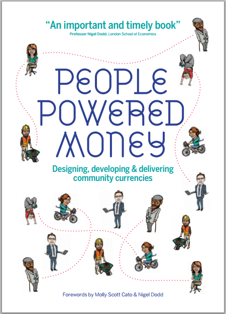
page-003
People Powered Money is the result of a project running from 2012-2015, Community Currencies in Action (CCIA).
Part-funded by the European Union's Interreg project, CCIA is a transnational project in the community currency field, bringing together expert partners from across north-west Europe and co-ordinating six pilot currencies in the United Kingdom, Belgium, the Netherlands and France.
Drawing on the learnings of these pilots and the broader currency innovation movement, this book provides policymakers and practitioners alike with the information and advice to successfully implement a currency project in their communities.
With the right knowledge and support, these can bring significant economic, social and environmental benefits to their users.
Often confined to the margins, community currencies have the potential to become a normal part of economic life.
CCIA hopes this book will enable a new generation of community currencies and support their emergence into the mainstream.
page-008
People Powered Money
Designing, developing and delivering community currencies
First edition published in paperback in Great Britain in 2015 by
New Economics Foundation
10 Salamanca Place
London SE1 7HB
(0)20 7820 6300
info@neweconomics.org
www.neweconomics.org
This book is Licensed under a Creative Commons Attribution-NonCommercial-ShareAlike 3.0 Unported License. Every effort has been made to trace or contact all copyright holders. The publishers will be pleased to make good any omissions or rectify any mistakes brought to their attention at the earliest opportunity. No responsibility can be accepted by the publisher for action taken as a result of information contained in this publication.
A CIP catalogue record for this book is available from the British Library.
Print ISBN: 978-1-908506-78-8 | ePub ISBN: 978-1-908506-80-1
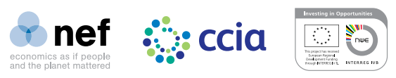
registered charity number 1055254
© April 2015 New Economics Foundation
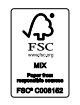
NEF supports The Forest Stewardship Council [FSC], the leading international forest certification organisation.
All NEF publications are printed on FSC-certified paper.
Project Managed by EDDEPRO Services
Cover illustration Alex Lucas
Design and layout A-Side Studio
Copy edited by Alexis Taylor
Printed and bound in Great Britain by Blackmore, Shaftesbury SP7 8PX
page-009
Acknowledgements
This book would not have been possible without the commitment and contributions of our CCIA partners and many external experts who have worked on the topic for many years, as well as, of course, the funding contributed by the European Union's Interreg 4b NorthWest Europe programme.
We would like to acknowledge, first and foremost, those who helped to write People Powered Money, especially Leander Bindewald, Alice Martin, Duncan McCann, Tony Greenham and Duncan Thomas.
This book also draws on recent community currency guidebooks in Dutch and French by our colleagues in Belgium and the Netherlands:
Guide pratique de monnaies complementaires (2013), written by Antoine Attout, Leone Clerc, Amandine Cloot, Antoine Fain, Lise Disneur, Arnaud Marchand and Laurence Roland and published by the Reseau Financement Alternatif in Brussels with the support of the Wallonian government.
Maak je buurt uitmuntend! (2014), written by Bernard Lietaer, Anne Snick and Edgar Kampers, published by the Flemish government.
This book also builds on the CCIA Community Currency Implementation Framework, which pooled the experience and knowledge of our partners and of those on whose shoulders we stand.
For this we are especially indebted to the work of Henk van Arkel of the Social Trade Organisation (NL), John Rogers (UK/DE), Arthur Brock of the Metacurrency Project (USA), Ludwig Schuster and the late Margrit Kennedy of the Money Network Alliance (DE), to mention just a few.
We are also very grateful to Nigel Dodd and Molly Scott Cato for contributing forewords.
Endorsements from such well-known and respected figures demonstrate how far the community currency movement has come in gaining recognition and establishing its credibility within the economics discipline and field of public policy.
Last but not least, we would like to thank Philipp Degens, Jens Martignoni, Ken Barlow, Susan Steed, Julia Slay, Lucie Stephens, Carlos De Freitas and Brett Scott, who have given priceless feedback and support to ensure that the book is not only comprehensive regarding its subject matter, but written and presented in an accessible and stimulating manner.
page-016
CCIA partners
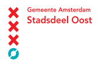
Amsterdam East Municipality: a local authority serving 112,000 residents of a long-deprived area of Amsterdam.
Committed to investing in social, urban and economic issues, Amsterdam East supports the Makkie, a CCIA pilot currency seeking to build community engagement and empower citizens to create the change they want for their community.
Credit Municipal de Nantes: a publicly owned enterprise with an economic and social mission, offering credit and mutual savings schemes to residents of the city of Nantes.
Credit Municipal de Nantes plays a strategic role in improving the quality of life of the community it serves and manages the SoNantes, a CCIA-supported currency.
Lambeth Council: a local authority in South London, UK.
In collaboration with CCIA and the Brixton Pound, Lambeth Council is working to integrate the community currency into council services and promote its wide usage.
This collaboration is an integral part of Lambeth's aim to become Britain's first Co-operative Council - meaning that it will work with local people to design, manage, and deliver services together.
Limburg.net: an inter-municipal, publicly owned waste-disposal company responsible for waste prevention and collection in the province of Limburg and the city of Diest.
Together with CCIA, Limburg.net expanded their community currency, the e-Portemonnee, to encourage environmentally sustainable practices by individuals and businesses across the whole region.
page-017
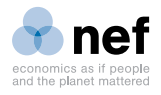
New Economics Foundation (NEF): a UK think-tank promoting social, economic and environmental justice.
NEF is the UK's leading not-for-profit research institute in the study of money, credit and complementary currencies.
Within CCIA, NEF have led on evaluation and communications methods, research into legal and compliance issues, and the production of the collaborative online tool: community-currency.info.
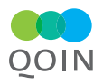
Qoin: a Dutch social enterprise, specialising in the design and implementation of community currencies.
As part of CCIA, Qoin have developed a flexible and functional software platform, Qoinware, that is currently used by several community currencies, including the SoNantes and the Brixton Pound.
They also launched their own co-operatively owned business-to-business CCIA pilot currency: TradeQoin.
Spice: a social enterprise originating in Wales but now working across the UK, Spice develops agency time-credit systems for communities and public- and voluntary-sector agencies.
Having already proven highly successful in addressing inequalities, building stronger communities and empowering citizens, Spice's programmes are being scaled up in partnership with CCIA.
Wales Council for Voluntary Action (WCVA): the voice of the voluntary sector in Wales, representing and campaigning for voluntary organisations, individuals and communities.
WCVA is lead partner for CCIA and has monitored the operations of the partnership, as well as co-ordinating member organisations.
page-018
Forewords
Molly Scott Cato
Just as fish do not see the water that they swim in, so we exist every day in a world where money is shaping and controlling our lives and yet we take it entirely for granted.
We do not ask who created that money; or why some people come by it so easily whereas others are always running to catch up.
That is a shame, because the design and issue of money is one of the keys to understanding economic injustice, and emancipating ourselves from the debt-based money system is an essential step towards creating a just and sustainable world.
This is why I am delighted by the publication of People Powered Money, a book by some of the leading experts in the field of community currency design and implementation.
With support from the European Union, Community Currencies in Action (CCIA) is the biggest transnational coalition working towards building a stronger theoretical and practice base for the development of local currency initiatives.
This book draws on the experience of these key pilot projects in community currencies and the broader currency innovation movement, providing policymakers and practitioners with the information and advice they need to successfully implement a currency project in their communities.
The idea of a community currency is no longer a marginal one and the time is right for these initiatives to move into the mainstream.
As I know from experience, creating a locally bound currency gives you an unparalleled insight into the way your local economy works and the way money shapes economic power.
I am proud to have one of the most successful local currencies - the Bristol Pound - in my political patch.
This book will help to share the understanding of that and the other currencies that are liberating many from economic oppression and helping them build vibrant and resilient economies.
Molly Scott Cato,
Member of the European Parliament for South West England and former Professor of Economics at Roehampton University.
page-019
Nigel Dodd
This is an important and timely book.
For some years now, we have been witnessing something of a monetary revolution, which consists of an explosion of new forms of money.
These vary considerably, and include digital currency technologies such as Bitcoin, new modes of social lending such as Zopa, innovative mobile payment systems such as the M-Pesa, and community currencies such as the SoNantes in France, the Makkie in the Netherlands and the Brixton Pound in the UK.
Alongside this growth in monetary innovation, there has been a surge of interest in the nature of money itself, as people from all walks of life wake up to the fact that the era when there was just one dominant form of money - state fiat money - is over, while others are still catching up on how the old system actually worked.
In many ways this is a return to the past: multiple monies were a fact of life until the late 19th century, and have remained so outside the global north, although in terms of scale, diversity and technology, what we are seeing now is also quite new.
The authors argue that there has never before been a movement of this scale and significance in studying and innovating monetary designs from the bottom up.
But as exciting and intriguing as these developments are, they also pose urgent questions: how best to understand the nature of money in an era of monetary pluralism; how to evaluate the efficacy of new monetary forms; what kind of regulation (if any) might be called for by their emergence; and what their implications will be for our everyday lives.
Bringing together experts from six European countries, Community Currencies in Action (CCIA) has undertaken invaluable research into one major form of monetary innovation, namely, community currencies.
The findings of this collaborative project are presented in this book, drawing important lessons from schemes that are already underway and offering useful advice to people who might be considering launching new initiatives in their own communities.
Besides offering practical advice, the central message of this book is that money really can make a positive difference to our lives and genuinely can enrich the communities in which we live and work.
Money is a tool: it's time we used it to our advantage.
Nigel Dodd,
Professor in Sociology, London School of Economics and author of The Social Life of Money (Princeton University Press, 2014)
page-020
Introduction
Money holds many mysteries.
Where does it come from?
How did it evolve?
Who creates it and controls it?
Why do we never seem to have enough?
This book will help to unravel some of the mysteries of money and to explain how communities can create their own money.
This might seem outlandish to those with no experience of the community currency movement, but the depth of historical experience and breadth of present-day practice testify to the power and potential of currency innovations to make the world a better place.
The abundance of concepts and terminology that has emerged from the world of currency design can be intimidating for those new to the subject.
One way of cutting through this is to think of money - in the broadest sense of the word - as a social technology.
As with any technology, money is designed and implemented to achieve certain objectives.
With mainstream money, such as the national or transnational currencies we use every day, these objectives are obscured - precisely because, paradoxically, the medium and usage is so familiar and unremarkable.
However, rather than merely the oil that eases transactions, money - as social technology - can never be ‘neutral’.
Indeed, this conception has been increasingly challenged by critical economists, who identify negative economic, environmental and societal consequences from how conventional monetary systems are designed and managed.
From their earliest incarnations to most contemporary systems, currencies can be thought of as records of transactions.
Whereas previously these records were stored on tablets and then books, today most are kept electronically, in a purely digital form.
In fact, new communication technologies are widely predicted to herald the ‘end of cash’.
In place of handing over a piece of paper or a coin as a record of exchange, computers can now tally transactions much more efficiently.
page-021
As distant as an entirely paperless economy might still seem in many parts of the world, it will become increasingly widespread due to the advancing digital revolution.
Indeed, many aspects of money today already seem in a state of transformation not dissimilar to the overhaul of transportation and production when steam power sparked the industrial revolution.
These profound changes bring both great risks and exciting opportunities to reconsider and redesign money to better serve human society and our natural environment.
Community currencies respond to such opportunities and, in contrast to conventional money systems, make their aims explicit.
They are technologies designed to help certain communities work together towards desired and commonly understood aims.
Far from merely alternative media that leave the wider system of economic exchange and social relations untouched, community currencies are first and foremost instruments of change and empowerment.
page-022
What is in the book?
The book is divided into two parts.
Part One gives a non-technical overview of the potential benefits and major pragmatic considerations of community currency projects.
As such, it may be particularly useful for those in the policymaking world or people new to the field.
Chapter 1 discusses the rich and varied ancestry of complementary currencies, placing the subsequent sections within a historical legacy.
Chapter 2 then turns to the objectives of community currencies and emphasises the importance of an outcomes-led approach to their design.
We focus on four areas of impact that currencies often address: raising the quality of public services; supporting small businesses and the local economy; addressing social inclusion and building social fabric; and improving environmental sustainability.
Chapter 3 gives an overview of the kinds of stakeholders community currency projects typically engage with, and what levels of commitment and contribution can be expected from each.
Some of the challenges associated with undertaking such a large, complex and multi-partner project are also discussed.
From here, Part Two moves on to consider the ‘nuts and bolts’ of currency design, delivery and implementation.
Although this section is necessarily more technical, we hope that the material will be equally valuable and accessible to both unfamiliar and specialist readers.
Chapter 4 summarises the major considerations of designing a currency and - while emphasising that each community currency is unique - provides a set of guiding principles for any currency design process.
We then go on to discuss in greater depth some of the technical design features that community currencies commonly incorporate in Chapter 5.
Moving beyond community currency design features themselves, in Chapter 6 we cover the wider challenges of making a currency project a success.
A currency can be fantastic ‘on paper’ - so to speak - but without a sound organisational structure or secure funding channels, it can be difficult to get off the ground.
Chapter 7 focuses on developing an effective communications strategy, something essential for getting a currency project going and bringing the necessary people on board at each stage.
Finally,
page-023
Chapter 8 covers the evaluation of a currency project.
For both individual community currencies and the field as a whole, it is essential to build up a rigorous body of evidence in order to learn what works and what doesn't, which design features are effective - or ineffective - in different circumstances and how projects can be further refined and improved.
We have avoided overly specialised terminology, but a certain amount of technical vocabulary is unavoidable.
We have included a glossary to cover all of the technical terms used - all entries are underlined in the body of the book for easy reference.
The ‘Further Reading’ section includes books, publications and online resources for those wishing to go deeper into the community currency field.
Also included are a number of case studies of ‘currencies in action’.
With these we aim to make the book less abstract and give the reader practical examples so as not to get bogged down in the technicalities.
For easy reference, each currency case study is marked with one or more symbols indicating its major objectives.
These symbols recur throughout the book and are detailed on page 24 and 25:
Democratising services and organisations
Supporting the SME economy
Countering inequality and social exclusion
Addressing environmental impacts
CCIA currency
The index at the back of the book will help readers to navigate the case studies of over 30 currencies included, as well as further mentions of their features throughout the book.
For more information on each currency, and the concepts and terms that surround them, visit our online resource: community-currency.info.
Though re-engineering money is no simple feat, we hope that these examples - and indeed the book in general - help to make currency design and implementation a more tangible, appealing and feasible idea for more people.
page-024
Key
Democratising services and organisations
Currency projects can be used to shift the balance of power within public sector and voluntary organisations, transforming the way their services are designed and delivered.
A currency can help organisations explicitly value the contribution people make to their work, tap into underused resources in a local area or uncover the expertise of service users in designing the provisions to best meet their needs.
This symbol indicates community currencies employed to these ends - projects that aim to improve and democratise the public infrastructure required for societies to thrive.
Supporting the SME economy
Many community currencies are designed to counter the dominance of large corporations through supporting more diverse SME economics and educating consumers about the choices they can exercise.
Often part of a long term aim to support more jobs or livelihoods in a local area or particular sector, many of these currencies also seek to foster more sustainable business practices.
This symbol appears next to currency projects aimed at supporting SME enterprises to these ends through a range of methods - for example by strengthening networks between independent businesses, providing alternative sources of credit, or enabling businesses to tap into their spare capacity and free up cash flow for essential costs.
CCIA currency
This symbol shows the six pilot currencies which were part of the CCIA project: Spice Time Credits, Brixton Pound, Makkie, e-Portemonnee, TradeQoin, and SoNantes.
Stories and learnings from these currencies in action are included throughout the book; visit www.ccia.eu for more information and links to their websites.
page-025
Countering inequality and social exclusion
The networks and relationships of trust within a community form the basis of social life and nurture the ground from which the formal economy of money and markets grows.
This symbol highlights the community currencies designed to bolster this ‘core economy’ aiming to tackle some of the drivers and effects of social exclusion and inequality, and improve individual wellbeing.
This may be, for example, by recognising and encouraging people's participation in local projects, supporting people with the necessary infrastructure to become active leaders in their community, or creating vocational or educational opportunities with those who might not otherwise have access.
Addressing environmental impacts
Community currencies play an important role in efforts to better value the planet's finite resources and incentivise more sustainable behaviour.
Often working towards the high level objective of moving away from a money system that relies on endless economic growth, there are a number of ways in which currencies can influence this area.
This symbol denotes the projects seeking to address a number of environmental concerns via a range of methods - such as rewarding waste reduction, mobilising investment for renewable energy or building public support for local supply chains.
Insight
Track this symbol throughout the book for quotes, terminology explanations and interesting examples of currencies making impact in their communities across the globe.
page-027
PART-01 - HOW CAN MONEY BETTER MEET OUR AIMS?
page-029
For many, complementary and community currencies are fairly unfamiliar phenomena.
The first part of this book is aimed primarily at those either entirely new to the field or still only loosely aware of the uses, aims and potential benefits of these pioneering monetary tools.
We present newcomers with the theoretical arguments and provide concrete examples of how and why various kinds of complementary currencies, designed as additions to mainstream money, have emerged over the years.
By situating the book's later, more practice-orientated content within a historical legacy, we hope that the idea of creating new currencies will appear less strange to the reader.
Through positing money - all types of money - as simply a tool designed to achieve certain objectives, we hope to empower readers to reconsider how money should - and indeed could - function better to suit society's needs.
page-030
Chapter-01 Rebirth of an Old Technology
page-031
Community currencies have flourished in recent decades.
However, these contemporary projects have emerged from a rich historical legacy that continues to throw up new ideas and insights.
Examining this legacy helps to demystify money - opening the way to new possibilities for its use and new designs better suited to communities' economic, social and environmental objectives.
In a recent Bank of England paper aiming to explain the nature of money, ‘currency’ is defined very narrowly and simplistically as paper notes and coins.[1]
This, however, only makes sense when just one kind of money, in this case the pound sterling, is considered.
To understand the practice and diversity of community currencies, many of which do not even come in any physical form, we need to think more broadly.
By expanding the definition of currency - and by venturing further back into economic and cultural history - we can focus on the ultimately social role of money and consider new ways in which it can be designed.
From shells and giant stones to tobacco, clay tablets and grain, a huge range of media have functioned as currency.
These include the variety of regional coinage used in the middle ages, the labour notes in the late 19th century and the many examples of scrip money used in the USA and Europe, particularly in the decade sandwiched between the World Wars and during the Great Depression.[2]
Indeed, when thinking about money and currencies - what they are, what they do, where they originated - it becomes difficult to know where to draw the line.
Scrip money
Scrip money, or ‘stamp scrip’, refers to a number of paper-based complementary currencies that rose to prominence during the Great Depression, particularly in the United States, Austria and Germany.
page-032
Aiming to match unused productive capacity with unmet needs as the conventional money supply contracted, scrip money incorporated some form of ‘demurrage’, or negative interest.
This required stamps to be purchased at regular intervals in order for the money to remain valid at face value, effectively decreasing the value of stamp scrip over time and thereby incentivising spending and discouraging hoarding.
The history of complementary currencies is complex and deeply connected to developments in society, social sciences and technology: indeed, in both forms and objectives, currencies tend to evolve alongside other social changes.
As with much else, the history of this evolution is characterised by ebbs and flows, with recurring elements, rediscoveries and forgotten cases.
The broad category of complementary currencies - in other words, currencies that complement a dominant form - naturally requires the dominance of one, central, official currency to which all others appear as complementary.
However, we should also shed the common assumption that contemporary economies revolve around only one kind of money.
Dominant currencies have always and everywhere been supplemented by others.
Community and complementary currencies
Although often used interchangeably, ‘community currency’ and ‘complementary currency’ strictly refer to subtly different phenomena.
Complementary currencies are designed to sit alongside mainstream money to address objectives that the conventional money system can't.
Community currencies - the prime subject of this book - are a subset of complementary currencies that are tied to a specific, demarcated and limited community.
This community could be, for example, geographical (local currencies); business-based (mutualcredit systems); or even online (digital currencies).
As such, a community currency is designed to meet the needs of this defined community, typically on a not-for-profit basis.
page-033
In fact, what has been historically the case is still true today: many people use several kinds of currencies, formally and informally, in their daily lives.
This is not only when travelling to foreign countries and changing between, for example, euros, dollars or pounds sterling, but through loyalty cards, shopping vouchers, air miles, online gaming credits - all are currencies in their own right, even if not commonly described as such.
The plethora of currencies we interact with today - understood here as merely means of transaction - are numerous and varied.
Although the earliest forms of complementary currencies evolved in the 1920s, the specialised theoretical field of research into them was not established until the 1980s, alongside increasing practical experimentation.
Aided by an internet-connected world, general interest in and knowledge of currency design has been building consistently over the last thirty years, promising that this will become a more stable and systemic discipline in future.
The formal study of complementary and community currencies is still at an early stage, however, and has only entered university and government departments very recently.
The publicity storm around Bitcoin has marked the most notable popular challenge to understandings of money and finance in recent years - boosting awareness of currency design more broadly.
Indeed, the very existence of this book, the EU-funded project that produced it and, last but not least, each and every individual reading it, are all indicators of the increasing momentum of currency innovation today.
Alongside advances in information technology, there is a growing awareness of money itself as not being a neutral and fixed element in the fabric of society.
This realisation opens the door to many new possibilities for addressing prosperity, sustainability and wellbeing through monetary design.
We now discuss some of the main developments that have brought us here.
page-034
The historic legacy
The ‘miracle of Worgl’
The 1932-3 ‘Miracle of Worgl’ - named after the Austrian town in which it occurred - is one of the best-known examples of a community currency stimulating the local economy.
In the midst of the Great Depression's monetary contraction, the town's new mayor, Michael Unterguggenberger, issued a town currency incorporating demurrage.
Currency circulation was boosted and the small town of Worgl was able to stave off the effects of the global crisis: unemployment was vastly reduced; streets were repaved; new houses were constructed; major infrastructure projects were accomplished.
All was financed by the town's ‘free money’.
As Worgl's example gained fame, the Austrian central bank stepped in.
Community currencies were outlawed and the Depression returned.
WIR Bank
The Swiss WIR Bank (abbreviation of Wirtschaftsring or ‘business circle’ Bank) was founded in 1934 as business was decimated during the interwar financial crisis.
Today, the WIR Bank has a ten-figure turnover and over 60,000 members - mostly SMEs (small and medium-sized enterprises) in construction, hospitality, manufacturing and retail.
The bank provides these members with credit at virtually zero interest, marketing opportunities and a clearing system, through which goods and services can be exchanged using the bank's own currency: the WIR franc, which is pegged at par but not redeemable with regular Swiss francs.
Shortages of national currency thus need not affect actual economic activity, with the WIR Bank having a countercyclical effect - that is, expanding during recessions and contracting during booms.
This allows SMEs to survive and even prosper during times of uncertainty in the mainstream cash economy.
Some of the most commonly cited examples of successful currency schemes, like the ‘miracle of Worgl’ and the WIR Bank in Switzerland, were founded in the first half of the 20th century and
page-035
still inspire currency practitioners all around the world.
The WIR Bank in particular, a business-to-business currency operated as a co-operative and supporting the SME sector, is often mentioned as a successful enterprise standing at the intersection of economic and social purposes.
Its 80-plus years of operation and adaptation provide inspiration and encouragement to current currency designers; and it is in the lineages of such successful systems, past and present, that lessons can be learned and new technologies and ideas more readily embraced.
Modern grassroots origins
The modern history of community currencies truly began in the early 1980s with the advent of information technology and in response to the economic hardship of the 1970s.
Michael Linton, in British Columbia, Canada, originated the currency concept of Local Exchange Trading Systems (LETS) and designed a networking computer programme to support them.
Linton's software allowed community members to easily log and share their offers and wants, as well as record transactions between them.
This innovative model took hold around the globe, most prominently in the 1990s.
LETS have since become the flagship community currency for many.[3]
LETS (Local Exchange Trading Systems)
LETS today are essentially mutual-credit systems for individuals, rather than businesses.
Members of a LETS advertise their skills and services and exchange these with other members in return for credits.
LETS are intended to mobilise the latent capacity of a community by providing both a forum and medium of exchange outside the conventional market economy.
The networks are co-operatively managed and self-regulating and are commonly associated with the ideals of empowerment, localisation and community building.
Unlike timebanks, they have no central broker and members negotiate prices for services, with credits normally valued on a one-to-one basis with national currency, rather than in time.
page-036
The growth of such do-it-yourself currency initiatives broke with the assumption that monetary and financial innovation was the exclusive purview of governments, or inevitably wedded to the needs and wants of corporations and banks.
Instead, currency experiments started to be harnessed for the benefit of people, local businesses and their wider communities.
Within this bottom-up innovation, the first modern experiments with time-denominated currencies emerged at around the same time.
Explicitly focusing on social exchanges, time-currency systems were popularised in the early 1990s by Edgar Cahn, who first coined the term ‘time dollar’.
Cahn anchored the practices and ethos of the ensuing wave of currencies on the values of solidarity, equality and respect.
Timebanks and time-credits are the two types of community currency that most directly reflect these values.
Time-based currencies
The community currencies most widely used to recognise the value of activities neglected by the mainstream economy are timebanks.
The principle behind such currencies is simple: one hour's work equals a unit of time.
Exchanges between members are mediated by a broker, who matches the requests of one member with the skills offered by others.
This offers an incentive for people to help other members of their community and can give isolated or economically excluded individuals - such as the elderly - the opportunity to ‘buy’ services they would otherwise be unable to afford and to feel that their own skills are valued and needed by others.
A second model useful for increasing social inclusion, which is a derivative of traditional timebanking, is that of time-based currencies often referred to as time-credit systems.
Although working on the same principle of one hour = one credit, this model overcomes certain limitations of timebanks: most significantly, exchanges are not limited to being between individuals or by the mediation of a central broker.
Instead, the currency - whether physical or electronic - itself mediates exchanges, circulating freely between any individual or organisation willing to issue or accept it.
page-037
While timebanks tend to operate in hyper-local geographic areas and are usually limited to members exchanging their skills with one another, a fully-fledged time-credit currency has greater potential to engage businesses and larger-scale community projects.
Both LETS and time dollars form much of the basis of present day community currency schemes, practised all around the world in networks of different sizes.
There has not yet been a reliable census of all the systems in operation - in part due to the varying terminology used in different languages, as well as many projects' hyper-local focus, which means that systems often emerge and disappear quietly.
These grassroots currencies, launched by individuals and small groups of concerned citizens, reached new levels of significance when the ‘trueque’ community currencies in Argentina supported the livelihoods of up to 10 million people following the 2001 crash of the national currency, the peso.
More recently, the euro crisis has prompted other examples of similar currency initiatives - like the TEM in Volos, Greece, and many others in Italy and Spain - that have thrown the question of currency pluralism into the political mix.
While the TEM (‘Alternative Monetary Unit’ in Greek) hit the local markets and international news as if it were a brand new invention, it was not - as we have seen in this chapter.
Efforts to design countercyclical currencies to fill the gaps when national currencies fail will undoubtedly continue.
Trueque
The Redes de Trueque (Barter Networks) evolved in Argentina in the mid 1990s in response to the economic crisis and collapse of the national currency, the peso.
The network created a countrywide chain of community markets, which used their own currency, the ‘Credito’, to facilitate exchange of goods and services.
Acceptance of the Creditos of other markets was voluntary, while overall administration and structure of both the network and currency was entirely decentralised.
While this, along with the largely spontaneous nature of its appearance, left the currency vulnerable to fraud, the trueques and Creditos allowed countless people to survive a severe economic crisis, with membership peaking at 2.5 million individuals across 4,600 centres in 2001.
page-038
Argentina's trueque networks demonstrate both the potential of community currencies to function as alternative mediums of exchange during economic crises and the need to develop more accountable and resilient networks in preparation for such an eventuality.
The new millennials
In the early years of the new millennium, another wave of innovation emerged with currencies like the Chiemgauer in Germany, Banco Palmas in Brazil, BerkShares in the USA and Transition Pounds and EKO in the UK.
These systems are distinct in that they are backed by their respective national currencies - making them redeemable for cash if there are no suitable spending options.
These currencies are supported with formal organisational set-ups and funding requirements more akin to voluntary-sector initiatives than grassroots interventions.
Environmental sustainability has also become an increasing driver for many currency projects.
Examples such as the German Regiogeld and transition currencies strive to stimulate sustainable development, encourage environmentally friendly activities and reduce carbon emissions.
page-039
Regiogeld
Regiogeld refers to multiple community currencies across Germany, Austria and the Netherlands.
As the name implies, ‘regional money’ serves a larger geographical community than most locally bound community currencies.
They thereby increase the potential for environmentally sustainable production and supply chains by casting their net more widely across the local region.
While using a variety of models - including paper-based or electronic systems incorporating demurrage and some forms of local credit systems - Regiogeld currencies are designed to counterbalance the negative effects of globalisation through stimulating local SME economies.
The most well-known Regiogeld currency is the Chiemgauer, operational in Bavaria since 2003.
Today's cross-sector fusion
Government and regulators have not always supported currency innovation - from the Austrian Central Bank's infamous closure of the highly successful local currency in Worgl in the 1930s to today's lack of clarity, in many jurisdictions, on the tax and social benefit implications of LETS and timebank income (covered in Chapter 6).
Such uncertainty can impede projects' collaboration with regulators or the public sector.
Conversely, however, some local authorities, city councils, regional governments and - most recently - the European Union have started to engage with and explore community currencies.
This growing interest is largely thanks to the determined efforts of NGOs (nongovernmental organisations) running currency schemes, who have presented strong cases to public funders to support such schemes.
The backing of currency projects by public bodies offers not only a potential remedy for the many funding cuts that have ravaged countries since the 2008 financial crisis, but also an improvement to public services and policies beyond what money can buy.
CCIA launched in 2011 to demonstrate the potential of currency schemes to a transnational audience of policymakers, governmental agents and the communities they serve across the Netherlands, Belgium, France and the United Kingdom.
Several projects have since arisen with backing from local
page-040
authorities.
The council of Lambeth in London, a CCIA partner, cooperated with the Brixton Pound to enable participating businesses to pay taxes in the local currency.
Bristol City Council followed suit when the Bristol Pound launched in 2012, giving SMEs a broad chain of spending opportunities right from the start.
In 2011, the City of Ghent in Belgium rented out gardening spaces for a newly created social currency, the Torekes, which can be earned through many activities aimed at improving the built environment and community spirit of one of the country's most disadvantaged areas.
The city of St. Gallen, Switzerland, launched a time-credit scheme - the Zeitvorsoge initiative - to complement its ever-stretched pension and healthcare systems.
The scheme allows people to earn and save credits by providing care services to elderly citizens.
These credits can then be redeemed for care services in the future, when earners might themselves require assistance.
Guaranteed by the city authority, this convincingly demonstrates how social-security systems can be bolstered without significant funding increases or reducing public services elsewhere.
The city of Nantes in France has mandated its public lending institution, the Credit Municipal, to develop a currency for the city and its metropolitan region.
Together with CCIA , the SoNantes was launched in 2015 as a ground-breaking regional currency model, providing interest-free liquidity for SMEs.
The SoNantes
Inspired by the Swiss WIR, the SoNantes currency launched in Spring 2015, supported with EU funding and managed by Nantes' public bank.
Its innovative model allows businesses to trade using a closed-loop mutual-credit system, alongside individual consumers who have bought in to the scheme through purchasing credits for euros.
These all-digital credits can be exchanged for goods and local services, including public transport, using a swipe card.
page-041
These examples are a new milestone for currency projects and, increasingly, specially designed currencies are being discussed as financial solutions for larger constituencies, with government bodies taking note of their benefits.
There is an emerging demand for democratically determined economics that make the most of what money, as a tool, can offer - demonstrated by the dozens of proposals drawn up in recent years for a countrywide second Greek currency to allow it to stay within the Eurozone.[4]
Complementary systems have been proposed to bolster, in a variety of ways, Greece's domestic market, which has all but collapsed under austerity measures.
With the victory of Syriza in the general elections and new finance minister Yanis Varoufakis in post, ideas for a complementary currency have seen a renaissance in early 2015.[5]
Nation-states are, however, not the only big players to have opened their eyes to complementary currency models.
Linden dollars (the currency of virtual world Second Life) and Bitcoin have been integrated into banking systems; large corporations too have initiated currency systems - for profit-driven purposes - such as Amazon Points, Google Wallet and Apple Pay.
The rapid development of digital payment systems further demonstrates that money is a tool to be shaped and used.
In reality, money is simply a social technology and the ways in which it is designed, produced and controlled - far from being neutral or predetermined factors - all influence the effects it has upon society at large.
Recognising this is the first step towards creating currencies as instruments for the benefit of particular communities.
page-042
Chapter-02 Why - Community Currencies: Money With a Purpose
page-043
Community currencies can be employed to achieve a range of outcomes; here we provide an overview of their most common objectives.
From the complex history of and present-day experimentation with currency design that informs what is thought of today as money, we have begun to define community currencies as a specific category.
They are distinct from other types of complementary currencies in two main ways:
(1) Their explicit aim to support and build more equal, connected and sustainable societies;
(2) Their design to be used by a specific group.
Often devised in response to the shortcomings of the monetary system - for example, the lack of credit available for small businesses, or funding cuts to public services - community currency projects set out in different ways to link up the spare capacity of some of their members with the unmet needs of others.
Such currencies are broadly united by the aim of improving how money addresses the complex needs of societies.
page-044
Designed for impact
Starting from an idea of the positive impact a project would ideally have, well-designed currencies can address a wide number of different aims.
Taking an outcomes-led approach is key to community currency design, ensuring that models are not created as ends in themselves, but instead as tools aiming to bring about a particular change.
Grouping examples of community currencies in terms of their intended impact is a useful starting point to compare how different approaches can be taken to address different issues.
The following four areas broadly cover the social, economic and environmental objectives that inform the range of community currency projects operating across the world today:
(1) Democratising services and organisations
(2) Supporting the SME economy
(3) Countering inequality and social exclusion
(4) Addressing environmental impacts
Each currency model is in practice unique, tending to address several of the above objectives rather than sitting neatly under one category.
To demonstrate the range and combination of existing currency models' aims, these four symbols occur throughout the book next to relevant currency examples.
Democratising services and organisations
In recent years, currency initiatives have become recognised policy tools for local governments.
As monetary transactions are more and more prevalent in public service provision, people increasingly relate to these services - whether leisure, education or healthcare - as consumers rather than active citizens.
Specially designed currencies can alter the dynamic of these increasingly monetised relationships, reinvesting them with social meaning.
page-045
Meeting community needs
Particularly since 2008, many states in Europe and around the world have taken political decisions to significantly shrink local government budgets.
The needs of the communities that these budgets formerly served have not, however, disappeared.
The shortfall created by a reduced public pot has given the rhetoric of citizens ‘doing things for themselves’ a new, politically loaded, significance.
When people are required to step in with their own time and resources to fill holes left by public funding cuts, inequalities become starker.
Areas where residents tend to have more spare time and money are immediately advantaged over others.
As such, cutting budgets with no provisions in place to keep social initiatives and key public services afloat has had a negative impact on community building.
There are, however, more proactive steps that can be taken towards building communities with more active, empowered citizens.
As local authorities are pressurised into finding new ways to deliver services, growing numbers of currency designers are teaming up with forward-thinking public bodies to meet the latter's complex demands.
Currency initiatives are practical responses to a range of policy areas that don't aim to replace or rollback public services, but rather to transform them into being more useful and better value for money.
Though requiring significant upfront investment for lasting success, both in terms of economic viability and input from practitioners and end-users, community currencies can offer the long-term reward of a cost-effective tool that brings people actively into the process of solving the needs of their community.
page-046
A new way to deliver services: co-production
“Co-production is a relationship where professionals and citizens share power to design, plan and deliver support together, recognising that both partners have vital contributions to make in order to improve quality of life for people and communities.”
from Commissioning for outcomes and co-production:
a practical guide for local authorities [6]
page-047
Currencies can positively alter the relationship between public services and the people they aim to serve.
In a public sector setting, co-production is increasingly used in the commissioning, design and delivery of services.
Instead of trying to ‘fix’ people's needs, co-production looks at people's assets - their time, expertise and skills - and builds a more equal partnership to mutually design and deliver public services.
This approach is opposed to - and indeed emerged as a criticism of - traditional, top-down and centralised models of service-provision, which see users largely as passive ‘recipients’.
As funding cuts put this model under increasing strain, co-production has gained the attention of policymakers as a possible alternative.
Zeitvorsoge
A good example of using a community currency to facilitate co-production of public services is the ‘Zeitvorsoge’ - literally ‘timeprovision’ - initiative, launched and financed by the City of St. Gallen, Switzerland.
Its main objective is to allow retired but generally fit senior citizens to save time-credits through helping those in need of basic care.
Several local elderly-care organisations provide volunteers with opportunities to earn time-credits.
The city itself acts as guarantor, ensuring that credits can be redeemed at any date in the future for similar care services if and when the earner requires them, either through the elderly-care organisations or peer-to-peer.
This puts people in charge of their own care, allowing them to define and meet their own needs - crucially, however, with the professional and financial support of public institutions.
Community currencies offer a lever for realising the potential of co-production.
They allow local authorities, professional organisations or businesses to explicitly value, and thereby incentivise, the contribution of the general public to their services.
If well designed and implemented, a community currency can bring new ideas and inputs into public service delivery in a cost-effective way, strengthen independent community-based initiatives, recognise talents and activities not valued by the mainstream market economy and create their own dynamics of interaction and exchange.
People can be enabled to engage differently with care, education and leisure providers, such as health services, local council
page-048
programmes, schools or charitable organisations.
For instance, timebanks, in valuing people's time equally and incentivising schemes that encourage socially and environmentally beneficial behaviour, are prime examples of currency models designed to address this area.
Makkie
Introduced in 2012 in the Makassarsquare area of the Indische Buurt region in the Netherlands, the Makkie is a time-currency and loyalty scheme.
Recently extended over a wider neighbourhood, the currency takes the form of physical notes, with one Makkie equalling one hour of service or community/voluntary work.
Makkies can be redeemed for products, services, leisure activities or discounts at local shops.
The Makkie aims to empower citizens to take active roles in their community and increase residents' wellbeing.
Activities are devised and supported by the local housing corporations, welfare institutions, professional organisations and municipality in response to needs highlighted by research and engagement with residents.
It is essential to emphasise that co-production is not a quick fix or an excuse for making individuals and communities unrealistically responsible for their own welfare; nor is it a silver bullet to the challenges of reductions in state funding.
Although some of co-production's benefits can be easily monetised as direct savings to the state, many of these will likely be realised only in the mid- to long-term, while others (such as wellbeing or empowerment) can be hard to measure quantitatively.
Currency projects can enable councils to collaborate with other local stakeholders, such as independent businesses, residents' groups and charitable organisations.
They are a tool through which constituents can knit together their resources proactively in order to strengthen a local economy and community, rather than reactively as councils are forced to do in the face of budget cuts.
The broad aim in this scenario is to connect communities' excess resources, including the undervalued skills of its members as well as local facilities, in a way that better fulfils the needs and wants of that group and the wider community.
page-049
Supporting the SME economy
A diverse financial system catering to the unique needs of regional and local economies is essential for a healthy national economy.
High streets containing a diverse mix of businesses form local economies more resilient to external changes and more rewarding for residents and visitors.
Increasingly, these businesses are meeting the growing consumer preference for online shopping, forming what some have termed ‘virtual high streets’ of independent businesses to counter the current online big hitters such as Amazon and supermarkets' websites.
This desired state of commercial diversity is threatened by the mainstream growth model of the retail sector, which tends to follow the logic of ‘bigger is better’.
As well as putting local companies out of business, sprawling supermarkets and other large chains are most likely to leave an area in times of economic trouble, taking jobs and local amenities with them.
However, with many large retailers recently suffering their worst sales figures in years, some are speculating that the bigger is better model could be coming to an end - increasing the chance for SMEs to regain their place in the market.
Currency systems can be designed to counter the dominance of large corporations through supporting the diversity of SME economies and educating consumers about the choices they can exercise.
Some business-focused currencies assist businesses with operational aspects, such as purchasing supplies, incentivising sales and paying staff, helping them to improve productivity and become more resilient to changes in the wider economy.
The target users of different models vary, with some business-to-business currencies aimed solely at SMEs and others extending to consumers.
Improving cash flow
Many European financial sectors, the UK's being a prime example, are dominated by a handful of international commercial banks.
Because of this, they are easily criticised for being out of touch with the productive industries and SMEs that power regional and local economies.
Since the 2008 financial crisis, banks have generally reduced lending to SMEs, leaving many businesses and start-ups in need of alternative credit sources.
Complementary currency initiatives can help SMEs support each other financially by lending and receiving credit, goods and
page-050
services within the currency network - reducing reliance on cash and banks.
For example, business-to-business (b2b) trade systems allow members to make purchases and sales using ‘trade credits’ or ‘points’, so they can reserve more of their regular cash flow for operational costs.
TradeQoin
TradeQoin is a Dutch SME trading network that lets businesses pay each other for goods and services with their own digital currency created at the moment of exchange.
This helps members reduce their euro expenditure and offers SMEs fast and cheap working capital in TradeQoin.
The online marketplace run by members stimulates business between participating SMEs.
Complementary currency systems have historically emerged as substitutes for mainstream money when there is not enough of the latter circulating.
This can come in the form of increasing business cash flow, as has been discussed, but also as a replacement transaction medium when the regular option, for example the national currency, has dried up.
Bangla-Pesa
As a mutual-credit system for SMEs in an impoverished district of Mombasa, Kenya, the Bangla-Pesa allows members to trade goods and services with one another regardless of their conventional money supply.
Over 200 SMEs are currently part of the network, which itself is only one facet of a wider poverty-reduction programme.
The currency was introduced by Koru Kenya, a local NGO working on economic relief and stabilisation.
As 75% of the SMEs in the area are owned by women, the Bangla-Pesa is also proving to be a useful tool for reducing both gender and economic inequalities.
According to research carried out in 2014, the ‘typical’ network member is a 35-year-old mother who identifies herself as the main provider for 2-3 children.[7]
Creating strong business networks
Many currency schemes offer businesses an opportunity to form networks between themselves, providing a platform to publicise
page-051
their work to the rest of the network.
This can generate incremental sales from buyers looking for trade opportunities from within the currency network.
Businesses can identify with one another over the ethical dimension in the trade they perform, or simply recognise the commercial advantage of increasing mutual exchanges.
Currency networks can connect businesses with new customers sharing values such as reducing carbon footprints, or keeping production local.
BerkShares
BerkShares are the community currency of the Berkshire region of Massachusetts, USA.
The currency is purchased in return for US dollars at local partner banks, with an estimated 4.3 million BerkShares issued since 2006 and around 130,000 in circulation at any one time.
The principle objective of the BerkShare, like other geographically bound currencies, is to keep wealth within the area and encourage localisation of production and consumption.
Furthermore, strong business networks encourage a self-help model of exchange and mutual support along supply chains.
Through facilitating interactions between businesses, they encourage long-term relationships between SMEs in the same area or sector.
This could be, for example, through building links between a service provider, such as a restaurant, and local suppliers, such as cash-andcarry or drinks companies.
Palmas
Banco Palmas is a community bank in Fortaleza, Brazil.
Since 2000, it has offered interest-free microcredit loans in the local currency, the Palmas.
The bank's objective is to localise production and consumption and, through the Palmas, retain more wealth within the area, generating both employment and income.
Banco Palmas illustrates the benefits of a strong local banking sector for local economies, acting as a trusted backer of the community currency.
The example has now spread to over 100 locations across Brazil, and is acknowledged by the central bank as a valuable initiative.
page-052
Using spare capacity
Most businesses do not operate at 100% of potential capacity.
The commercial benefits of connecting underused assets with unmet needs - a primary goal of complementary currencies - are clear.
A reward currency scheme might enable businesses to exchange particular assets at reduced cost to loyal customers for points; or a trade network could provide otherwise underused services to other businesses in exchange for credit.
For instance, spare cinema seats could be offered as competition prize or staff bonuses to another business, in exchange for credits.
These credits can then be spent elsewhere in the network.
TradeQoin case study
Manoushka Botts, founder of Amsterdam-based CarCleaners.nl, is a TradeQoin member.
Speaking of the benefits, Manoushka says:
“We have a number of cleaners on contract and during low season they have less work to do.
I decided to start offering cleaning services in exchange for TradeQoin credit, which I can then spend on something I need for the business.
What I’m looking for is a company or freelancer to help me develop a new website.”
The TradeQoin network not only provides Manoushka with another source of income, but connects her to other local SMEs, supporting the area's economy overall.
Keeping money circulating locally
Pumping money into an area is pointless if it flows straight back out again.
Yet this is precisely what happens with national or (regarding the euro) international currency.
This leakage occurs because, if high streets are dominated by multinational corporations with non-local supply chains and there is no geographical restriction on where the currency can be spent, profits will not remain within the locality.
page-053
“The SoNantes benefits those who produce and consume locally.
It doesn't replace the euro, but provides an intelligent complement.
It promotes local trade and short production and supply chains, allowing member SMEs to pay less in euros - helping them conserve their cash reserves.
It gives each of us a new way to act for our region, for its development and for our jobs.
It is a tool that we share so that everyone benefits.”
Pascal Bolo, First Deputy Mayor of Nantes
Local currencies that are specific to a particular geographical area offer ways to keep more of the money in that area.
They can help to plug the leaks - reducing the level of profits flowing to headquarters of large corporations, rather than back to the people that work for them.[8]
Why does this matter?
Because keeping money circulating
page-054
within a locality or SME network, through wages or supply chains for example, increases opportunities to reinvest in that community and strengthens both economic and social local infrastructures.
Chiemgauer
The Bavarian Chiemgauer is the first and largest of Germany's Regiogeld initiatives.
The currency incorporates demurrage, or negative interest: in order for Chiemgauer notes to remain valid at face value, a token must be purchased and attached every three months.
This incentivises spending and discourages hoarding, meaning that the Chiemgauer circulates more rapidly and frequently than the euro.
The 600 SMEs in the network meet around 50% of local people's needs.
Around 2500 users and 250 voluntary organisations also use the Chiemgauer.
Eusko
The Eusko is a regional currency launched in 2013 in Bayonne, a city in the French Basque Country.
As of October 2013, it is the largest complementary currency in France, with more than 466 business members, 2,300 individual users and 170,000 Euskos in circulation.
The Eusko aims to relocalise the economy through encouraging local trade; develop social ties and solidarity; better value the Basque language and culture; support local projects of common interest; and reduce the environmental impacts of the economy.
The Eusko is backed and valued one-to-one with the euro.
If a certain critical mass of businesses and individuals using a community currency is reached, then a mutually reinforcing relationship between benefits to local buyers and sellers should develop.
As more local SMEs accept the currency, more individuals are encouraged to shop with them; local businesses then recycle community currency profits back through, for example, exchanges with other SMEs and bonuses to staff - using money that can then only be spent once more back in the local economy.
A virtuous circle of spending and reinvestment is thereby created.
page-055
With production and supply currently so globalised, this ideal state is unlikely to be realised immediately.
Community currency practitioners therefore actively identify and fill gaps in the local economy.
One way to do this is to use national currency surplus - built up as individuals and businesses buy the local currency without redeeming it later - to make interest-free loans to sustainable local businesses that meet supply and production needs and gradually build a local economy that is both commercially and environmentally sustainable - and avoids leakage.
EKO
The EKO is the community currency of the Findhorn ecovillage in north-west Scotland.
Pegged to pound sterling, it operates alongside the village's LETS to provide a strong and resilient local money system.
The EKO offers low-interest loans to various community projects.
To date, these have included a youth project, a local co-operative and a community wind farm.
A sustainable housing development will also soon be financed through the EKO.
The currency contributes to the ecovillage's overall vision of demonstrating an economically, environmentally and socially sustainable community-based development model.
Educate consumers and increase customer loyalty
Currency projects can stimulate thinking and discussion about how money works and impacts a local economy.
Raising people's awareness of the socio-economic dimensions of their consumer behaviour can have direct benefits for local economies through increasing custom to participating businesses.
As customers chat to business owners about why they're participating in a community currency scheme, and what advantages it brings to both parties, stronger connections between local people and businesses are forged.
This can create a more social high street, where business owners and customers get to know each other, as well as developing customer loyalty around the shared values represented by the currency.
Both aspects can boost or stabilise the turnover of participating SMEs, as customers seek out participating businesses to spend their local money.
page-056
Local authorities, as major procurers of services and products, may be receptive to the benefits of community currencies.
For instance, using a community currency to procure services is an active way to demonstrate support for independent businesses.
Brixton Pound
The Brixton Pound is a community currency operating in South London, UK.
Although primarily designed to support local SMEs, the Brixton Pound also seeks to increase the sense of community cohesion and draw on the area's history of social activism.
Valued one-to-one against pound sterling, the Brixton Pound can only be spent with local SMEs and thereby aims to retain wealth within the community.
Many participating businesses offer discounts to those paying in Brixton Pounds - in effect offering a loyalty scheme that both demonstrates their commitment to the local economy and increases custom.
In the long term, increased links between Brixton-based SMEs themselves localise as far as possible supply and production chains to create a more sustainable and resilient economy for the area.
The Brixton Pound has demonstrated commitment to supporting independent businesses through vocal opposition to plans that would see many well-known local establishments evicted from one of Brixton's famous high streets: Atlantic Road.
The high profile of the Brixton Pound helped the campaign gain media attention and draw 13,000 signatures on a petition protesting the evictions (the campaign was ongoing at the time of writing).
This demonstrates how currency initiatives can situate themselves within wider communal, social and political life and the benefits they can bring to an area beyond monetary value.
Social highstreet case study
Research from the University of Bristol and Brunel University, London, provides evidence that community currencies primarily designed to support the SME economy may also have significant social effects.
According to the research, transactions using such currencies - in this case the Bristol Pound - contribute to people making connections to others, to their communities, to the
page-057
environments they move through and to what they consume, while developing feelings of trust and opening up new kinds of interaction.
In other words, the conscious choice of businesses and consumers to conduct economic exchanges via a medium that explicitly values and supports the local area and SMEs can lead to significant gains in community cohesion and reconfigure social relations.[9]
Offer businesses and their customers new ways to transact
Currencies can provide businesses with point-of-sale options that they might not otherwise have been able to afford.
A currency initiative incorporating digital systems, such as phone apps or pay-by-text options, allows participating traders to accept electronic payments - and offers customers new, often more convenient ways to purchase goods.
Small businesses can thereby keep up with - or even move ahead of - the technology offered by large corporations, while the added convenience for customers can translate into a boost in sales.
Brixton Pound case study
Brixton Pound has pioneered new payment options for local traders.
When the Brixton Pound launched their pay-by-text system, the added convenience prompted Alicia Reynolds - a Senior HR Officer at Lambeth Council - to request part of her salary in her local currency.
In her words:
“It saves me a trip to the bank.
Sometimes I’ll go shopping, and then remember I don't have any cash on me, but then I realise, I’ve got my Brixton Pounds.
Paying by text means you don't have to queue up and wait for change.”
The success of pay-by-text spurred on a further advancement in 2014 - the introduction of ‘tap and pay’ technology with a corresponding app.
The new system uses near-field communication (NFC) technology, which allows smartphones and similar devices to make radio communication with each other by touching them together or bringing them into proximity.
Evaluation of the Brixton Pound highlights the potential of community currencies to impact behaviour and affect attitudes.
Of those using the currency, 70% reported that they had got to know local business owners better as a result, 55% that it had made shopping more convenient, 88% that it was good to be spending in a way that supported local values, and 82% that it had reinforced their pride in Brixton.[10]
page-058
Countering inequality and social exclusion
The day-to-day costs of active involvement in local voluntary or leisure activities are often overlooked.
On top of major household costs like rent, bills or mortgage payments, the cost of, for example, taking a bus to another part of town, or paying a child minder, often prohibits people on low incomes from participation in local events.
Volunteering at a primary school or helping to run a coffee morning involves time and money that not everyone has.
By redistributing resources more equally, community currencies can help to overcome these inequalities of free time and money.
Social participation
Exclusion of certain groups from social life weakens community relationships overall.
Specially designed currencies can be used to oil the wheels of social participation, ensuring that all groups are given realistic, relevant and meaningful opportunities to get involved in their communities.
page-059
Spice Time Credits
Spice partners with local authorities, schools and housing associations to offer time-credits to individuals participating in voluntary programmes.
Credits can then be traded between individual members - as in a traditional timebank - or spent at various nonprofit, public or corporate partners.
These currently include cinemas, gyms, family activities and vocational training.
Spice also works with the public sector, utilising time-credits to introduce co-production to public services.
At both the earning and spending stages, one credit equals one hour of a person's time or organisation's services.
The Spice system has its historical roots in the Welsh labour movement, when mining communities would contribute part of their wage to both support and access mutually owned local services, such as clinics, workingmen's clubs and libraries.
It is important to clarify that community currencies cannot single-handedly overcome the deep social, economic and political inequalities that exist within societies.
These are structural issues requiring structural change.
Nonetheless, well-designed currencies offer a unique tool for addressing some of the drivers and effects of social exclusion.
Involvement in voluntary and community work offers many benefits to the socially excluded and economically marginalised: a chance to develop new relationships, valuable skills and a feeling of self-worth.
The work of such projects is also of great worth to the wider community, mobilising local residents' latent assets and skills.
For example, credit-earning sessions allowing qualified but unemployed hairdressers to practise their skills and build up their haircutting experience also facilitate socialising.
In this way, currency transactions can catalyse further community activity, as people think up new earning and spending opportunities for the currency system and form new relationships with local facilities, both private and public.
page-060
“The most exciting thing about time-credits is their diversity of applications.
They can work with schools, social care, community connection, building social capacity.
It can work whether you’re a small or big organisation.
They really allow us to improve our interventions.”
Claire Mattison, Lancashire County Council, discussing Spice Time Credits
Moreover, the activities created through currency schemes give people extra incentives to engage with others in their area.
If well designed, they can bring together a diverse range of groups: people from different generations, cultures, religions or social classes whose paths might not otherwise cross.
Makkie case study
The time-based Makkie amplifies the impact of around 250 community projects in East Amsterdam.
A founder of a community transport service that uses the Makkie explains:
“Just going to the local market, to the hospital or to visit someone - those are the type of trips that pose a problem for the elderly.
A taxi is too expensive and you have to order a ride with Connexxion [the local public transport company that offers trips for disabled and elderly] way in advance.
Just getting dropped off for a
page-061
small errand at the supermarket is impossible.”
Now, she offers neighbourhood lifts in exchange for one Makkie.
As a result, elderly residents are no longer house-bound and can travel safely to wherever they need to go - having a good chat on the way.
Supporting the core economy
The networks and relationships of trust within a community form the basis of social life and nurture the ground from which the formal economy of money and markets grows.
However, as forms of unpaid work, the value of caring for relatives, raising children, assisting neighbours or carrying out household tasks like cooking, cleaning and managing finances, is generally not recognised in the formal economy.
These ongoing tasks of maintaining and fuelling society and the lives that make it up, often but not exclusively carried out by women, constitute the ‘core economy’ - without which life as we know it would grind to a halt.
Much can be done to tap into, and strengthen, the core economy, as well as to better value and support it.
Valuing here signifies the recognition of worth, of what this economy contributes and achieves, rather than putting a specific price on it.
This is where community currencies can play a role.
Currencies based on time-exchanges explicitly recognise the skills of those making up the core economy.
For instance, in a time-credit system, a neighbour providing respite care for a local carer can be rewarded for their time with a credit.
This credit could then be redeemed for a school trip for their child or a trip to the local cinema.
The idea is not to give volunteers a form of payment, as the activities themselves tend to be considered intrinsically valuable - in other words carrying them out is a reward in itself.
Instead, time-credits are a recognition of the time spent in and for the wider community.
They allow those carrying out this work to take up opportunities that might otherwise be inaccessible, or even donate their earned credits to local charities or vulnerable individuals.
Addressing inequalities
In any given society, certain groups are more powerful and better-off financially than others.
Social policies that aim to enhance or ‘grow’ the core economy must therefore go hand-in-hand with measures to promote greater equality within and between different
page-062
social groups.
A systemic approach understands the dynamics of inequality: what the causes are and how they interact with and reinforce each other.
Social and cultural factors such as gender, age, disability, ethnicity and sexual orientation influence the way people experience income and wealth inequality and often intensify disadvantages.
Addressing complex systems of inequalities - both in economic and social terms - therefore requires specific strategies.
Community currencies cannot be expected to tackle these inequalities alone, but they do offer a valuable tool.
Crucial to reducing inequality of any type is empowerment.
Community currencies can help redistribute power from those who already have it, through wealth or other forms of privilege, to those who don't.
Spice Time Credits case study
Cheryl Hughes first earned Ely Time Credits through participating in community projects, getting her whole family involved to earn enough for an upcoming day trip.
Participating in these activities helped Cheryl build new relationships and get to know new people locally.
She then formed a new group herself: Community Mothers.
Cheryl says:
“Time Credits opened my eyes.
I never thought I would be able to do anything other than care for my children because of my dyslexia.
It's helped me gain confidence in myself and improve the way I now live my life.”
Empowerment and self-worth come hand in hand, and timebanks and time-based currencies that value a diverse range of skills and knowledge allow both to grow.
The voluntary activities facilitated by a currency system enable participants to gain new experiences that offer intrinsic rewards, such as feelings of pride, but are also extrinsically valuable, as the skills they involve are widely applicable in the worlds of paid work and formal education.
In this way, currency projects can directly address inequalities of learning, training and employability by putting those with less opportunity to gain the types of skills sought by employers on a more even footing with those who enjoy a more privileged status.
page-063
Improving individual wellbeing and health
Most people would agree that a successful society is one where economic activity delivers high levels of sustainable wellbeing for its citizens.
In this context, wellbeing considers how people feel and function, and how they evaluate their lives.
By providing opportunities for social contact and enhancing self-esteem, community currencies can contribute significantly to improving personal wellbeing.
Such projects offer avenues for socialisation and skill-learning to groups who, to varying degrees, may be excluded from the world of work.
In these ways currency schemes can help reduce inequalities arising from high demands on service-provision in low-income areas - a strain that might arise because families with lower incomes have fewer resources to meet their own needs.
Higher levels of wellbeing are often associated with positive outcomes such as improved physical health.
Feeling better
Independent evaluation of time-credit schemes run by Spice shows that participants feel fitter, report fewer health problems and visit GPs less often.
In 2014, independent impact assessment of Spice found that:
• 65% of users reported a generally improved quality of life
• 45% reported feeling healthier
• 19% reported going to the doctor less frequently
These health benefits are likely knock-on effects of significantly increased levels of community engagement, which helps individuals to feel socially valued and empowered.[11]
Addressing environmental impacts
Human wellbeing also depends on a healthy environment.
Community currencies play an important role in efforts to better value the planet's finite resources, move away from the doctrine of endless economic growth and incentivise more sustainable behaviour.
There are a number of ways in which they can influence this area, such as rewarding carbon reduction by citizens and businesses or creating better accounting systems for the valuation of natural resources.
page-064
Incentivise sustainable behaviour
Redesigning money with ecological objectives in mind can drive behaviour and consumption changes that lead to energy saving, waste reduction, organic food production and more.
A currency can, for example, function as a savings and reward system where credits earned through environmentally friendly activities, such as switching to a green energy provider or bringing domestic waste to the local recycling centre, can be exchanged for public services and environmentally friendly products.
Other currencies can mobilise investment in renewable energy, whether at a household, corporate or state level.
e-Portemonnee
e-Portemonnee (E-Wallet) is an electronic savings and reward system designed to reduce household waste and support environmentally sustainable behaviour in the 44 municipalities of the East Belgian province of Limburg.
Municipalities can award digital credits to residents for environmentally positive actions, such as switching to a green energy provider, donating goods to a local second-hand shop, or composting food waste.
These credits, accessed through the participants' national ID cards, can then be spent on sustainable services and products, such as public transport, environmentally friendly household products or educational courses.
“Home composting, reduction of water consumption, switching to green power
these are just a few of the many ways in which people can earn points with e-Portemonnee.
There are people now who actively search for opportunities to earn and spend credits.
And that's great, of course, because it means that with the e-Portemonnee, you can really affect people's daily behaviour, which means that the benefits will be long-lasting and more widespread.”
Leen Frensen, Sustainability Officer, Diepenbeel, Belgium.
Value natural resources: linking money and nature
At global level, many argue for a stable unit of account that reflects the planet's natural capacities.
Such a currency would not solely facilitate trade and pay taxes, as mainstream money does today, but also account
page-065
for the finite natural resources that a monetised economy is based on.
Rather than being excluded from economic decisions, as they often are today, environmental considerations could be ‘priced into markets’ through, for example, accounting for the renewable energy used to produce kilowatt-hours of electricity.
This is an ambitious aim that would require top-down economic and monetary reforms.[12]
Terra
The ‘Terra’ is a proposal for a commodity-backed currency, proposed by Belgian economist Bernard Lietaer.
Like other comparable models, the Terra is designed as an inflation-immune currency capable of stabilising global trade.
This is achieved by linking the value of the currency to a ‘basket’ of around a dozen core commodities, such as oil, gold and copper.
As the value of these commodities rises (or, indeed, falls), so will the value of the currency, meaning that its ‘real’ value should remain constant in relation to the ‘real’ productive and commodity-based economy - that is, non-inflationary.
The Terra is proposed as an international unit of exchange capable of providing businesses and states with a stable and shared measure of value regardless of wider inflation.
At local or regional level, energy currencies can promote more sustainable consumption and generate funds for investment in renewable energy production.
These self-financing currencies could be redeemable in local participating businesses and, potentially, with producers of local renewable energy.
SolarCoin
SolarCoin is a digital currency incentivising the production and use of solar electricity.
The technology behind the currency is similar to the better-known Bitcoin; however, as the name suggests, SolarCoin has a specific environmental aim.
Producers of clean solar energy receive the currency on top of their feed-in tariffs for generating solar power.
page-066
Support sustainable business practices
Well designed and implemented community currencies encourage businesses to adopt more sustainable practices.
This can be done in numerous ways, with different objectives requiring different types of currency.
Reward currencies can incentivise the purchase of more sustainable products among consumers: points earned when making a purchase can be redeemed as a discount the next time a sustainable product is bought.
This in turn incentivises businesses to stock more of such commodities.
Reward schemes can also target businesses or public institutions directly by providing access to growing networks of ethical consumers for organisations that switch to more sustainable practices, or incentivising public bodies to adopt sustainability criteria into their procurement processes.
Local currencies can encourage sustainability by tracing back through production and supply chains and encouraging potential local suppliers to join the scheme.
This provides opportunities for businesses as well as consumers to spend locally when sourcing materials and products, reducing carbon emissions generated by transportation of goods.
Eco-Iris
The Eco-Iris is a local currency introduced in the Brussels region by the Ministry of Environment to promote sustainable behaviour and purchasing, boost the local economy and improve community cohesion.
It is currently operating across five neighbourhoods.
As with the e-Portemonnee in Belgium, members receive Eco-Iris for switching to environmentally friendly lifestyles or purchasing sustainable goods and services.
Local associations, shops and traders can also join, increasing spend options for members.
Although not technically backed by legal tender, business owners may exchange excess Eco-Iris into euros at the Brussels Environment Ministry, at a discount.
This chapter has provided an overview of the most common aims of community currency projects.
Turning now to the question of ‘Who’, in the following chapter we consider the roles of partners, backers and users - the motor of these people-powered money systems.
page-068
Chapter-03 Who - Currencies for the People, by the People
page-069
Community currency projects are often inspired by strong principles and these are essential to their success; however, any currency design must keep the users' needs centre stage.
Here, we discuss why the ‘community’ in currency design matters, what kind of partners and stakeholders currency projects typically need to bring on board, as well as their likely level of participation.
Community currencies are distinct from the wider field of complementary currencies - and indeed most other financial innovations - because they are set up with the involvement of the people and organisations that will ultimately be affected by them.
As such, community currencies are centred on the benefits to their users and stakeholders, beyond the purely commercial logic of ‘more consumption for less money’.
Typically, this means community currency projects will be established as not-for-profit initiatives.
Even if they are commercial in nature, the benefits directly return to the wider community they serve.
Moreover, by recognising that all money is a social technology that rests, one way or another, on personal, economic and political relationships, community currencies not only focus on the individual as an economic actor, but also consider their position and aspirations within wider social and political networks.
Hence, the interplay between different stakeholders - including citizen groups, the public sector and businesses - becomes central
page-070
to these unorthodox monetary projects.
The projects only work if the operation of the currency involves the different participants who it is designed for.
Since they are voluntary in use, community currencies will only be adopted if they clearly offer added value for all concerned.
These benefits do not have to be monetary or financial - here all notions of value, including solidarity and community spirit count in the make-up of a currency.
Stakeholders in a currency system
The following section explores the different groups that feed into a currency's planning process and determine its success, often more so than the actual initiator or host organisation.
To distinguish different interests and possibilities for collaboration, we have outlined three broad groups: partners, backers and users.
a) Partners
This group consists of organisations, individuals and entities that have direct interests in a currency's operation and are usually involved in the design, launch and operation of the initiative.
Effective and efficient implementation and running of a currency is always a matter of teamwork and partnership, requiring all partners with an interest in its aims, or who can help with the process, to be as involved as possible.
Partnerships will differ, depending on the main goal of the currency, but it is these groups - be they local charities, independent business networks, university departments, city councils - who will offer invaluable insights into the needs and wants of users.
b) Backers
Backers provide financial or other support and are not involved in the implementation of the currency itself.
A community currency's success will always be influenced by the support, opposition or indifference of related organisations.
Funders and grant-providers, locally, nationally or at European level, might be crucial for the launch of the initiative.
They will be particularly willing to support the currency if its goals are aligned with their own purposes.
page-071
c) Users
Last but not least, users are those who make the transactions and circulate the currency - whether as individual consumers, businesses or public bodies.
The currency's acceptance by its intended users is what ultimately makes the difference between success and failure - not only in terms of operation and turnover but, more crucially, in terms of the expected impact of the project.
As these initiatives are not designed to be an end in themselves, but instead tools to serve certain needs or interests, users' non-engagement would clearly indicate a disconnect between the initiators' assumptions and the community's real needs.
Currency users are never passive: all in one way or another shape the project.
This group is a crucial component of the co-production process.
They are not simply consumers, using the currency as a means of exchange, but ‘pro-sumers’, who take an active role in meeting communities' needs through mobilising previously underused skills and resources.
Levels of engagement
The following schema looks a bit more in depth at the roles different groups might play in a currency system - considering six levels of engagement.
These vary depending on what role each party plays, how much resource they contribute and what benefits each stakeholder stands to gain:
• Leading
• Integrating
• Co-partnering
• Sponsoring
• Participating
• Championing
The levels are by no means static.
For example, a stakeholder might initially champion a currency, and later become a participant by accepting the currency for their services.
A consortium of stakeholders might come together to lead a currency - such as in the case of the Makkie in East Amsterdam, where the local authority shares responsibility with local NGOs.
page-072
Most involved: Leading a community currency or integrating it into daily operations
Leading
A stakeholder may opt to run the community currency, becoming both the lead operator and promoter.
This could be, for example, a local authority, chamber of commerce or NGO.
The lead stakeholder carries out the day-to-day tasks of running the currency, and is responsible for engaging users.
Makkie organogram
Amsterdam East local authority joined CCIA as part of a wider government effort to tackle inequality in the Dutch capital.
With 24,000 inhabitants, a disproportionate density of social housing and high unemployment rates, the Indische Buurt region of East Amsterdam has been highlighted as an area in particular need of investment.
The time-based Makkie currency has become an important tool for building social inclusion in the area.
Diagram 01 shows how the local authority collaborates with other partners in the running of the Makkie.
Integrating
At this level, a stakeholder may be significantly involved without actually running the project, instead integrating the currency into their systems.
For instance, a local authority may pay contractors with the currency, stipulate usage of it in contracts, accept the currency as a form of tax payment or offer to pay staff members a portion of their salary in the currency.
In this way, the currency becomes embedded into the council's procurement, social care and environmental policies.
page-073
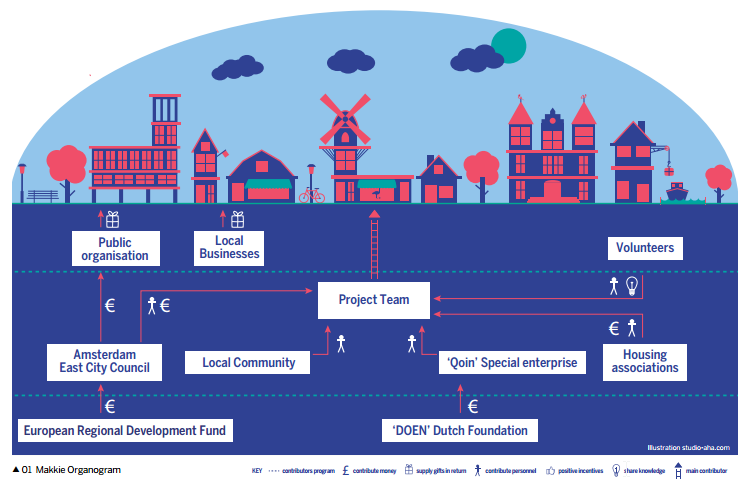
page-074
e-Portemonnee organogram
Diagram 02 shows how the municipalities of Limburg support the implementation of e-Portemonnee through integrating it into their systems.
A business could integrate the currency into core aspects of its running - not only through accepting the currency in exchange for providing goods and services, but, where possible, through paying some staff salaries or bonuses in it, as well as promoting the currency along its supply chain and using it to buy goods.
Such a business would be actively involved in the running of the currency and would have a say in its developments.
Less involved: Co-partner or sponsor a community currency
Co-Partnering
A co-partner would be an equal partner with one or more organisations committed to running the currency.
A stakeholder at this level may not have instigated the currency, but can provide ongoing technical expertise for the project, such as ICT or fundraising.
A co-partner could also provide administrative processes, develop or invest in training, or assist with performance evaluation.
All of these areas are key to changing organisational culture and encouraging frontline staff to embrace the initiative.
page-075
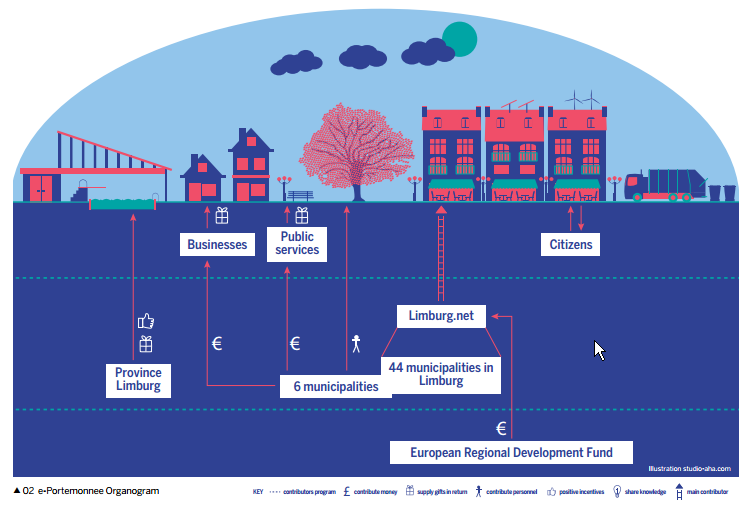
page-076
Spice Time Credits organogram
Diagram 03 shows how Spice partner with public institutions such as schools, local authorities and housing associations, as well as charitable organisations to provide opportunities for participants to earn time-credits.
Spice provides staff, training and support to allow partner organisations to set up their own time-credits systems.
Sponsoring
Sponsoring a group or organisation to operate a community currency is another way to be involved.
Sponsorship is typically financial and may be part of an international fund or local grant.
Stakeholders at this level may have a great deal of say over how the sponsorship is used and may regulate the currency, or may fund the currency to fulfil some of its local aims but otherwise remain at arm's length.
Alternatively, a stakeholder such as a local business could sponsor the currency in a non-monetary way, by providing facilities such as ICT, space or materials.
page-077
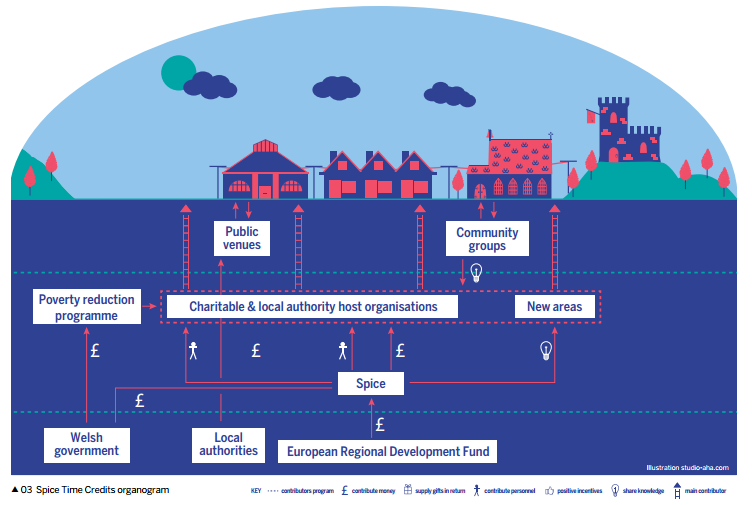
page-078
Indirectly involved: Participating in and championing a community currency
Participating
At this level, stakeholders are involved in using the community currency, without necessarily providing support or integrating it into their systems, but might issue the currency as reward or payment, or use it to buy supplies.
A stakeholder at this level might allow residents or other businesses to pay for services in the currency without necessarily re-spending it - converting it instead back to a mainstream currency.
Alternatively they might consider their involvement as a donation - providing excess capacity to the scheme as a conscious loss - for example by accepting time-credits for swimming sessions during quiet periods at a local pool.
Participation at this level provides important validation of a currency scheme, broadening the remit of spend options for users and instilling trust in the project.
The Bristol Pound and council tax
In March 2015, Bristol City Council became the first local authority in Britain to accept a community currency - in this case, the Bristol Pound - as a means to pay council tax.
As well as representing a landmark for the community currency movement, the council's announcement essentially guarantees that anyone holding Bristol Pounds will always have a spending opportunity - everyone needs to pay council tax.
Gaining this level of participation from a council helps hugely in building trust in a currency and establishing belief in its value.
page-079
Championing
Even if stakeholders do not want to directly participate, they can still offer support through championing the currency's use, lending support and validity to a currency without direct involvement.
At this level of participation, stakeholders don't expect to gain any particular outcome from engagement with the project.
For businesses, this might mean hanging posters or stickers on their premises to raise awareness about the scheme.
Public institutions could symbolically endorse the currency - as in the case of the Mayor of Bristol personally accepting his wages in Bristol Pounds, a move that garnered a lot of media attention.
The Makkie received a similar boost through a visit from the Dutch Prime Minister, Mark Rutte.
Political figures are often willing to associate themselves with projects they see as bringing benefits to the community.
While falling short of the greater levels of stakeholder participation outlined above, such championing can secure valuable coverage for community currencies and help develop trust in the projects.
Challenges of a multi-stakeholder project
As currency projects often rely on a large number of stakeholders, establishing shared goals from the outset and developing a picture of how different objectives might interact can be difficult.
A multi-stakeholder project requires ongoing consideration of each party's needs and proficiencies.
Some of the challenges that can arise include:
Perception of risk
A large potential stakeholder may feel there is too much risk to get involved.
For instance, a service supplier might show interest in a currency project's objectives, but not be comfortable with taking part due to its relatively unknown status.
Solution: Stakeholders could begin with a soft entry into the field, for example, through accepting a currency for procured services, with the potential to engage more in the future.
page-080
Slow decision-making
For example, the highly political environment and tight budgets associated with local authority engagement could stall the operations and decision-making process of a currency.
Elections may mean a new administration, often with different aspirations and agendas.
Solution: This could be rectified by having a long-term and ring-fenced team working on the currency, able to mobilise funds and take some decisions autonomously.
Differing ambitions
Different stakeholders may have distinct ambitions for the currency.
An SME might join a mutual-credit system to increase their turnover in the short-term, whereas those responsible for implementing the project would have a more long-term vision where the financial self-sufficiency of the currency model depends on members' continued trading.
Solution: A tight knitting-together of the skills and resources of the spectrum of stakeholders allows differing ambitions to be aligned collectively.
A co-production approach can build or operate a project or service with an equal and reciprocal relationship between providers and users.
Co-producing a currency
The co-production method can be used in the currency design process itself to overcome some of the issues cited above.
However, because needs, assets and objectives are unique to each individual and community, there is no definitive co-production blueprint.
Rather, certain guiding principles should be considered.
For example, within a currency project, co-production should involve:
(1) Developing people's existing capabilities: Identify strengths and assets they bring to the table.
Actively support people to utilise these at all stages of the currency project.
(2) Mutuality and reciprocity: Offer stakeholders a range of incentives that enable them to work in reciprocal relationships with professionals and with each other, with shared and managed expectations.
page-081
(3) Peer support networks: Engaging peer and personal networks alongside currency experts is the best way to transfer knowledge.
(4) Blurring distinctions: Reduce barriers between professionals and recipients, and between producers and consumers by recognising that people are indeed experts in their own habits and needs - and, as such, in how a currency could align with these.
(5) Facilitating rather than delivering: View the currency as a catalyst and facilitator of change rather than the central agent of change itself.
(6) Recognising people as assets: See people as equal partners in the design and delivery of the currency, rather than passive recipients and burdens on the project.
These principles require the committed involvement of individuals and communities at every stage.
A superficial application of coproduction will be counterproductive.
The potential rewards, however, are significant: people who are more engaged and involved in the currency project, a currency which is more responsive to its user's needs, and better and more cost-effective outcomes long-term.[13]
page-082
Currencies in action: E-Portmonnee
“Solar panels have always been popular here.
The municipality used to offer subsidies to encourage people to install them, but the policy became a victim of its own success and, after a while, was not sustainable.
So we started looking for other ways to incentivise environmentally friendly behaviour.
Talks were held with government environmental agencies and we consulted other municipalities to see if we could learn from their experiences.
After a year of planning we announced the e-Portemonnee.
page-083
The system encourages a range of actions: reducing water consumption, switching to green energy providers through which people earn points.
These can then be spent in a number of ways - on anything that makes it easier for people to act in a sustainable way.
e-Portemonnee is having a real effect on people's behaviour, rather than just a one-off or short-term impact.”
Leen Frensen, Sustainability Officer for Diepenbeek, Belgium.
page-085
PART-02 - INNOVATING MONEY - A HOW TO
page-087
We now discuss community currencies from a more pragmatic perspective.
Covering the ‘nuts and bolts’ of currency design and delivery, this section will likely be of greatest interest to existing or aspiring practitioners, although anyone wanting a more thorough understanding of currencies is encouraged to read on.
Along with detailed discussion of various community currency features, we cover the multiple challenges of taking a project from an idea to a reality, including the technical aspects of currency design and delivery, legal and compliance issues and developing an effective communications strategy.
page-088
Chapter-04 The Process of Designing a Currency
page-089
Like any other complex project, a community currency's design is crucial to its success.
This chapter discusses how to match a currency's design to its objectives, as well as the importance of integrating the needs and concerns of stakeholders into the design process itself.
Successful examples and inspiring stories from other currency projects can capture people's imagination, the media's attention and galvanise the energy and interest of many stakeholders for a new venture.
However, and as much as these might serve as learning points to reach certain objectives, every currency in the world is unique.
This is not only because they bear different names, try to distinguish themselves in their communication and marketing material or use distinct software solutions, but because each currency is designed to meet specific needs in a specific context.
This is true even if at first glance two currencies seem to be carbon copies in terms of their technical design elements.
People and the way they relate to each other, personally and economically, form the core of a community currency.
From the beginning, the design process will need to take into account that the people involved in each currency will be different in their personalities, ambitions, needs and capabilities.
These variations alone, multiplied by the many interactions that a successful currency project consists of, will ultimately lead to very distinct pathways, roll-out strategies and adaptations to whatever model might have served as the blueprint.
This lack of formula is not, however, a negative feature.
Community
page-090
currencies are all about providing adequate tools for people and organisations to realise their potential in ways that money as we know it cannot offer - therefore, their collective strength comes from their diversity.
As tempting as it is to draw up a simple linear guide to the stages of currency implementation, in reality no process is straightforward.
Nevertheless, despite the lack of a transferable blueprint, every social initiative, currency or otherwise, should follow a logical progression from inception to implementation.
Non-linear
In order to provide openness and flexibility to the design, the planning and execution of a currency project is an iterative and adaptive process.
A spiral, rather than a straight line leading from start to finish, more accurately describes this method of progression.
This does not mean going round in circles, but rather consciously seeking to revisit certain core elements regularly, knowing they might have to be amended when other elements change, whether due to deliberate decisions or external factors.
In today's transient, diverse and increasingly virtual communities, people and the roles they are able to play are very likely to change during a project's lifetime.
A currency will often start up with one set of people around it and be carried forward by a different group.
In most cases, this also determines the character and details of a project.
As the process reaches the phase of design-refinement and approaches the crucial practical steps of piloting and ‘learning from doing’, many ideas, concerns, questions and feedback that have been discarded previously might resurface or become relevant to the final design.
As such, it is always better to hear too many perspectives at early stages than too few.
The four core elements for any currency implementation process are:
1 participants - who?
2 their objectives - why?
3 functional design of the currency - what?
4 and finally, the organisational and practical necessities to making the currency a reality - how?
page-091
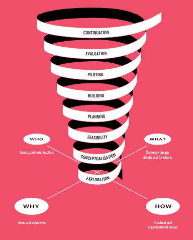
page-092
As a currency project proceeds through different stages of planning and implementation, these four core elements function like the cardinal points on a compass.
The project's pathway revisits these points as it ascends, bringing improvements in the currency's design and final implementation.
With each step forward, the overall project will have changed a little, with the four core elements mutually shaping, informing, enabling and limiting each other along the way.
Each of the four can, in their own way, claim primacy over the other, yet none can fully define the others without being effected in return.
This is why we visualise the currency design process as a spiral continuously moving through the four cardinal points as it moves up through eight different stages in its progress, from planning to piloting and finally full operation.
Phase A: Planning
The first step is a market analysis, researching the socioeconomic context and, if a currency is deemed feasible and useful, what the design of a basic, viable prototype might look like.
Depending on the project's complexity and partners' and stakeholders' commitment, this phase might take from six months to two years.
Crucial elements at this stage are to clearly set out the goals and targets of the initiative and deliberate on the appropriate choices regarding the technical and operational set-up of the project.
Stage 1: Exploration
Exploring the needs, dreams and possibilities in a real context involves:
• Analysing the environment - how would a currency fit into the market?
• Identifying potential partners and stakeholders
• Testing ideas in various forums for support
• Sketching the general idea, working out goals and target groups
• Setting up a steering group and implementation team
page-093
Stage 2: Conceptualisation
Development of the concept of the currency and selecting the appropriate design (see Chapter 5) requires:
• Developing partnerships
• Producing presentations of the possibilities and early ideas
• Holding a ‘theory of change’ workshop to find out what all stakeholders want the currency to achieve in a context of what is feasible [14]
• Planning the intended impact of the currency
Stage 3: Feasibility
Several of the elements described in the following sections need to be explored in depth, to ensure that a no-go scenario is not discovered at a later stage.
All potential scenarios, good and bad, of the fully functioning currency need to be considered early on.
Stage 4: Planning
All elements from the above stages need to be combined and the implementation needs to be planned in detail.
Once an OK from the steering committee is granted and all the necessary resources are provided at the end of the stage, the project will progress to its practical phase.
Phase B: Building - Piloting
Acknowledging that any project of the complexity of a currency will always require testing and improvements, this second phase is about the implementation of a pilot.
To allow for enough time for execution and testing of all scenarios, depending on the rate of uptake and intended scale, a further six months to two years should be allocated for this phase.
Here all project elements need to be fully developed, and the currency will actually be launched.
page-094
Stage 5: Building
All operational elements now need to be set up for functioning.
This includes the incorporation of an appropriate managing entity, signing of contracts and delivery against commitments.
This stage ends with the launch of the currency, whether in a protected beta environment or publicly, with sufficient provisions for potential changes stemming from the next stages.
Stage 6: Piloting
Finally, the currency is in circulation.
From here on, forward data-collection and monitoring of the chosen key performance indicator is crucial.
During piloting, experience and feedback from participants and partners needs to be collected on a regular basis to understand the currency's strengths, weaknesses and developments over time.
Phase C: Continuity options
Once the currency is running, the immediate and long-term future comes into focus.
The learning from the second phase needs to be considered and the course set for coming years.
Stage 7: Evaluation
Analyse the results of the pilot-stage monitoring.
How did the currency function in relation to the initial plans?
Can impacts for the users be demonstrated?
Are they sufficient to justify further investment?
Can concrete bottlenecks or areas for improvement be identified?
Here, all stakeholders need to be consulted, as this will determine the decisions of the next stage.
page-095
Stage 8: Continuation
For this stage, there are broadly four distinct options that depend on the findings in the evaluation stage:
Option 1 - Improve and innovate: Appropriate if the pilot shows that the currency has a lot of potential, but still identifies teething problems.
Potentially, a radical redesign in terms of audience and purpose might have to be considered.
Organisational or technological elements may also need to be adapted.
Option 2 - Scaling-up: A pilot phase usually takes place in a limited area.
After a successful pilot phase, scaling-up might be possible and desirable.
Existing processes are intensified and accelerated and, often, scaling-up means that the community currency will operate in a larger geographical area, or with larger groups of participants.
Option 3 - Stop: The community currency may appear to have insufficient support and does not reach its goals.
Even if positive, impact assessment results might not be enough to justify further investment or effort.
However, this option does not mean simply pulling the plug.
Terminating operations is as sensitive a process as any other and requires solid preparation and strategy so as not to incur costs and losses for users and tarnish the reputation or potential of other currency initiatives.
Option 4 - Replicate: This option usually occurs only at a later stage and might be determined by other external groups.
If the community currency has become sufficiently ‘mature’, it can be implemented with less effort elsewhere.
Some degree of adaptation and innovation will of course always be necessary as no two contexts are exactly the same.
This ensures great potential for direct and indirect learning for the initial currency project as well.
This chapter has presented certain guiding principles and advised a general mentality for currency design.
The most important point is that it is essential to remember that currencies are tools to achieve specific goals - it is easy to forget this and start treating them as ends in themselves.
An effective way to maintain focus on outcomes is to integrate the four ‘cardinal points’ (who, why, what and how) into every stage of the design process, revisiting them regularly as the project develops.
The following chapter describes some of the most common elements of currency design in more detail.
page-096
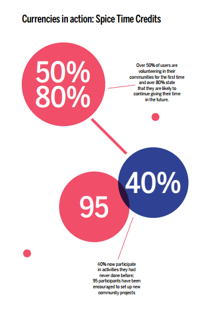
page-097
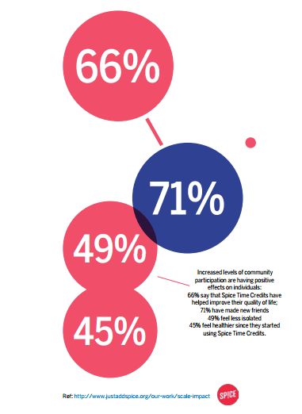
page-098
Chapter-05 What - Choosing the Key Features of a Community Currency
page-099
Having discussed design in general terms, we now turn to specific features that can be incorporated into a community currency system.
Each of them has certain benefits and potential drawbacks, so the choice of which to use will depend on which are most appropriate to the currency's objectives.
Function
Money is generally defined by the fact that it performs three functions.
It acts as:
• a store of value;
• a medium of exchange; and
• a unit of account.
A community currency, however, does not need to be bound by this definition and can even aim for different functions altogether.
Designing a currency involves looking at these functions individually and deciding whether or not, or to what degree, it should perform each of them.
Money as a unit of account represents a standard numerical unit of measurement and, as such, enables a uniform interpretation of value and cost.
Without a widely agreed upon unit of measurement,
page-100
money cannot be used to settle debts between different parties and effective price systems cannot be established - both of which are key elements of market economies.
In practice, only certain community currencies operate with their own unique unit of account, since it is hard to establish these in a voluntary environment with a large enough constituency of people.
This means that many currencies stick to the national unit of account, typically with a straightforward one-to-one valuation, and only change the name of the currency unit - pound sterling, for example, functions as the unit of account for the Bristol and Brixton Pounds, among others.
The units of account of various community currencies can be seen in table 1 on page 103.
Money's function as store of value means it can be kept for a long time without losing its purchasing power.
In practice, the extent to which this is true varies: the value of most types of money does fluctuate with time, typically diminishing as result of inflation or market demand.
Complementary currencies almost never facilitate this function - with some even deliberately designed to prevent common practices such as hoarding.
A popular tool for this is demurrage, which acts a sort of ‘negative interest’ rate that depreciates the value of the currency when it is not spent.
As a medium of exchange, money allows different parties to perform economic transactions beyond the limits of simple barter systems.
Unlike barter, money overcomes what economists call the ‘double coincidence of wants’, which requires both parties to offer a specific good or service that the other desires.
The medium of exchange function of money enables people to conduct efficient transactions and trade with each other without this ‘double coincidence’.[15]
The majority of community currencies seek to act as media of exchange for the users for which they are intended.
This tries to remedy the problem of money becoming more scarce in times of austerity or crisis - when the national money supply shrinks or when much of it accumulates in the hands of a few at the expense of the many - even though, in many communities, the capacities to produce and contribute on the one hand, and demand and needs on the other hand, remain the same.
As an alternative medium of exchange, a community currency can connect supply and demand when mainstream money is scarce.
page-101
Denomination & transaction medium
As noted, community currencies have many different design features.
One of the most basic of these is the ‘denomination’: the proper description of a currency amount, expressed through a range of different transaction media.
Denomination differs from unit of account in that it describes the quantities in which a currency can really be obtained - for example the currency's physical notes or coins.
Unit of account, on the other hand, refers to the standard numerical unit of measurement that enables uniform interpretation of value and cost, such as dollar, hour or ounces of gold.
This difference between the unit of account and denomination is best illustrated through practical examples.
The Brixton Pound uses pound sterling as the unit of account, but it is denominated in B£.
For the Makkie, the unit of account is time, and it is denominated in full and half hours.
Alongside any decisions made about the denomination and unit of account of a currency, the transaction media must be considered.
It is in the field of transaction media that community currencies are typically more innovative then conventional currencies - and have introduced systems such as the Brixton Pound's ‘pay-by-text’, before many users of mainstream money were even aware of the idea of mobile payments.
Typically, complementary currencies will use one or a combination of the following transaction media:
• paper notes
• coins
• tokens
• vouchers
• cheques
• ‘show’ cards (cards that must be presented at the point of sale)
• ‘swipe’ cards (card with a magnetic strip or chip carrying account information)
• ‘smart’ cards with various functionalities
• RFID (radio frequency identification) chips embedded in cards or other devices
• barcodes
• QR-codes
• SMS (short message service)
• Smart device apps
page-102
Bitcoin
Perhaps the most well-known complementary currency in use today, Bitcoin is a digital payment system.
The first allocation, or ‘mining’, and consecutive transfer of coins is independent of any central authority or regulation.
Bitcoins are transferred through a computer or smartphone without an intermediate financial institution.
As a currency it's simply a new medium through which to trade, operating under parameters such as the total number in circulation, the method by which new units are allocated and free-market pricing.
Bitcoin payment systems use a decentralised ledger, which operates through a peer-to-peer network, to cut out the middleman role usually performed by a bank.
This means the record of all transactions is not held centrally, but in a network of computers, which confirm the validity of new transactions using special encoding technology.
page-103
The table below gives examples of complementary currencies active in Europe and further afield, showing the range of media used to serve various functions.
| Table 1: Community currency denomination and transaction media |
| Currency |
Unit of account |
Denomination |
Medium |
| Brixton Pound |
£ sterling |
Brixton £ |
paper, website, app, SMS |
| Bitcoin |
Bitcoin |
bitcoin, satoshies |
electronic |
| e-Portemonnee |
managed at par with 0.01 |
points |
electronic, national ID as show card |
| Krugerrand |
ounces of gold |
Krugerrand |
coin |
| Loyalty card |
points |
miles, points etc. |
swipe card, websites, stamp cards |
| Makkie |
time |
hour, half hour |
paper, website |
| SoNantes |
euro |
SoNantes |
app, SMS, website, smart card |
| Spice Time Credits |
time |
time-credit |
paper and online registry |
| Terra |
managed price of commodities basket |
Terra |
electronic |
| TradeQoin |
euro |
TradeQoin |
website, app |
| Ven |
floating price of currency and
commodities basket |
Ven |
website, app |
Kruggerand
The Krugerrand is a South African 22-karat gold coin, available in denominations of half, quarter and a tenth of an ounce of gold.
First minted in 1967 to help market South African gold, the Krugerrand has since become the most popular choice for global investors wanting to purchase gold.
Unusually, the Krugerrand has the status of legal tender
page-104
in South Africa, meaning that its units can properly be referred to as ‘coins’, rather than ‘rounds’ - the technical term for similar, non-legaltender gold media produced elsewhere.
Loyalty cards
Loyalty cards - or, more generally, loyalty schemes - are marketing devices used by corporations to retain customers.
They typically work by rewarding purchases with points, which can be accumulated and redeemed as discounts when making future purchases.
While not typically thought of as currency, loyalty schemes covering everything from cups of coffee to intercontinental flights do in fact have all the typical characteristics of currency systems.
Currencies such as the Belgian e-Portemonnee pose the question that if these can be designed by corporations to meet profit-based objectives, why should they not also be designed by communities to achieve economic, social and environmental aims?
Issuance
There is no form of money that occurs naturally in any given society or community.
Natural objects - from seashells and large stones to gold - have been used as money, but only when a society determines that they should be accorded a special status.
The rules and processes by which these objects or units are turned into money are called issuance.
This is what the central bank does when it prints on pieces of paper and then distributes them as banknotes, or what commercial banks do when they add numbers to someone's bank account when they take out a loan: they issue money into the economy.
There is some confusion as to the exact meaning of issuance, particularly with currencies that are printed on paper, because there can often be a lag between the time that a note is printed (when it is distributed to the issuance points) and the time that it is put into circulation by giving it to a person or business to use.
To ensure clarity, three distinct properties of what is often referred to as issuance can be summarised as:
page-105
• the rules that govern issuance;
• the factors that will determine the quantity of money; and
• the mechanism whereby the money comes into circulation.
Within each category are a large variety of different methods and factors employed to manage and control the money supply.
The rules that govern issuance
The rules that govern how issuance will take place will be crucial to the proper functioning of the currency, and will in all cases be established by the organisation responsible for operating the currency.
This does not, however, mean that these rules are always centrally created and simply imposed on businesses and users.
Some currencies allow all members, for example in a co-operative set-up, to input into the design of the rules that govern the currency and its issuance.
Others, like the Brixton Pound, do consult users and businesses, but use the operating entity to set the issuance rules.
The quantity of money
The management of the quantity of new money created, as well as the total money supply, is another area that requires consideration during the design phase.
An example of a system that is carefully managed by the currency operator is the time-credits model pioneered by Spice in the UK.
Under this model, the local Spice entities decide on the maximum amount of time-credits that can be distributed for an event or opportunity.
This control over maximum issuance ensures that there are spending opportunities for all the time-credits issued, which is vital to the currency being perceived as valuable by its users.
The time-credits are then issued when a person participates in the designated activity.
This can be contrasted with the LETS and peer-to-peer timebanking systems, which both allow their users/members to issue units into circulation whenever their own balance is not sufficient to pay for activities or services rendered by other members.
SME businesses belonging to mutual-credit networks operate in a similar way, by allowing member businesses to create money in a fashion similar to overdraft facilities when they pay other members.
Under these systems, although there are rules governing maximum negative balances for a particular user or business, there are no central
page-106
rules governing the speed and point in time at which new money can be created or the total quantity of money that is circulating at a given moment.
It depends rather on when and how much participants deliver and pay for each other's services.
Putting money into circulation
The final point to consider in regards to issuance is the particular mechanism that will be used to actually put money into circulation.
In the mutual-credit example above, creation and putting into circulation coincide.
Other options available are listed in table 2 opposite.
It should be added that Bitcoin and other similar digital currencies are somewhat deceptive in their issuance, because there is no legal issuing entity.
Instead, the rules are established by a predetermined algorithm.
Although the total quantity of money as well as the issuance schedule is centrally regulated, the allocation of the next Bitcoins plays out in a decentralised fashion.
None of these features are necessarily set in stone, however, as the governance model for Bitcoin has established that if a simple majority of the user community wish to, they could override or amend (‘fork’) any of the system rules.
Such systems, therefore, have the potential to be fully decentralised.
Taking money out of circulation
To prevent inflation, alongside the issuance mechanism, the ways in which currency is taken out of circulation has to be determined.
Table 2 covers a range of different approaches to issuance taken by community currencies.
page-107
| Table 2: Issuance |
| Currency |
rule setting entity |
management of quantity of new money and total money supply |
Putting into circulation |
taking out of circulation |
| Brixton Pound |
Brixton Pound CIC |
Brixton Pound CIC and by users to the degree they want to purchase B£ |
When £ sterling is exchanged at designated change points or online |
Only businesses can exchange B£ back to £ sterling |
| TradeQoin |
TradeQoin, run as a cooperative |
Member businesses |
When businesses with insufficient balances pay another member |
The sum total of all TradeQoin user balances is 0 at any time |
| SoNantes |
Subsidiary of the Credit Municipal de Nantes |
Member businesses, Credit Municipal and users. |
For businesses SoNantes follows a mutual-credit mechanism Citizens obtain SoNantes by buying them for euros |
The total balance of all SoNantes account holders will always be 0. Units purchased by consumers can be changed back to euros |
| Makkie |
Consortium of 2 housing associations, Qoin and Amsterdam East council |
Consortium with redemption partners |
When a user performs a task for a partner organisation |
Redemption partners return spent notes to Makkie consortium |
| e-Portemonnee |
Limburg.net |
Limburg.net and local municipalities |
When they are claimed after a dedicated activity has been performed |
Units being spent with the municipalities |
| Spice Time Credits |
Spice |
Spice with local partner organizations |
Time-credits are created by Spice and distributed to the organisations offering volunteer opportunities to local people |
Redemption partners return spent time-credits to Spice |
page-108
Backing
The narrow definition of ‘backing’ means that those holding the backed currency have a legally enforceable claim against the operator of the currency for a specific quantity of another currency or commodity.
The usage of the term in community currencies often diverts from this (e.g. ‘backed by services’ in some Regiogeld or ‘backed by the community’ in some LETS), so it is more generally understood as the way of ensuring a minimal purchasing power (value) of a currency long-term by providing some sort of guarantee.
In this way, the backing can be material (e.g. gold, silver or collateral), a different currency (e.g. euro, GBP, USD), or immaterial (e.g. a promise, collective consent, enforceable contract, government bonds or taxes).
Whatever the specifics, the principle is the same: the currency is guaranteed to be exchangeable for a specific quantity of some other currency, commodity or service, and this guarantee gives it value in the eyes of the community of users.
Particularly when the backing comes in the form of a scarce resource, like national currencies or precious metals, the availability of that asset might limit the issuance of the currency.
In community currencies, backing typically serves as a way to infuse trust in a scheme that does not have the endorsement of the government.
The best known example of currency backing was the gold standard, whereby the governments of certain countries guaranteed a fixed exchange rate between a set amount of legal tender and gold bullion.
Community currencies that are backed by, and redeemable for other (conventional) currencies rather than a specific good like gold, are referred to as ‘purchased and redeemable vouchers’, of which Chiemgauer, Bristol Pound and Brixton Pound are examples.
Table 3 shows the backing methods of a range of different community currencies.
page-109
| Table 3: Backing methods |
| Currency |
Backing method |
| Brixton Pound |
£ sterling in a protected trust account |
| TradeQoin |
Member obligations to accept currency for goods and services and contracts with the operator determining the conditions of rebalancing their accounts when leaving the system |
| e-Portemonnee |
Guaranteed redemption options by local governments |
| Loyalty card |
Redeeming options with issuer, or with partner organisations |
| Makkie |
Redemption guarantees of participating organisations and businesses |
| SoNantes |
Like b2b barter but including public services like public transport, units purchased by citizens are backed by euros in trust |
| Spice Time Credits |
Redeeming options with issuer, or with partner organisations |
| Terra |
Stocks of commodities |
| Timebanks |
Agreement by members to provide service at time parity |
| WIR |
Collateral like second mortgages or Swiss franc assets |
Design specifics
Although there are many different design features that can be included in community currency systems, we will focus on three that have a long history and can have significant impacts on how the currency operates.
These features are demurrage or negative interest rates, bonus and malus conversion systems, as well as whether to require, allow or forbid the conversion of the currency into other currencies, mainly national legal tender.
page-110
Demurrage
Demurrage, in the complementary currency domain, is a built-in reduction over time of the nominal value of a currency.
This discourages hoarding and incentivises spending by essentially levying a tax on currency holders.
Ideally, demurrage should involve a charge of a simple negative interest, applied as regularly as practical.
While this is easily done on a daily basis with electronic currencies, for paper currencies longer intervals may be necessary.
In such cases, demurrage can be achieved by requiring the regular (monthly or quarterly) purchase of stamps that need to be put on the notes to maintain them valid at face value.
With the value of the currency otherwise going down over time, it is in holders' interest to spend as quickly as possible, or before the next stamp is due.
Not every form of money is equally suitable for demurrage.
Organising demurrage in electronic money is fairly easy, requiring only the application of simple bookkeeping techniques.
However, as well as the potential benefits outlined above, demurrage has some drawbacks, which should be considered when deciding whether to incorporate this feature into the currency design.
| Table 4: Pros and cons of demurrage |
| |
Pros |
Cons |
| Demurrage |
Creates a clear disincentive against hoarding
Emphasises currency's main function: medium of exchange
Nudges consumers to spend before having to pay fee
Enhances the velocity of circulation |
Many people do not fully understand the concept
Puts collective benefits over personal preference
Goes against the common assumption about money - ‘you gain money by keeping it’
Complicated in theory and practice, can keep businesses and individuals from joining |
page-111
Bonus/malus
Bonus and malus in action
Until 31 December 2013 the Brixton Pound had a bonus of 10% for those who exchanged their pounds sterling into the local currency, meaning that £100 of national currency would buy B£110.
Once in circulation the exchange rate between Brixton Pound and pound sterling remains at one-to-one: the bonus functioned as an encouragement to convert to and use the local currency.
It also had a malus of 10% for those businesses who exchanged their Brixton Pounds into pound sterling.
The malus functioned as a disincentive to convert and an incentive to find local suppliers to spend the Brixton Pounds with.
Within the community currency world, the term bonus refers to a premium paid to those who exchange legal tender for a community currency.
Typically, bonuses take the form of a gift, issued in the community currency, added on top of the amount exchanged.
Bonuses act as incentives to attract new users or to retain existing ones.
Malus is the opposite of bonus - typically a charge on the conversion back into legal tender - and is a straightforward way of financing the bonus system.
| Table 5: Pros and cons of a bonus and malus |
| |
Pros |
Cons |
| Bonus/Malus |
Bonuses can encourage users to sign up to the currency
Incentivises the purchase of more community currency
Incentivises businesses to find spending options for the currency they receive instead of changing back to national currency
Can generate income for the currency project or charitable causes |
Businesses are discouraged from joining by the cost of conversion
Adds a layer of complexity to understanding the operation
Bonus can make the currency look like a commercial scheme
Public sector partners might not be able to accept the malus and not participate in the currency |
page-112
Whether or not to make a community currency convertible into another currency, usually the national currency, is an essential question during the design phase.
The decision will have major ramifications for the whole system, from the issuance process to the detailed legal requirements that convertible currencies have to follow.
The spectrum on which currencies sit can be illustrated by looking at how Brixton, Bitcoin and the WIR handle conversion of their currencies.
At one end is the Brixton Pound, which states within the rules of the currency that all users and businesses may at any point convert any Brixton Pounds that they have in their possession at par for pound sterling.
At the other end is the WIR in Switzerland.
Under the terms and conditions of the currency, exchange for Swiss francs, or any other currency, is not permitted.
This is clearly stated in the agreement signed by all members and infringement can lead to exclusion from the WIR network.
However, despite the prohibition and potential consequences in place, numerous users convert WIR francs into Swiss francs over the counter or though third-party platforms, usually for considerably less than their nominal parity of value.
Bitcoin inhabits the middle ground, leaving convertibility purely up to market demand.
Many companies and trading platforms offer to convert legal tender into Bitcoin and vice versa.
Interestingly the fact that conversion is not specifically prohibited means that regulators treat it as convertible and are starting to regulate Bitcoin exchanges rather than the Bitcoin currency itself.
page-113
| Table 6: Pros and cons of convertibility and non-convertibility |
|
Pro |
Con |
| Convertible |
Guaranteed conversion can help businesses and users feel comfortable getting into the system
Allows businesses to participate even if their suppliers are not part of the network
Allowing conversion opens the possibility of generating revenue |
Requires the maintenance of funds to meet conversion liability
Requires compliance to financial system regulations
Reduces the incentive, especially for businesses, to find creative ways to spend the currency or to encourage others in their supply chain to join the currency network |
| Not convertible |
No legal tender reserves are required
Closed-loop, non-convertible currencies operate outside financial regulation |
Users and businesses can be more reticent to join such systems, especially if spending options are limited
Requires active management of the volume of money being created to ensure that it grows in line with spending volumes |
Security
A currency's physical and digital security is paramount to protecting its value, especially as the currency becomes more widely adopted and the likelihood of fraud, counterfeiting, and hacking increases.
This is common in national currencies, but is also an issue in some complementary and even some community currencies, particularly those that can be exchanged for national currency.
page-114
| Table 7: Anti-counterfeit measures |
| Countermeasures with physical currencies |
through accounting practices |
identity verification measures (for electronic transactions and membership) |
In digital transactions |
- Security papers
- Special printing techniques
- Registered serial numbers
- Watermarking
- Holograms |
- Publicly accessible trading histories
- Signatures or double signatures
- Authorisation by different parties
- Regular auditing |
- Authorisation requirements by phone or electronic validation
- Voice recognition, facial recognition, other biometrics
- In-app security questions
- PIN or passwords |
- Password-secured user accounts
- Chip and PIN technologies
- Encryption (PGP, public-private key)
- Third-party authentication |
Market
The economist Hyman Minsky espoused the maxim that ‘everyone can create (issue) money, the problem is getting it accepted’.
Where mainstream money can be thought of as IOUs issued on the most part by banks as the legal tender to settle debts and taxes - community currencies cannot rely on legal rules to enforce their use.
They are essentially voluntary in terms of participation and, therefore, need to encourage use by creating a viable and valued market.
A currency's value is mainly achieved by ensuring it is widely and reliably accepted.
It could thus be said that a complementary currency requires the creation of a complementary marketplace.
For this reason, the development of criteria governing whether to accept a particular business as a member of the currency network is particularly important.
Some currency operators view any business wanting to join and willing to submit to the currency's terms and conditions as a good thing and welcome them, be it a McDonald's, major supermarket or petrol station.
Others put lots of criteria on their membership, such as local ownership, provision
page-115
or sale of environmentally friendly products and services, or being a small business.
A more open membership can make it easier to grow the network of businesses in which the currency is accepted and to ensure a good variety of goods and services can be bought with the currency.
With a more restrictive membership policy, growing the network and ensuring variety become harder; however, the currency can gain from having a stronger identity, as well as potentially helping it to meet certain objectives, such as encouraging local shopping, incentivising ethical choices or favouring small businesses over large multinationals.
This chapter has covered some of the specifics of currency design in more detail.
Combining this technical understanding with the advice on the design process in the previous chapter should help to ensure that currency projects are appropriate to their objectives, incorporating the right features, involving the right people and striking the right balance between clarity of purpose and flexibility of design.
Rather than simply trying to replicate existing models that have been successful elsewhere, we hope that this will make it easier to focus on specific attributes of currency design and decide which are suitable and unsuitable for any particular context, community and goal.
Next, we turn to the wider issue, far from specific to currencies, of implementing a long-term and complex project.
page-116
Chapter-06 How - Implementing and Operating a Currency
page-117
The currency design itself is only one element of a much larger project.
This chapter covers crucial questions about how this operates in reality - what kind of structure and financial set-up the team could adopt and what external expertise might be needed.
Building on experiences of other currencies that have trodden these routes already, the chapter brings the key elements of an implementation plan alive.
Each individual currency is distinct.
However, establishing a community currency is a project much like any other, although its core organisational, managerial and design features make it extremely complex, with more variables, more stakeholders but less best-practices and experiences than many other fields - and hence a greater possibility of getting stuck.
It is in the detailed planning and execution of such a project that the most ambitious initiatives also face their most severe difficulties.
Often, the initial enthusiasm to do something radical and new obstructs hard-headed and careful project planning as well as the establishment of sufficient benchmarks and honest internal monitoring.
page-118
When deciding what kind of currency to create, there are concrete and often rather dull tasks that need to be kept in mind, as well as being budgeted.
While designing the currency concept and convincing others to collaborate is fun and exciting, this is where often the hardest and least rewarding tasks await.
This chapter covers the major components of this process:
• Organisational structure
• Finance
• Legal framework
• ICT applications
It is important to think about these tasks when building up a team and gathering expertise.
Because many of these topics are equally valid for almost any other serious initiative out there, many other publications provide assistance with, for example, project management tools and processes.
There are also expert organisations and consultants out there that can help with the overall process or specific expertise.
We will therefore cover such aspects very briefly.
Organisational structure and governance
A currency project's organisational structure should reflect the values that the currency represents.
Broadly speaking, this requires a governance structure that brings stakeholders together to participate in dialogue, decision-making, and the implementation of solutions to common problems or goals.
This might follow the principles of coproduction, ensuring that decisions are responsive to the broadest range of those who must bear the consequences.
Many of the currency case studies in this book illustrate the potential of projects to emerge from the bottom up.
They often rely substantially on volunteers, or part-time staff based on short-term grant funding.
However whether a currency emerges from a grassroots group in this way or is mandated through the routes of a local authority, developing sound organisational and governance structures is crucial for success and longevity - and to ensure that those giving their time are supported and recognised.
page-119
There are some key things to keep in mind when moving from an ideas stage and informal structure to a formal, incorporated organisational structure.
These include:
• Democratic decision-making: Multi-stakeholder processes should enhance democracy within an organisation by increasing opportunities for those most directly impacted by decisions, particularly those at the grassroots who are so often voiceless in these processes, to effectively participate.
• Flexibility: Innovative projects like community currencies require a flexible operation in which small adaptations can be made at short notice.
To make the currency a success, the set-up should allow currency professionals a certain degree of freedom, including a mandate to decide on activities and budget-allocation.
• Transparency and accountability: a multi-stakeholder process might involve consensus-based decision-making and operating in an open, transparent and accountable manner.
As two of the central pillars of good governance, transparency is a necessary precondition for accountability.
Without access to clear, accurate and up-to-date information, it is impossible to judge whether the standard promised by those ultimately in charge has been met.
• Proficiency: An organisation must stay operational throughout the process of design and implementation to assure stakeholders and potential end-users that the process has been well considered and planned.
• Scale and scope: Governance structures must suit the currency's scale of ambition.
Small-scale projects might succeed in the early stages of devising a currency with less consideration given to formal organisational structures; whereas proposals for large-scale systems will need to formalise their structure at an earlier stage to, for example, secure funding or comply with regulations.
Typical forms of incorporation used by community currency systems in Europe include associations, charities, Community Interest Companies (CIC), co-operatives, B-Corp and limited companies.
It is important to check which versions of these are available and to take advice from others in the field about the advantages of each.
page-120
Finance
Finance needs to be considered for two distinct phases: first, development and start-up activities; secondly, the need to sustain the network and systems put in place.
Although some currencies get started through the effective use of volunteers, sustainability usually requires funding.
This ensures that all or part of the time people dedicate to the project can be compensated, as well as meeting the required costs for currency development.
Funding can be drawn from users and stakeholders themselves, as well as institutions, foundations and local government.
To make the organisation of a community currency less vulnerable, dependency on one source of income is inadvisable.
Subsidies, sponsoring, grants and a business model in which the currency itself generates income (e.g. registration fee, membership fee, transaction fee, balance fee) reduce dependence on one major funding source such as a local authority or charitable trust.
Sharing the costs
In 2014, Spice invited the organisations that had implemented time-credit systems to share with them the costs of carrying out an independent impact assessment.
In return, these stakeholders received a well-researched report they can use to showcase their work, while Spice could afford to conduct a single, in-depth study, over a longer time period.
Business plan and budgeting
Before seeking funding, any currency will need a budget and business plan that establishes the costs that will be incurred in implementing, and then running, the currency.
Some of the most common cost items are listed below, broken down into start-up and ongoing costs.
Running costs are particularly important to bear in mind when devising a business plan, as the durability of the project could be determined to a great extent by how much resource is available for daily operations in the early stages of implementation.
Some costs are a matter of choice, such as the extent to which the project will draw on external expertise either in the establishment or running phases.
page-121
| Table 8: Costs to keep in mind |
| |
Getting Started |
Up and Running |
| Staff costs |
Wages or expenses of development and operations team |
| Office costs |
Office space and equipment costs: rent, overheads, telephones, computers, printing |
| Communications |
Hosting a website, designing and printing of publicity materials, producing and sending press releases, audio-visual equipment and software licences |
| Administration |
Opening bank accounts, establishing the legal structure, insurance. |
Recurring costs: renewal of insurance policies, bank charges, hosting of website. |
| Experts |
External expert costs such as ICT specialists, lawyers, currency design consultants. |
Training of team members and partners. |
| Equipment |
Purchase of one-off equipment for currency transactions such as payment terminals. |
Maintenance and development of payment infrastructure. |
| Production |
Design and production of notes, payment cards or other transaction media. |
Adaptation or proliferation of transaction media. |
| Publicity |
Engagement activities and launch event. |
Ongoing engagment, educational and promotional activities. |
page-123
Raising funds
Just like conventional money systems, community currencies' operational costs require sustained funding.
The running costs of mainstream money often go unnoticed as they are built into the financial system as a whole, with mechanisms such as bank service charges, subscription for accounts and penalty fees raising funds to maintain operations.
Financial sustainability requires bringing in sufficient revenue to sustain the necessary personnel and administrative operations.
Typically, currency systems need to cover at least a portion of their running costs in national currency, to establish a cash flow beyond the system's own currency.
These revenues are typically generated from any or a combination of four sources:
1 Public and private grants
2 Donations and gifts
3 Fees paid by business and individual users
4 Secondary revenue options like leakage or selling advertising
Although, especially in the initial stages of the project, it is important to devise ways to generate income from the top two sources - grants and donations - ultimately the third and fourth sources should raise enough revenue to meet the operational costs of the currency.
In practice, the financial sustainability of currency systems is often one of their biggest challenges.
The drive to reduce any possible disincentive to use a new currency means that fees to businesses and users are often minimised.
Indeed, the majority of community currency systems do not impose fixed costs on network members.
page-124
As systems mature, however, they need to start to raise more funds - be it purely in national currency, the complementary currency, or a mix of both.
Table 9 outlines revenue sources raised from currency users.
| Table 9: Pros and cons of financing mechanisms |
| Financing mechanism |
pro |
Con |
example |
| Membership fees |
Can be a source of regular income |
If too high can be a disincentive to join the currency |
RES applies membership fees for businesses, operating on a graduated scale of up to 500 euros per annum |
| Exchange fees from the community currency to national currency |
Raises money when converting out of the currency |
Can put off businesses from joining the currency |
Brixton Pound formerly applied a malus of 10% for businesses changing B£ back into pounds sterling. This feature was dropped in 2014 to avoid deterring businesses from taking part |
| Transaction fees (for electronic transactions) |
Raises regular money due to actual expenses occurring and matches the current transaction fees in the conventional money system |
Not attractive for the person having to pay the fee (customer or business) |
TradeQoin participants pay a transaction fee of 10% for purchases within the network. Part of the money generated from the fee is used to support a security fund to cover risks associated with potential bankruptcies |
| Advertising space (newsletters, website, app or note design) |
Cost-effective advertisement opportunities for member businesses aimed at customers seeking to spend |
Requires businesses to already have some degree of trust in currencies, whether through prior use or an inclusive and open design process |
Beki raised over 12,000 euros from advertisements on the currency’s paper notes |
| Demurrage |
Encourages spending of the currency while raising revenue |
Unless very large volume in circulation, revenue raised is limited
Not viewed positively by users and businesses |
The Chiemgauer in Germany requires holders of notes to purchase stamps on a quarterly basis. For the e-Chiemgauer, the fee is deducted from balances automatically |
| Merchandise |
Good way of raising awareness of the currency while raising revenue |
Like any other product for the market, risk is involved: if it doesn't sell, you lose money |
Brixton Pound sells branded merchandise as well as collector edition note sets |
| Leakage (units leaving circulation when acquired by visitors or collectors, or once a note has passed its use-by date) |
The backing of these units in national currency won't be redeemed and so can be released for other purposes |
Can be complex to administer and is only safe if it is known exactly how many units will never be redeemed |
Chiemgauer notes expire after two years. After they have expired, the value of the national currency put aside to back them is used as additional cash flow for the project |
page-125
RES
The Belgian RES aims to boost the local SME economy.
Primarily a closed-loop payment system, the RES can also be bought by individuals in exchange for euros, at a discount of 10%.
This model provides a complementary medium of exchange for both businessto-business and individual-to-business transactions.
As of 2012, more than 5,000 businesses and 100,000 consumers were using the RES system, with an equivalent of 35million-worth of transactions conducted through the currency in 2011 alone.
Beki
The Beki is a regional currency operating in the Redange canton of Luxembourg.
Valued one-to-one with the euro, the Beki is designed to stimulate the SME economy and transition towards environmental sustainability.
To use the currency, businesses and individuals must become members of ‘De Kar’ - the organisation managing the Beki.
Although redeemable for euros, Bekis exchanged back for the conventional currency incur a 5% charge, intended both to provide income for the operation of the currency and further incentivise spending in Bekis rather than euros.
page-126
Legal & compliance
Community currencies need to comply with all the applicable laws in the country where they operate.
A number of areas need to be considered, depending on the specifics of currency design and implementation.
Space does not allow us to delve into the legal intricacies for every country and every type of currency system.
As such, this section provides an overview of the most important areas to consider when starting a currency.[16]
These include taxation, social security, financial regulation, data protection, insurance and potential issues around public bodies' acceptance of complementary currencies.
Taxation
Tax authorities and regulators may consider community currencies to be a means by which individuals and companies can escape the tax implications of their transactions.
It is therefore vital that any project seeks to mitigate these concerns by addressing the impact on any sales taxes, corporation tax and income tax obligations of the individuals and companies using the scheme.
It is advisable to conduct research into the tax implications of any community currency, within its relevant jurisdiction, to ensure that currency users comply with the law.
Currencies with a predominantly social focus (e.g. timebanking, LETS etc.), due to their relatively limited scale in terms of individual balances, earnings and spending opportunities, in general have a low risk of tax avoidance by users.
In closed-loop payment systems and legal tender-backed currencies, however, the potential risks are higher due to larger money flows, more members and procedural complexities.
For these types of currency, measures need to be implemented to ensure businesses and users are fully aware of their obligations under the law, in terms of how transactions carried out in the system should be reported to tax authorities.
In addition, the operating entity must understand the tax implications of their own activities and how to manage them.
In general, VAT should be applied to all transactions carried out in a community currency where (1) the activity occurred within the normal course of business activities and (2) the currency is convertible, either through a fixed exchange rate or a peg to national
page-127
currency.
This would not, therefore, include transactions conducted between individuals, as opposed to businesses, nor does it apply to transactions carried out in non-convertible unpegged currencies - both of which are therefore potentially exempt from the need to apply VAT.
In all cases where VAT is applicable, it must be paid in the legal tender of the country where the currency operates.
The general position with regard to corporation tax is that all activity in a convertible currency or a non-convertible pegged currency should be included in the figures reported in a corporation's tax declaration.
The position with regard to non-convertible unpegged currencies is more nuanced and requires further analysis.
The impact of personal income tax is very variable, depending on the system and the country.
In most countries non-professional earnings are tax free and professional services are taxed no matter what was accepted in payment (national currency, community currency or in kind).
However, in the Netherlands, for example, the adoption of LETS-type community currencies was helped by an explicit ruling that set the threshold for enquiring into the nature of a service being professional or non-professional at an annual equivalent of 3,000.
Social security and employment
One of the main target groups for social currencies is those not actively engaged in the economy; as well as vulnerable people, such as those with disabilities, unemployed people and people in deprived communities generally.
Many of the people that could participate in a social currency scheme receive government welfare or unemployment benefits.
It is, therefore, important that a dialogue is started and rulings are obtained from relevant national and local authorities on the potential impact of participation in social currency programmes.
In some cases, such as for timebanks in the UK, tax authorities have issued official statements confirming that a certain level of participation in such systems will not impact benefit payments.
In most cases, however, there are no official rulings.
As such, working closely with local organisations with the required knowledge is crucial.
There is also a growing trend, especially with legal tender-backed currencies, to pay individuals in the currency.
It is, therefore, vitally important to consider how this impacts on employment contracts.
page-128
Financial regulations
Any organisation printing physical ‘money’, often legally classed as vouchers, issuing electronic monetary units that are convertible into legal tender, or involved in the provision of payment services will need to review how the relevant financial services regulations apply to their currencies and which enforcement bodies (central banks, national and international financial regulators) need to be engaged for compliance or exemptions.
All countries have very strict laws restricting who can print money, and currency operators must ensure that they do not contravene these rules.
In Germany, for instance, an old law is still in force that completely bans the printing of anything resembling money.
Most other countries permit this, as long as steps are taken to clarify to users that these are not equivalent to legal tender notes.
This can be achieved by calling the notes ‘vouchers’, adding an expiry date or giving the currency a name and look very different from the national currency.
The Payment Services Directive and the E-money Directive are two relevant pieces of European legislation, although their application varies widely throughout the EU.
Some authorities, such as in France, have sought to clarify how community currency operators can comply with the law, while others have provided little guidance and are waiting for cases to emerge.
In general, however, these regulations do not apply to non-convertible currencies.
France has carved out further exemptions by stating that any paper-based currency is outside of the scope of the Payment Services Directive, provided that no change is given for purchases and that only businesses are allowed to convert out of the currency.
It is unclear whether any other European countries will follow this reasoning.
The E-money Directive is especially relevant to electronic community currencies.
But again, interpretation and application differ widely.
In France, for instance, the regulator does not consider complementary currencies to be within the directive's scope, since it was established with the intention of regulating prepaid payment cards, where money is stored on the card.
However, most other countries consider electronic convertible currencies within the directive's scope and require the currency operator to obtain a licence.
As an alternative to currency operators obtaining a licence themselves, they may partner with an organisation that already has the required authorisation to run the currency.
For instance, the
page-129
Bristol Pound collaborates with the local Credit Union, which already has the required E-money license.
Although complex pieces of legislation, both directives have an exemption for systems that can show they operate only in a ‘limited network’ both in terms of geography and variety of goods and services.
Different countries have different interpretations of this exemption and its application varies between the UK, France and Belgium, where it has been tested so far.
Insurance
Insurance is relevant in two key areas: first, insurance relating to the currency's impact on users and volunteers engaging in work on behalf of the currency operator; secondly, how the governance board will be indemnified against major risks.
In some municipalities, citizens engaging in volunteer work are covered by a municipal (accident/disability) insurance policy.
There are, however, many municipalities where this not the case.
Companies, charities, foundations and other entities (either profit or non-profit) seeking to introduce a currency scheme will need to consider the issue of potential liability of governance board members in the case of default, bankruptcy or other eventualities.
For insurance companies, the risks involved in running a community currency scheme may not be straightforward to assess, which means complex negotiation may be required to agree upon the appropriate, cost-effective insurance policy.
Data protection
Data protection is important for most network services.
Currency operators are responsible for formulating and implementing privacy policies to protect sensitive user data.
The required safeguards for the protection of individuals are embedded in several legal texts.
Public sector acceptance of community currencies
Acceptance in lieu of legal tender, particularly by public entities, is a goal of many community currencies.
Municipalities' acceptance of these currencies for both services (swimming pools, public transport) and taxes (business rates, local taxes) gives these currencies greater use, value and credibility.
However, especially in
page-130
the Eurozone, those trying to establish such spending possibilities in different countries have encountered barriers of different kinds, sometimes of a personal nature (risk averseness) and sometimes allegedly due to regional procedure regulations, state law or even EU law.
It is advisable to check and clarify this with the relevant local institutions on a case-by-case basis.
ICT
Recent diversification of communication technologies, alongside the growing use of internet-connected portable devices, has begun to revolutionise the world of payments and finance.
Though this seems like a step into a new future, most money in the world has already existed in electronic form for decades, with physical cash constituting only 3% of money in the UK and the remaining 97% being merely digital numbers that represent bank credit.[17]
In the world of community currencies, this digital revolution has already been embraced, with the use of physical notes increasingly rare for many systems.
Computers have already been employed for some time to keep a central record of all transactions, including in small-scale currency projects, providing, in essence, an electronic registry and clearing system.
In a second wave of currency projects, websites have become an efficient central communication channel for community currencies, informing existing and new members about the projects, events and notifications.
Increasingly, currency websites include features like online blackboards that act as virtual marketplaces for products and services.
User friendly web platform
QoinWare is an IT platform developed by Qoin as part of the CCIA project.
Building on existing Cyclos software, the platform adds further functionalities and user-friendly design features and incorporates bank-grade security.
Qoinware and its earlier versions are used by a number of community currencies for electronic transactions, including TradeQoin, SoNantes, the Makkie and the Brixton and Bristol Pounds.
page-131
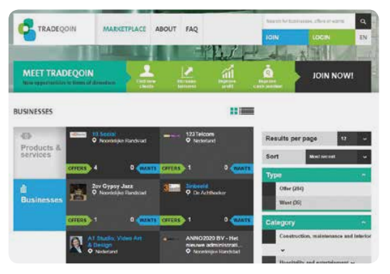
Analogous to the development of the Web 2.0 - that is, websites using technology beyond static pages and allowing user interactions - community currency web applications today allow more and more payments to happen digitally, without admins and accountants required to record transactions.
Online social networks, smartphones, near-field communications (NFC) chips, SMS gateways and, last but not least, cryptographic technology such as that used by Bitcoin are examples of digital developments that offer a wider range of possibilities to enhance the payment and social-facilitation functions of community currency projects.
ICT in action
Applications should contribute to the ease of use, efficiency and effectiveness of community currencies.
Often, they are cheaper than non-digital solutions (such as printed notes or even coins) and can offer solutions for:
• Membership management: registering members, storing member information, analysing statistics on user composition.
• Providing a marketplace: connecting supply and demand,
page-132
recording transactions, making payments, tracking account activity.
• Impact assessment: monitoring and reporting of activity, extracting data from the payment function, surveying users on their experience and other data collection.
• Financial management: budgeting, forecasting, auditing.
• Communications: hosting a website and social media platforms to communicate with participants, using members' databases for newsletters.
ICT checklist
There are several specialist software platforms for community currencies available today, some simple, others with more sophisticated features.
Use the following checklist when deciding what technological features are appropriate:
• Accessibility: can all users access it? For example, is it limited to smartphone owners, or can it be used across a range of devices? Consider how to tailor platforms to the needs and capabilities of users with disabilities.
• Appeal: is the user interface well designed and does it appeal to users?
• Compatibility: is it easy to connect to other elements of an ICT system, for example social media platforms or point of sale (POS) systems? Is it compatible with and does it support non-digital features of the currency operation, such as stakeholder earn-andspend log books?
• Compliance: does it comply with laws and regulations?
• Cross-platform options: does it run on different operating systems on different devices (PC, tablet, mobile phone) and with different browsers?
• Flexibility: is it flexible enough to adapt to alterations made to the currency model?
• Functionality: does it offer all the options needed for the user?
• Management: can it be easily managed and does it have sufficient administrator functions?
page-133
• Scalability: does it allow a lot of users to transact at one time?
• Security: is it susceptible to abuse, malware or hacker attacks?
• Stability: is it reliable and error-free?
• User friendliness: is it simple, fast and efficient to use?
Depending on the kind of project (a small social program versus a large program linked to a national currency), the systems need to be less or more secure, which can add extra cost and processes for participants and operators.
It is not necessary to own the ICT infrastructure for the payment platform.
This can drive up the cost, particularly if a lot of customisation is necessary, and is not always very efficient.
Some common and open-source content management systems now include transaction modules that can be set up for community currencies (e.g. the Drupal CMS) or are offered as hosted packages (e.g. by Community Forge in Switzerland).
Even simpler is creating a user group on an existing platform (CES or communities.cyclos.org).
These different options can be combined for a staged approach from quick and simple piloting towards implementation and adaptation at scale, building the systems up as the project grows.
CES
Community Exchange System, often referred to as CES, is a global, digital complementary trading network.
More specifically, it is a community-based exchange system that provides an accounting system for its users to exchange their goods and services, both locally and remotely.
Launched in South Africa in 2003, it can be thought of as a version of Local Exchange Trading Schemes (LETS) or mutual-credit systems, with some of the CES community currencies operating as timebanks.
Despite exciting developments in how ICT can today support currency operations, too narrow a focus on this during the early stages of project development can cloud the fact that successful initiatives depend on much more than the operating platform.
Though a functional and bespoke ICT system is an often necessary component of currency operation, it is not sufficient alone for success.[18]
page-134
Currencies in action: Brixton Pound
“It saves me a trip to the bank.
Sometimes I’ll go shopping, and then remember I don't have any cash on me, but then I realise, I’ve got my Brixton Pounds.
I regularly shop at Faiz grocery shop and would normally buy yam, banana, plantains, and other Caribbean products.
As a regular customer you get to know the market traders, and I can pay by text without having to wait for change.
People are always so curious when I pay by text.
What service is that, they ask, and I explain
page-135
how it works and show them the Brixton Pound sign in the shop window.”
Alicia, a Senior HR officer at Lambeth Council, London describes the added convenience the Brixton Pound provides, prompting her to request part of her salary in the currency to spend at local shops.
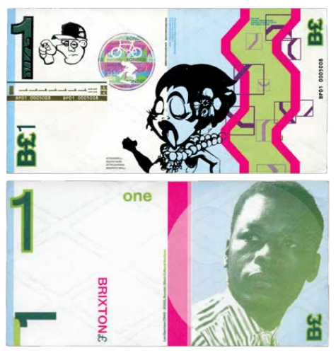
page-136
Chapter-07 The Importance of Good Communications
page-137
Like any other project, a community currency requires a professional communications strategy to succeed.
Here, we cover the main points such a strategy will need to consider.
A key part of communicating a currency's message is education - it is important to take on the challenge of translating the basic ideas of how the currency will operate to potential users as early as possible.
Desired users may well have never heard of community currencies, or may have different understandings of what it is they do.
To get them on board, therefore, it is important to successfully demonstrate why the currency is worth using - and this is no small task.
Target audiences
When designing effective communications, the first thing to think about is the intended audience.
There are several groups to consider when planning how to start publicising the project - for example, potential partners, local decision-makers and eventually journalists.
But currency users themselves should be at the forefront of the communications strategy.
Primary audience
Users of the currency: This includes the individuals, businesses, public services and any other stakeholders that will circulate and transact in the currency.
As these are the people and groups who will determine the success or failure of the project, this audience should be considered at the forefront of all communications planning.
page-138
Secondary audiences
Local influencers: Local figures can act as champions of a currency.
Communicating well to them can provide exposure for the project, as well as legitimating the currency through its association with these trusted voices.
Policymakers & local government: Align messages with local constituents' hopes and ambitions and the policy goals of councillors that represent them.
In the long term, support from policymakers in local government could be crucial to overcoming regulatory hurdles to the scaling up of a currency.
The wider public: People living outside of the reach of the currency might nevertheless engage with and disseminate stories of its development.
It is important that this group is considered after the direct currency users; if the currency users are engaged and well informed, spreading a positive message to wider audiences will be easier.
In this regard, traditional media channels such as broadcast media, radio and national newspapers are indispensable, but it is important to remember that over-exposure in the media can produce unrealistic expectations that in the long run alienate potential users.
The level of media coverage should be proportional to the reach, capacity and aims of the project - local publications, online blogs and industry magazines are all good places to start.
Academics, community currency experts and practitioners: Academics and those already working in the community currency field can bolster the research ground of the project, providing evidence and legitimacy for its potential impact.
Maintaining a presence in these circles is useful for gaining insights and advice.
It is not usually necessary to actively contact this group - once the project gets going they will, no doubt, be aware of its developments.
Key messages
As a starting point, it is helpful to develop a clear message about currency initiatives in general, that embodies the project's values and can be conveyed to a broad range of audiences.
For example:
“Community currencies are an exciting tool that empower citizens”
The next stage is to develop tailored messages, specific to the model and aims of the new currency, and to align these with the interests of the
page-139
target audiences.
Different aspects of the project will interest and appeal to each of the key audiences.
Think up concrete examples that can accompany the message such as in the following table.
“Having worked with the e-Portemonnee, my first piece of advice to future practitioners would be to develop an effective communications strategy.
Just getting online and waiting for people to find you is not enough - you have to be proactive.
This can be a slow process, but your communications strategy should aim to create a dynamic environment that ‘converts’ more and more people to your cause.”
Leen Frensen, Sustainability Officer, Diepenbeek, Belgium.
page-140
| Table 10: Tailoring messages to different audiences |
| For individual users |
For businesses and traders |
For policymakers and other influencers |
For media commentators |
| Community currencies ... |
offer a practical way to do something positive for your community
improve community cohesion and can help preserve the cultural identity of an area |
help you appeal to new customers
offer interest-free lines of credit
offer new resources such as IT facilities that are often cheaper and easier to use than regular accounting or e-payment technology |
help people engage directly with the delivery of public services to improve quality
represent a proactive step in improving cohesion between businesses, service providers and citizens |
are an exciting new technology that can challenge traditional ways of thinking about money are
a bottom-up solution for society's frustration with international banks and finance |
| Make it tangible with an example
|
| Users say that pay-by-text allows them to get to know the local traders on a first-name basis |
Small businesses can accept electronic payments from customers where previously they were only able to accept cash |
Students from the local college can earn credits by helping elderly neighbours learn computer skills |
Tired of rebuffs from the banks, a business network creates its own type of money |
page-141
Get the message out
Developing a clear message and a timeline for milestones will make it possible to use a range of often free or low-cost tools, both online and offline, to communicate effectively.
Materials and visuals
Logo
A well-designed logo will prompt stakeholders and currency users to take ownership of the project and proudly promote it.
The more meaningful the name or logo to the currency and the end-users, the more it will be remembered.
Transaction medium
The designs of a physical note, coin, swipe card or mobile app serve as powerful tools for what is often people's first encounter with a community currency.
Physical notes, coins and swipe cards are handy for press photo opportunities and giveaways and a good-looking digital interface ensures that the website gets shared online.
Investing in the design and material of physical transaction media - if issuing the currency in this way - is important in giving the currency the aura of ‘moneyness’.
Cheaply printed or poorly designed notes and coins are less likely to be taken seriously by users, whose belief in the currency is central to its success.
Print communications
Fliers, brochures and posters should be designed to appeal to all stakeholders, from local residents, to currency partners, SMEs and policy makers.
Print communications should not overload people with information, but instead spark an interest that leads readers to the website or an event to find out more.
Ensure digital versions are available for online dissemination.
page-142
Infographics
Graphic visual representations of information, data or knowledge are great for communicating how a currency system works to its potential users.
The following graphic from the SoNantes currency is a great example of how the circulation route of a currency can be depicted in a clear and simple way.
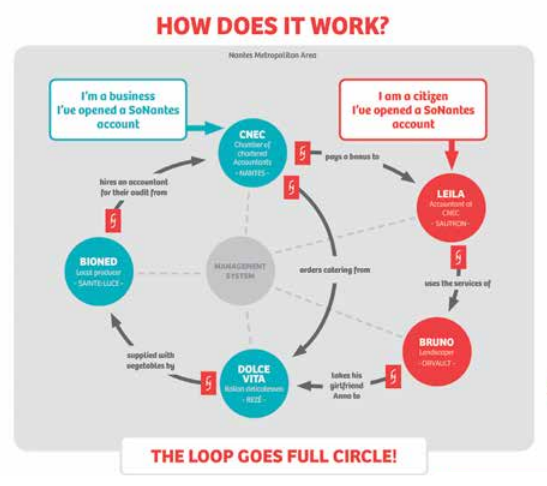
Online
Website
As a principal way people learn about a currency project, the website should appeal to all audiences.
It should be easy to use, a place where questions about the project can be answered, supporters can sign up for newsletters and digital currency users can access their accounts.
For currencies incorporating this latter feature, it is
page-143
best to have visually distinguished areas of the site for user accounts and general information.
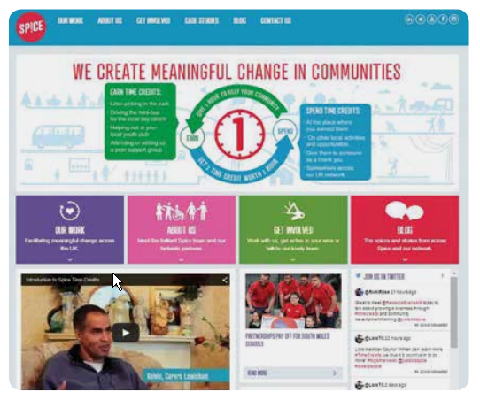
Social media
Communicating via social media is an inexpensive way to reach potentially huge audiences.
It is important to identify the best social media platform for each message - for example, Facebook works well with images and videos and Twitter is good for striking up conversations.
Take a tone that reflects the currency's values and remember to be human - people are more likely to engage if posts are not just promotional but offer honest, interesting and shareable content.
Videos and podcasts
Video interviews, podcasts and animations are effective in explaining the processes and mechanisms of a currency.
They provide good content for the website and boost social media sharing among followers.
page-144
Canvassing, meetings and events
Digital communications media, such as those listed above, are highly effective in reaching young audiences and partners in the business, third-sector or governmental worlds.
However, if aiming at social inclusion, the currency's audience is likely to include many with low incomes and other excluded groups, such as elderly people or recent migrant communities.
For different reasons (income, skills, language), these demographics are likely to be less capable of accessing online resources.
As such, faceto-face contact through workshops and printed material in appropriate style and language are key to successful communications strategies.
CCIA partner Spice, for example, distributes fliers and brochures in Welsh as well as English, so as to engage older time-credit users whose first language is the former.
Face-to-face meetings are therefore crucial to communicating about a currency project.
They foster trust and build strong relationships with stakeholders and users.
Many people won't have heard about community currencies and may perceive them as a complicated topic.
Conferences and workshops provide good publicity and a chance to educate and engage people actively in the values and aims of the project.
Capture feedback and contact details where possible - so it is possible to stay in touch with interested participants, perhaps sending a summary of how the event went and details of future actions planned.
page-145
Press and public affairs
Press coverage
Local newspapers and neighbourhood circulars are good routes for alerting potential users to a project.
Send out press releases in advance of all milestones and events to proactively attract media coverage.
Be careful not to attract too much media attention too soon; overexposure of the currency while still in the early stages can give a false impression of its scope, generating unreasonable expectations and leading to disillusionment when these are not met.
High-profile supporters
Influence policy and gain publicity by engaging with politicians who have values and party goals in line with the project.
Local councillors have a vested interest in the potential community benefits of currency projects and their attendance will raise the profile of events and provide photo opportunities.
It is not usually necessary to focus resources on winning support from politicians: once a currency gains backing from its community, politicians will be keen to engage as well.
Attracting spokespeople
Identifying supporters, building a steering group and managing relationships are all key steps towards creating the operational community of a currency.
Draw up a database of potential project partners and supporters of all levels of engagement, categorised by what role they could play - e.g. spokespeople, businesses accepting the currency for its services, councillors with a network of local contacts.
Initial approaches to interested parties should take the form of a conversation, showing where there is room for ideas to be incorporated.
Currencies depend on the engagement of stakeholders and for this they must feel like they are listened to.
A transparent approach is key to reminding potential partners that this is a project with a set of values that they can align themselves with.
page-146
Maintaining a network
As well as raising awareness, communications strategies need to consider how to build and maintain a network.
This network will include volunteers, users, sponsors and other supporters.
Because community currencies are founded on these people, it is crucial to keep this network up-to-date with developments.
Newsletters, regular blog updates, internal planning meetings and external canvassing events can facilitate such ongoing communication.
Some ways to do this are:
• Linking up with local projects and businesses that participate in the currency to celebrate each other's milestones with online content or events.
• Celebrating success - keep up the morale of volunteer support workers by giving regular thanks and recognition for their services in bringing the currency to life.
• Speaking to users - testimonials from currency users provide great educational and marketing material.
Capture these as blog entries to keep website content fresh.
Maintaining this level of activity requires substantial effort and resources and needs to be carefully considered in project planning and budgeting.
Integrating a communications strategy into the project implementation and management plan ensures sufficient resources for effective communications at all stages of the project.
Communications are key to any project's success.
However, it is not simply a case of generating as much coverage as possible, but rather of managing exposure to suit the project's needs, capacity and objectives.
As such, communications must be tailored, focused and controlled - more is not always better.
Any strategy, like all other aspects of a currency project, will benefit from rigorous evaluation.
It is to this subject that the next and final chapter turns.
page-148
Chapter-08 Evaluation - Defining and Measuring Impact
page-149
Measuring the impact of community currencies is challenging but essential to the further evolution and refinement of both individual projects and the field as a whole.
This chapter provides advice and guiding principles that may be helpful when evaluating a currency's effectiveness.
For the currency design field as a whole, it is crucial to map the impact of the schemes currently in operation.
For geographically and sectorally dispersed projects to learn from one another and professionalise the field, evidence of impact must be measured and shared.
As each currency model evolves to better meet its objectives, new currencies emerge with hybrid models answering to new objectives.
Because of this continuous process of development, getting a snapshot of successes and shortcomings is a big task.
Up to now, there has been a deficit of impact results coming from currency projects, resulting in certain landmark examples being regularly drawn upon as a proof of concept for others.
This, however, is starting to change.
With more interest and funding now coming from the public sector, currency projects are stepping up to the impact-assessment challenge.
page-150
Getting started
Evaluation is a crucial component of the design, implementation and running of any currency project that claims to have meaningful impact.
Demonstrating success in achieving the project's aims is critical for securing funding and other types of support.
Currency initiatives often emerge from grand ambitions such as ‘changing how money works’ or ‘strengthening the local economy’.
Without translating these aspirations into clear short-term outcomes that can be measured, projects struggle to get an evaluation process off the ground.
Ideally, evaluation should be integrated into the project from the outset; having a clear understanding of what the aims are helps to clarify the strategy to achieve them.
There is, however, no one way to evaluate a currency scheme.
The choice between in-house evaluation, commissioning external expertise, or partnering with a university depends both on the resources available and the purpose of the evaluation.
A good starting point is to develop a theory of change (TOC), working backwards from the desired outcomes to understand how these can best be measured.
TOC is a methodology for bringing about social change that starts from the desired outcomes, identifying all the stakeholders, processes, resources, and indicators to monitor and evaluate the progress towards the targeted outcomes.
For a stepby-step guide for hosting a TOC workshop for a community currency project, see the guide No Small Change (in further reading).
page-151
What to measure
Good impact evaluations measure what is important, not just what is easiest to count.
This is likely to include a mix of social, economic and environmental outcomes and should ideally reflect what the currency users value.
Once decided, desired outcomes can be broken down into clear and measurable indicators.
For example, if the outcome is ‘reducing social isolation in the local area’, the number of people newly taking part in regular social activities since being involved with the currency might be a good indicator.
When mapping out a TOC, it is useful to organise these outcomes and indicators into short-, medium- and long-term goals, as seen in the flow diagram below produced for Spice Time-credit systems in South Wales.
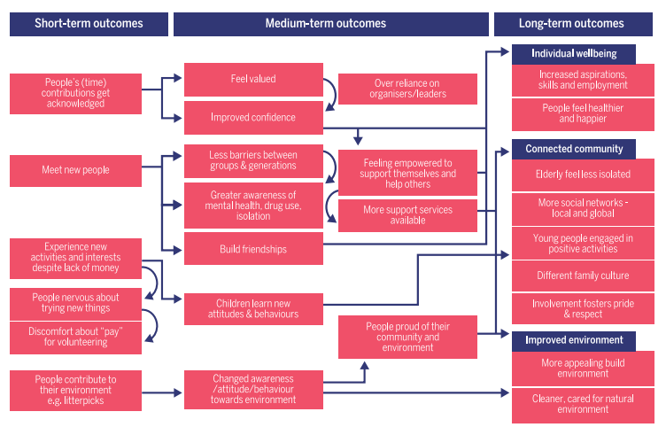
When to measure
It is advisable to gather baseline data before a project starts, or before a new participant joins the scheme with, for example, a brief new-user survey.
This allows change to be captured at regular intervals and attributed more confidently to the currency project, rather than other developments in the locality or community.
page-152
A TOC can be used at almost any stage of development, from an initial idea to a long-established currency project - differing slightly depending on the project stage:
• Looking backwards to evaluate: Many people use a TOC as the basis of their evaluation strategy.
For established projects, relatively more time may be spent trying to pull out indicators to measure progress towards the desired outcomes.
• Looking forward to plan: A TOC is useful for projects in the planning phase.
Many groups may intend to start a project, but still have to decide what sort of currency they want to create.
In this case, the focus may be more on understanding what the stakeholders want to achieve and the resources available to implement the project.
This then determines the next steps to take.
Who to involve
Ensure that participants involved in evaluations are representative of the end-users of the project, rather than cherry-picking the best examples.
If possible, compare evaluation outcomes from currency participants against a control group who have not taken part in the project.
A good way to develop a TOC is to bring key stakeholders together in a workshop.
This facilitates discussion and debate as to what the shared goals of the project are and how they can be achieved.
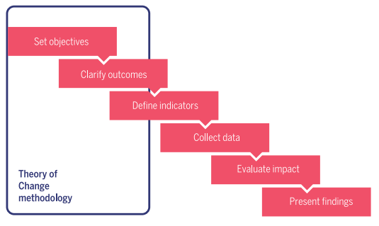
page-153
How to measure
There will be opportunities to collect data when the currency is up and running, such as through participants' online accounts.
Data collection tools such as surveys, focus groups and project monitoring can also be used.
Choosing the right indicators
Once desired outcomes have been agreed, these can be broken down into measurable indicators.
It is important to think carefully about what the right indicators are, as these are likely to be different in the short- and long-term.
There may be a trade-off between things that are easier to measure and factors that most accurately reflect the project's goals: counting how many people use the currency scheme, for example, is much easier than determining whether this has had a positive impact on their lives.
Collecting data
Collecting both output and outcomes data is advisable.
In the short-term, outputs can be valid indicators to inform some outcome measures.
For example, the number of currency users and the quantity of transactions may be important in enabling the currency to achieve its objectives.
There are several useful methods for collecting data:
User surveys
These indicate whether a currency meets user expectations, what people experience through its use and whether it noticeably impacted on their lives.
Questions can be organised under themes: for example, the desirability or feasibility of the currency, satisfaction about the model, or changes in user behaviour since participating.
Questions can be qualitative - ‘What do you think about the atmosphere in the neighbourhood?’ - and/or quantitative - ‘How often do you need assistance with using the currency?’ A combination of both qualitative and quantitative questions provides the best insight, uncovering information about what people expect or have experienced, as well as why this might be the case.
When devising a questionnaire it is advisable to compare and learn from other similar surveys.
page-154
Questionnaires asking about project outcomes after an event are not always convincing as they miss those who did not engage and cannot then analyse why this was so.
Furthermore, people often want to give the answer they think the questioner wants to hear.
It is better to measure how far users have come from where they were before the event.
This requires collecting outcomes data at consistent intervals over time, starting before any other activity.
Even if measuring ‘before and after’ information, it will still be difficult to attribute any changes to the project.
This is where it is useful to identify a comparison group who didn't take part in the project or didn't participate as much as other people.
Measuring impact of currency features
The Brixton Pound - what change does using the currency make?
When the Brixton Pound launched ‘Payroll Local’ - a project allowing council staff to take some salary in the currency - they compared outcomes between people who signed up to take part, against those who showed an interest in taking part.
Most changes were only experienced by the former group.
For example, 40% of people taking B£s in their salary reported going out at lunchtime in Brixton more often, compared to less than 2% of those who didn't.
More than 40% of even those who didn't sign up felt the project showed that Lambeth Council was innovative and 25% felt greater pride in the local area.
These figures were even higher for those accepting B£ as part of their salary.
Focus groups
Focus groups can flesh out an evaluation with detailed responses from participants.
These sessions are an opportunity to speak to specific user-groups about their feelings and probe more deeply into their experience of taking part in the project.
They are also a useful tool for the project-planning stages, giving insight into the specifics of a problem or issue the currency aims to address, from the eyes of the target users.
page-155
Outputs data and accounting systems
Output data is best collected through electronic means.
If a currency is counted solely through its material movements - for example, through the passing of paper notes - counting tends to be laborious and fairly inaccurate as notes can be lost or double counted.
Keeping an accounting record that includes hard output data on currency usage - such as which demographic is using the currency, how many times exchanges are made, what is the value of exchanges, how long are currency units generally in circulation before being converted back? - gives essential insight into the process, or the ‘how’, of the currency usage.
This provides a framework from which more qualitative questions of ‘why’ the currency is functioning as it is can be asked.
Using embedded data collection
Since launching in 2012, the Hull and East Riding timebank has been collecting data from all new members through pre-test and post-test surveys.
These surveys were co-designed in a workshop with nine timebank brokers from around the UK, helping to ensure that they captured change.
The timebank co-ordinator saw the benefits of collecting data and was willing to invest time in explaining to members why the research was important - thereby achieving a nearly 100% response rate from new members.
The broker has also committed time to collecting data for follow-up surveys, with a current response rate of 35%.
This will increase as the timebank develops further.
It is often tempting to push evaluation down the list of priorities, but assessment of a project's impact is a stage that should be integrated into any strategy.
While it may seem overwhelming at first, ultimately envisioning a currency project in holistic terms from the outset is the surest way to success.
We hope that this book and our corresponding evaluation guidebook No Small Change will help readers to do just this.
page-158
Conclusion - More Currencies are Better Than One
page-159
In regionally diverse and digitally advanced economies - whether local, national or sectoral - there is no one-sizefits-all money.
What is more, though money evolves along with social and technological changes, it must not be forgotten that people ultimately control its path.
In towns, regions and online networks people have quietly been creating their own currencies for decades: testament to the growing realisation that monetary innovation is not the exclusive purview of governments and big business.
Strong, active communities make for more resilient - more financial systems, while improving peoples' livelihoods and standards of living.
Currencies can be designed to support this, to foster the kind of social interactions and exchanges we want, rather than remaining dependent on pounds, dollars and euros.
This realisation is now moving decisively into the mainstream.
As it becomes more and more clear that monetary monocultures serve the international financial markets better than the needs of people and societies, currency experiments are increasingly emerging as welcome disruptions to this status quo.
We hope that People Powered Money has addressed many of the questions arising from the growing community of community currency practitioners and supporters.
By sharing the expertise of the partners in the CCIA project, and our many predecessors and colleagues, we hope our work will strengthen the ground from which future currencies can launch - prompting evermore responses to the challenge of how to make money work for people.
page-160
Endnotes / References
[1] McCleay, M., Radia, A. and Thomas, R. (2014) Money Creation in the Modern Economy. Bank of England Quarterly, 2014 Q1.
Download at: http://www.bankofengland.co.uk/publications/Documents/ quarterlybulletin/2014/qb14q1prereleasemoneycreation.pdf
[2] Ryan-Collins, J. & Greenham, T. (2012) Where Does Money Come From? London: New Economics Foundation. Pg 145-6
[3] Blanc, J. (2011) Classifying ‘CCs’: Community, Complementary and Local Currencies, International Journal of Community Currency Research, Vol. 15 pp4-10.
[4] Kennedy, M., Schuster, L., Martignoni, J. and Bindewald, L. (2013). YES to a Parallel Currency approach for Greece!
Download at: http://www.monneta.org/index.php?id=165%26kat=72
[5] Varoufakis, Y. (2014) BITCOIN: A flawed currency blueprint with a potentially useful application for the Eurozone.
Download at: http://yanisvaroufakis.eu/2014/02/15/bitcoin-a-flawed-currencyblueprint-with-a-potentially-useful-application-for-the-eurozone/
[6] Slay, J. and Penny, J. (2014) Commissioning for Outcomes and Co-production: a practical guide for local authorities. London: New Economics Foundation.
Download at: http://b.3cdn.net/nefoundation/974bfd0fd635a9ffcd_j2m6b04bs.pdf
[7] Richards, M. (2014) Bangla-Pesa Survey Results Feb 2014. Koru Kenya.
Available at: http://koru.or.ke/bangla-pesa-surveyfeb-2014
[8] Ward, B. and Lewis, J. (2002) Plugging the Leaks: Making the most of every pound that enters your local economy. London: New Economics Foundation.
Download at: http://www.neweconomics.org/publications/entry/plugging-the-leaks
[9] Ferreirer, J. and Perry, M. (2015) Spending Time with Money: From shared values to social connectivity. CSCW ‘15 Proceedings of the 18th ACM Conference on Computer Supported Cooperative Work & Social Computing pg 1222-1234
page-161
[10] Steed, S. (2013) Money and Giving: do financial incentives deter or encourage co-operative behaviour? Pg 19. London: New Economics Foundation.
Download at: http://b.3cdn.net/nefoundation/2927a207e52f267882_80m6iy5zu.pdf;
Bindewald, L. and Steed, S. (2014) No Small Change: Evaluating the success of your community currency project. Pg 45-6 London: New Economics Foundation.
Download at: http://b.3cdn.net/nefoundation/6e006679e8a6d649fd_3num6frei.pdf
[11] Apteligen Consultants (2014) An Evaluation of Spice Time Credits.
Download at: http://www.justaddspice.org/app/uploads/2015/01/Spice-Evaluation_Apteligen-Report-MAIN-REPORT1.pdf
[12] Ryan-Collins, J., Greenham, T., Bindewald, L. and Schuster, L. (2013) Energising Money: An introduction to energy currencies and accounting. London: New Economics Foundation.
Download at: http://b.3cdn.net/nefoundation/d5efb739f3fb9a137c_q2m6y7916.pdf
[13] Slay, J. and Penny, J. (2014) Commissioning for Outcomes and Co-production: A practical guide for local authorities. London: New Economics Foundation. Download at: http://b.3cdn.net/nefoundation/974bfd0fd635a9ffcd_j2m6b04bs.pdf; Stephens, L. and Ryan-Collins, J. (2008) Co-production: A manifesto for growing the core economy. London: New Economics Foundation.
Download at: http://www.neweconomics.org/publications/entry/co-production
[14] Bindewald, L. and Steed, S. (2014) No Small Change: Evaluating the success of your community currency project. Pg 25-37.
Download at: http://b.3cdn.net/nefoundation/6e006679e8a6d649fd_3num6frei.pdf
[15] Ryan-Collins, J. & Greenham, T. (2012) Where Does Money Come From? London: New Economics Foundation. Chapter 3.
[16] CCIA has produced several more detailed documents on the matter including a checklist for practitioners, visit http://community-currency.info/en/find/cc-toolkits/legal-and-compliance/
[17] Ryan-Collins, J. & Greenham, T. (2012) Where Does Money Come From? London: New Economics Foundation. Pg 7.
[18] ‘Software for community currencies’ (2015). Access at: http://community-currency.info/en/glossary/software-for-community-currencies/
page-163
Further Resources
Online knowledge gateway
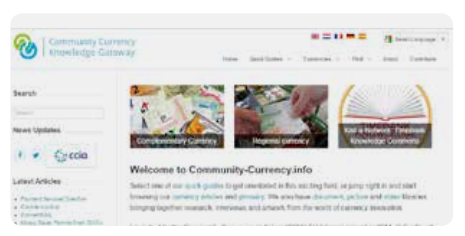
http://community-currency.info
A gateway to online resources, literature and general knowledge on community and complementary currencies. It was published by CCIA in 2014 and is maintained by international partners and volunteer contributors.
Visit the site for:
• Quick introductions to the field for policy makers, researchers and SMEs
• Evaluation guidebook ‘No Small Change: Evaluating the success of your currency project’
• Published results from CCIA and beyond: ‘Money with a purpose: Community currencies achieving social, environmental and economic impact’
• Guidance on legal and compliance issues
• Details of community currencies in operation across the world
Journals
International Journal of Community Currency Research (IJCCR): http://ijccr.net/
The IJCCR is a peer-reviewed, online journal that provides free access to the latest knowledge and research on community currencies. It aims to provide a common forum for informed debate on the empirical, critical and theoretical research and to bridge the communication gap between currency activists and academics.
page-165
Further reading
Practical community currency guides
Community Currency Guide (2006), by Bernard Lietaer and Gwendolyn Hallsmith. Global Community Initiatives.
Download at: http://www.lietaer.com/2009/12/community-currency-guide/
Guide pratique de monnaies complementaires (2013), by Antoine Attout, Leone Clerc, Amandine Cloot, Antoine Fain, Lise Disneur, Arnaud Marchand and Laurence Roland.
Download at: https:// www.financite.be/fr/article/guide-pratique-des-monnaiescomplementaires
‘Legal and Compliance overview’ on Community-Currency.info.
Access at: http://community-currency.info/en/find/cc-toolkits/legal-and-compliance/
Local Money: how to make it happen in your community (2010), by Peter North. Totnes, United Kingdom: Transition Books.
Maak je buurt uitmuntend! (2014), by Bernard Lietaer, Anne Snick and Edgar Kampers, published by the Flemish government.
Download at: http://www.vlaanderen.be/nl/publicaties/detail/maak-je-buurtuitmuntend-handboek-gemeenschapsmunten-voor-lokale-besturenen-organisaties
‘Money with a purpose’ (2015), by Susan Steed and Leander Bindewald. London, United Kingdom: New Economics Foundation.
Download at: http://www.neweconomics.org/publications/entry/money-with-a-purpose
No Small Change: Evaluating the success of your community currency project (2013), by Leander Bindewald and Susan Steed. London, United Kingdom: New Economics Foundation.
Download at: http://community-currency.info/en/find/cc-toolkits/evaluation/
People Money: the promise of regional currencies (2012), by Margrit Kennedy, Bernard Lietaer and John Rogers. Axminster, United Kingdom: Triarchy Press. http://valueforpeople.co.uk/peoplemoney
page-166
‘Classifying ‘CCs’: Community, Complementary and Local Currencies’ (2011), by Jerome Blanc. International Journal of Community Currency Research, Vol. 15.
Creating Wealth: growing local economies with local currencies (2011), by Gwendolyn Hallsmith and Bernard Lietaer. Gabriola Island, Canada: New Society Publishers.
Currencies of transition: transforming money to unleash sustainability (2013), by Jem Bendell and Thomas H Greco. In Malcolm McIntosh, (ed) The Necessary Transition: the journey towards the sustainable enterprise economy. Sheffield, United Kingdom: Greenleaf Publishing Limited.
Residual Barter Systems and Macro-economic Stability: Switzerland's Wirtschaftsring (2007), by James Stodder.
Download at: http://www.lietaer.com/images/Stodder_WIR_paper2009.pdf
Economics and theories of money
The End of Money and the Future of Civilization (2009), by Thomas H. Greco. Vermont, United States: Chelsea Green Publishing.
The Future of Money: creating new wealth, work and a wiser world (2001), by Bernard Lietaer. London, United Kingdom: Random House
Money and Giving: do financial incentives deter or encourage cooperative behaviour? (2013), by Susan Steed. London, United Kingdom: New Economics Foundation.
Download at: http://www.neweconomics.org/publications/entry/money-and-giving
Money and Sustainability: the missing link (2012), by Bernard Lietaer, Christian Arnsperger, Sally Goerner and Stefan Brunnhuber. Axminster, United Kingdom: Triarchy Press
Money Creation in the Modern Economy (2014), by Michael McCleay, Amer Radia and Ryland Thomas. Bank of England Quarterly, 2014, Q1.
Download at: http://www.bankofengland.co.uk/publications/Documents/quarterlybulletin/2014/qb14q1prereleasemoneycreation.pdf
page-167
Occupy Money: creating an economy where everybody wins (2012), by Margrit Kenndy. Gabriola Island, Canada: New Society Publishers
The Heretic's Guide to Global Finance: Hacking the Future of Money (2013), by Brett Scott. London: Pluto Press.
The Social Life of Money (2014), by Nigel Dodd. Princeton, United States: Princeton University Press.
Where Does Money Come From? (2012), by Josh Ryan-Collins and Tony Greenham. London, United Kingdom: New Economics Foundation.
page-179
Index - Glossary
name::
* McsEngl.HitpStnEcon001.last.html//dirHitp//dirStn//dirMcs!⇒bookPpm,
* McsEngl.dirMcs/dirStn/dirHitp/HitpStnEcon001.last.html!⇒bookPpm,
* McsEngl.Hitpbook.People-Powered-Money.{2015}!⇒bookPpm,
* McsEngl.Ppm!⇒bookPpm,
* McsEngl.irBook.000005.People-Powered-Money.{2015}!⇒bookPpm,
* McsEngl.irBook.People-Powered-Money.{2015}!⇒bookPpm,
* McsEngl.irBook.{2015}.People-Powered-Money!⇒bookPpm,
* McsEngl.People-Powered-Money.{2015}--book!⇒bookPpm,
* McsEngl.bookPpm,
* McsEngl.bookPpm!=HitpStnEcon001,
* McsEngl.bookPpm!=People-Powered-Money--book,
cpt.A,
Accountability
description::
* McsEngl.Accountability@bookPpm,
* McsEngl.bookPpm/Accountability, idCh6_1P3,
Accounting-system
description::
* McsEngl.Accounting-system@bookPpm,
* McsEngl.bookPpm/Accounting-system, idTable7, idCh8_5P7,
* McsEngl.Accounting-practices@bookPpm,
* McsEngl.bookPpm/Accounting-practices,
Advertising
description::
* McsEngl.Advertising@bookPpm,
* McsEngl.bookPpm/Advertising,
* selling idTable9,
Anti-counterfeit-measure
description::
* McsEngl.Anti-counterfeit-measure@bookPpm,
* McsEngl.bookPpm/Anti-counterfeit-measure, idTable7,
App
description::
* McsEngl.App@bookPpm,
* McsEngl.bookPpm/App,
* use of idCh2_2_6P1, idTable1,
cpt.B,
Banco-Palmas
description::
* McsEngl.Banco-Palmas@bookPpm,
* McsEngl.bookPpm/Banco-Palmas, idCh2_2_2P4,
* a community bank in Fortaleza, Brazil.
Barter-network
description::
* McsEngl.Barter-network@bookPpm,
* McsEngl.bookPpm/Barter-network, idCh1_2P8,
Benefit-payment
description::
* McsEngl.Benefit-payment@bookPpm,
* McsEngl.bookPpm/Benefit-payment, idCh6_3_2P1,
* In some cases, such as for timebanks in the UK, tax authorities have issued official statements confirming that a certain level of participation in such systems will not impact benefit payments.
Bolo.Pascal
description::
* McsEngl.Bolo.Pascal@bookPpm,
* McsEngl.bookPpm/Bolo.Pascal, idCh2_2_4P2,
* McsEngl.Pascal-Bolo@bookPpm,
* McsEngl.bookPpm/Pascal-Bolo,
* First Deputy Mayor of Nantes,
Bonus
description::
* McsEngl.Bonus@bookPpm,
* McsEngl.bookPpm/Bonus, (and malus) idCh5_5_2,
* McsEngl.Malus@bookPpm,
* McsEngl.bookPpm/Malus,
* in the community currency field, ‘bonus’ refers to a premium paid to individuals and organisations directly exchanging a conventional currency for a community currency.
For example, £100 of the former ‘buys’ £110 of the latter at the point of exchange - even though these remain pegged one-to-one for purposes of all other transactions.
This effectively gives users a 10% discount when making purchases in the community currency, incentivising its use.
Budgeting
description::
* McsEngl.Budgeting@bookPpm,
* McsEngl.bookPpm/Budgeting, idCh6_2_1,
* Before seeking funding, any currency will need a budget and business plan that establishes the costs that will be incurred in implementing, and then running, the currency.
Business-network
description::
* McsEngl.Business-network@bookPpm,
* McsEngl.bookPpm/Business-network, idCh2_2_2,
* Many currency schemes offer businesses an opportunity to form networks between themselves, providing a platform to publicise their work to the rest of the network.
Business-plan
description::
* McsEngl.Business-plan@bookPpm,
* McsEngl.bookPpm/Business-plan, idCh6_2_1,
cpt.C,
Canvassing
description::
* McsEngl.Canvassing@bookPpm,
* McsEngl.bookPpm/Canvassing, idCh7_3_2P4,
Care-service
description::
* McsEngl.Care-service@bookPpm,
* McsEngl.bookPpm/Care-service,
* provision of idCh1_4P6, p047, p060-p061,
Cash-flow
description::
* McsEngl.Cash-flow@bookPpm,
* McsEngl.bookPpm/Cash-flow,
improving p049-p050,
CCIA
description::
* McsEngl.CCIA@bookPpm,
* McsEngl.bookPpm/CCIA,
* McsEngl.CCIA-project@bookPpm,
* McsEngl.bookPpm/CCIA-project,
* McsEngl.Community-Currencies-in-Action@bookPpm,
* McsEngl.bookPpm/Community-Currencies-in-Action,
* CCIA is a transnational project running from 2012-2015, part-funded by the European Union's Interreg project, in the community currency field, bringing together expert partners from across north-west Europe and co-ordinating six pilot currencies in the United Kingdom, Belgium, the Netherlands and France.
[idFcoverP1]
CCIA-project published this book, "People Powered Money".
* CCIA Community Currency Implementation Framework idFcoverP14,
* CCIA-currency,
* CCIA-partner,
=== Reference:
idFcoverP1, idFcoverP3, idPartnersP3, idPartnersP4, idPartnersP5, idPartnersP6, idPartnersP7, idPartnersP8, idForewords.1P2, idForewords.2P4, idSCur, idCh1.4P3, idCh1.4P7, idCh3_2_1.1P2, idCh6.4P3, idConclusionP3, idEn16, idResource.1P1,
CCIA-partner
description::
* McsEngl.CCIA-partner@bookPpm,
* McsEngl.bookPpm/CCIA-partner,
* Amsterdam-East-Municipality,
* Credit-Municipal-de-Nantes,
* Lambeth-Council,
* Limburg.net,
* New-Economics-Foundation (NEF),
* Qoin,
* Spice,
* Wales-Council-for-Voluntary-Action (WCVA),
=== Reference:
idPartners,
Championing
description::
* McsEngl.Championing@bookPpm,
* McsEngl.bookPpm/Championing,
* stakeholders idCh3_2_3_2,
Clearing-system
description::
* McsEngl.Clearing-system@bookPpm,
* McsEngl.bookPpm/Clearing-system,
* this serves as an intermediary accounting system between members of a network, settling accounts often and grouping transactions at regular intervals - for example, at the end of each business day - and calculating each member's new balance.
Co-partnering
description::
* McsEngl.Co-partnering@bookPpm,
* McsEngl.bookPpm/Co-partnering, p074, p077,
Co-production
description::
* goes beyond mere consultation or participation of the users of a service to promote their active involvement in all stages of that service's design and delivery.
Regarding community currencies, co-production can be effective in ensuring that the design of the project aligns with the needs of users.
* McsEngl.Co-production@bookPpm,
* McsEngl.bookPpm/Co-production, p046, p047-p048, p071, p080-p081,
Collateral
description::
* McsEngl.Collateral@bookPpm,
* McsEngl.bookPpm/Collateral,
refers to any asset - typically capital or property, but also financial assets - used to guarantee settlement of debt in the case of default.
Communications-strategy
description::
* McsEngl.Communications-strategy@bookPpm,
* McsEngl.bookPpm/Communications-strategy,
* McsEngl.Publicity@bookPpm,
* McsEngl.bookPpm/Publicity,
* clear message p141-p145,
* and currency appearance p141,
* infographics p142,
* key messages of p138-p140,
* logo p141,
* maintaining a network p146,
* media, use of p143, p145,
* meetings and events p144,
* online communications p142-p143,
* press and public affairs p145,
* printed material p141,
* social media p143,
* target audiences p137-p140,
* websites p142-p143,
Conceptualisation-process
description::
* McsEngl.Conceptualisation-process@bookPpm,
* McsEngl.bookPpm/Conceptualisation-process, idCh4_2_2,
Conference
description::
* McsEngl.Conference@bookPpm,
* McsEngl.bookPpm/Conference, p144,
Core-economy
description::
* McsEngl.Core-economy@bookPpm,
* McsEngl.bookPpm/Core-economy, idCh2_3_2,
* the social ‘operating system’ on which the ‘software’ of the mainstream market economy depends.
It includes any productive work - such as child-rearing or informal care - which is necessary for the functioning of the formal economy, but which is not given a value in monetary terms by that economy.
Corporation-tax
description::
* McsEngl.Corporation-tax@bookPpm,
* McsEngl.bookPpm/Corporation-tax, p127,
Cost-of-implementation
description::
* McsEngl.Cost-of-implementation@bookPpm,
* McsEngl.bookPpm/Cost-of-implementation, p120-p121,
* McsEngl.Costs-of-implementation@bookPpm,
* McsEngl.bookPpm/Costs-of-implementation,
Council-tax-payment
description::
* McsEngl.Council-tax-payment@bookPpm,
* McsEngl.bookPpm/Council-tax-payment, p078,
Councillor
description::
* McsEngl.Councillor@bookPpm,
* McsEngl.bookPpm/Councillor, p145,
Countercyclical
description::
* McsEngl.Countercyclical@bookPpm,
* McsEngl.bookPpm/Countercyclical,
refers to any economic policy, effect or phenomenon inversely related to fluctuations in the economy overall
- that is, when the economy expands, the countercyclical element shrinks and vice-versa. Community currencies frequently have this quality, which allows them to match supply and demand in the context of contraction in the conventional money supply.
===
* McsEngl.Countercyclical-effects@bookPpm,
* McsEngl.bookPpm/Countercyclical-effects, p034,
Counterfeiting
description::
* McsEngl.Counterfeiting@bookPpm,
* McsEngl.bookPpm/Counterfeiting,
prevention of p114,
Crowdfunding
description::
* McsEngl.Crowdfunding@bookPpm,
* McsEngl.bookPpm/Crowdfunding,
* the practice of funding a project or venture by raising many small amounts of money from a large number of people or organisations, typically via the internet.
This contrasts with previous fundraising models that tended to raise a large amount of money from a few people or organisations.
Currency-system
description::
* McsEngl.Currency-project@bookPpm,
* McsEngl.bookPpm/Currency-project,
* McsEngl.Currency-scheme@bookPpm,
* McsEngl.bookPpm/Currency-scheme,
* McsEngl.Currency-system@bookPpm,
* McsEngl.bookPpm/Currency-system,
* McsEngl.Money-system@bookPpm,
* McsEngl.bookPpm/Money-system,
* idCh1_2P4, idCh1_4P10, idCh2_2P3, idCh2_2_1P4, idCh2_3_3P4, idCh3_1 (Stakeholder), idCh5P1, idCh5_5P1, idCh6_2_2P2, idCh7_3_1P4,
Stakeholder-of-currency-system
description::
* McsEngl.Stakeholder@bookPpm,
* McsEngl.bookPpm/Stakeholder,
* To distinguish different interests and possibilities for collaboration, we have outlined three broad groups: partners, backers and users. [idCh3_1]
* and co-production p080-p081,
* and communications strategy p141-p142,
* and evaluation process p152,
* groups of p070-p071,
* levels of engagement p071-p079,
* multi-stakeholder challenges p079-p080,
* and organisational structure p118-p119,
* and piloting phase p094,
* and planning phase p093,
Partner
description::
* McsEngl.Partner@bookPpm,
* McsEngl.bookPpm/Partner,
- idCh3_1_1,
Backer
description::
* McsEngl.Backer@bookPpm,
* McsEngl.bookPpm/Backer, p070,
* Backers provide financial or other support and are not involved in the implementation of the currency itself. A community currency's success will always be influenced by the support, opposition or indifference of related organisations. Funders and grant-providers, locally, nationally or at European level, might be crucial for the launch of the initiative. They will be particularly willing to support the currency if its goals are aligned with their own purposes.
[idCh3_1_2P1]
Audience
description::
* McsEngl.Audience@bookPpm,
* McsEngl.bookPpm/Audience,
* target idCh7_1,
Business-to-business-system
description::
* McsEngl.Business-to-business-system@bookPpm,
* McsEngl.bookPpm/Business-to-business-system, p035, p050,
* McsEngl.B2B@bookPpm,
* McsEngl.bookPpm/B2B,
* McsEngl.Business-to-business-trade-exchange@bookPpm,
* McsEngl.bookPpm/Business-to-business-trade-exchange,
* currency systems operating in a network of businesses to which consumer households typically do not have access.
The term is often used synonymously with business barter systems, reciprocal exchange systems, capacity trade systems.
These currencies typically operate by the mutual-credit methodology, with exceptions like the WIR bank in Switzerland.
Many such currencies are operated by commercial companies.
Closed-loop-system
description::
* refers to
a) a strictly limited network of users (usually through membership), outside of which the currency cannot be spent and
b) a design feature of the currency itself, which cannot be exchanged for national currency.
Closed-loop payment systems aim to keep wealth within a defined community of users and increase the volume and frequency of exchanges between those users.
The most famous example of this type of system is the Swiss WIR Bank, as well as many other business-to-business trade exchanges.
* McsEngl.Closed-loop-system@bookPpm,
* McsEngl.bookPpm/Closed-loop-system,
* idCh1_4P8 (SoNantes), idTable6, idCh6_2_2P6 (RES), idCh6_3_1P2,
Currency
description::
* McsEngl.Currency@bookPpm,
* McsEngl.bookPpm/Currency,
* acceptance,
* function-of-the-currency,
* backer,
* budgeting p120-p121,
* business plan p120-p121,
* costs p121,
* design-of-currency,
* e-money-Directive,
* financial issues p120-p125, p128-p130,
* fundraising p123-p125,
* implementation-and-operation-of-currency,
* insurance p129,
* legal framework p126-p130,
* non-linear process p090-p092,
* organisational structure and governance p118-p119,
* piloting phase p093-p094,
* planning phase p092-p093,
* quantity-of-money,
* salary-in-currency,
* taxation p126-p127,
* user,
=== Specific:
* backed-currency,
* Beki-currency (Luxembourg),
* Berk-currency,
* Bitcoin-currency (Global, digital),
* Bristol-Pound-currency,
* Brixton-Pound-currency (UK) ,
* CCIA-currency,
* Chiemgauer-currency (Germany),
* commodity-backed-currency,
* community-currency,
* complementary-currency,
* conventional-currency,
* convertible-currency,
* digital-currency,
* e-Portemonnee-currency (Belgium, digital)
* Eco-Iris-currency,
* EKO-currency (UK),
* euro-currency,
* Eusko-currency,
* GBP-currency,
* inflation-immune currency
* international-currency,
* legal-tender-backed-currency,
* local-currency,
* mainstream-currency,
* Makkie-currency (Netherlands, timebased)
* national-currency,
* non-convertible-pegged-currency,
* Palmas-currency, (Brazil),
* paper-based-currency, p029-p030,
* Regiogeld-currency,
* reward-currency,
* regional-currency,
* scrip-money,
* SolarCoin-currency (digital),
* SoNantes-currency (France, digital),
* Spice-Time-Credits-currency (UK, time),
* Terra-currency,
* time-currency,
* TradeQoin-currency (Netherlands, digital),
* transition-currency,
* Transition-Pounds (UK),
* USD-currency,
Function-of-currency
description::
* McsEngl.Function-of-currency@bookPpm,
* McsEngl.bookPpm/Function-of-currency, idCh5_1,
Medium-of-exchange
description::
* McsEngl.Medium-of-exchange@bookPpm,
* McsEngl.bookPpm/Medium-of-exchange, idCh5_1P6, idCh5_1P7,
the actual medium used to conduct financial transactions, whether physical (notes and coins) or electronic (data representing account balances, transferred via credit or debit cards or online systems).
===
As a medium of exchange, money allows different parties to perform economic transactions beyond the limits of simple barter systems. Unlike barter, money overcomes what economists call the ‘double coincidence of wants’, which requires both parties to offer a specific good or service that the other desires. The medium of exchange function of money enables people to conduct efficient transactions and trade with each other without this ‘double coincidence’.
[idCh5.1P6]
=== Reference:
idCh1.2P2 (LETS), idCh5.1P1 (money function), idCh5.1P6, idCh5.1P7, idChTable4 (demurrage), idCh6_2_2P6 (RES),
Store-of-value
description::
* McsEngl.Store-of-value@bookPpm,
* McsEngl.bookPpm/Store-of-value, idCh5_1P5,
the characteristic of RETAINING VALUE or - in the case of currencies - purchasing power over a long period of time.
=== Reference:
idCh5.1P1 (money), idCh5.1P5,
Legal-tender
description::
* McsEngl.Legal-tender@bookPpm,
* McsEngl.bookPpm/Legal-tender,
a means of payment that is recognised and guaranteed by law and must be accepted by any state, organisation or individual in settlement of debt. Legal tender money is most readily accepted as a means of paying taxes; and legal tender savings with licensed, deposit-taking institutions (banks) are guaranteed by many states up to certain amount.
=== Reference:
idCh2_4_3P4 (Eco-Iris), idCh2_4_3P4 (Kruggerand), idCh5.4P2 (gold standard), idCh5.5P1 (rel CC design), idCh5_5_2P2 (bonus), idCh5_5_3P4 (Bitcoin), idTable6, idCh5.7P1 (acceptance of CC), idCh6_3_1P3 (VAT), idCh6_3_3P1 (law), idCh6_3_3P2, idCh6_3_6P1,
Demurrage
description::
* McsEngl.Demurrage@bookPpm,
* McsEngl.bookPpm/Demurrage,
a system of ‘negative interest’, whereby the value of a currency decreases over time.
In the community currency field, demurrage is typically used to encourage spending and discourage hoarding.
The German monetary and social reformer Silvio Gesell was the first to propose built-in depreciation of a currency in his Freigeldtheorie, which contrasted money's retention of value with the depreciation of natural goods.
If the monetary system had a negative interest rate or some other form of demurrage, people would buy goods more readily and would invest their time and effort in the maintenance of their stock.
* concept of idCh5_1P5, idCh5_5_1, idTable9,
* pros and cons idCh5_1P5, idTable9,
* Chiemgauer idCh2_2_4P4,
* Regiogeld idCh1_3P3,
* scrip money idCh1P4,
* Worgl idCh1_1P1,
=== Reference:
idCh1P4 (scrip), idCh1.1P1 (Worgl), idCh1.3P3 (Regiogeld), idCh2_2_4P4 (Chiemgauer), idCh5.1P5 (hoarding), idCh5.5P1, idCh5_5_1H3, idCh5_5_1P1, idCh5_5_1P2, idTable4, idTable9,
Hoarding
description::
* McsEngl.Hoarding@bookPpm,
* McsEngl.bookPpm/Hoarding, idCh2_2_4P4, idCh5_1P5, idCh5_5_1,
the act of accumulating a large quantity of capital without any intention of re-investing it back into the economy.
=== Reference:
idCh1P4 (scrip), idCh2_2_4P4 (Chiemgauer), idCh5.1P5 (store of value), idCh5_5_1P1, idTable4,
Conventional-currency
description::
* McsEngl.Conventional-currency@bookPpm,
* McsEngl.bookPpm/Conventional-currency,
mainstream money, such as the national or transnational currencies we use every day,
[idIntroP5]
* McsEngl.conventional-money@bookPpm,
* McsEngl.bookPpm/conventional-money,
* McsEngl.dominant-currency@bookPpm,
* McsEngl.bookPpm/dominant-currency,
* McsEngl.national-currency@bookPpm,
* McsEngl.bookPpm/national-currency,
* McsEngl.mainstream-money@bookPpm,
* McsEngl.bookPpm/mainstream-money,
=== Reference:
idIntroP5, idIntroP6, idIntroP9, idPart1P2, idCh1P4, idCh1P7, idCh1.1P2, idCh1.2P2, idCh1.2P7, idCh1.2P8, idCh1.3P1, idCh2_2_1P4, idCh2_2_1P5, idCh2_2_4P7, idCh2_4_2P1, idCh3_2_3.1P1, idCh5.1P7, idCh5.2P3, idCh5.4P2, idCh5.4P3, idCh5_5_2P1, idTable5, idCh5_5_3H3, idCh5.6P1, idCh5.7P1, idCh6_2_2P1, idCh6_2_2P2, idCh6_2_2P4, idTable9, idCh6_2_2P7, idCh6_3_1P5, idCh6_3_3P2, idCh6_4_2P2,
Convertible-currency
description::
* McsEngl.Convertible-currency@bookPpm,
* McsEngl.bookPpm/Convertible-currency,
a currency that can be converted into another currency. For example, Brixton Pounds can be exchanged one-toone for pounds sterling; while the WIR franc is - theoretically at least - not convertible and there are penalties for attempting to convert it into Swiss francs.
* p112-p113,
Non-convertible-pegged-currency
description::
* McsEngl.Non-convertible-pegged-currency@bookPpm,
* McsEngl.bookPpm/Non-convertible-pegged-currency, p127,
A currency that is not directly convertible into legal tender, but is pegged at par with the national currency.
Kruggerand
description::
* McsEngl.Kruggerand@bookPpm,
* McsEngl.bookPpm/Kruggerand, idCh5_2P6, idTable1,
* The Krugerrand is a South African 22-karat gold coin, available in denominations of half, quarter and a tenth of an ounce of gold.
Argentina
description::
* McsEngl.Argentina@bookPpm,
* McsEngl.bookPpm/Argentina,
* Trueque idCh1_2P8,
Austria
description::
* McsEngl.Austria@bookPpm,
* McsEngl.bookPpm/Austria,
* Worgl idCh1_1P1,
Brazil
description::
* McsEngl.Brazil@bookPpm,
* McsEngl.bookPpm/Brazil,
* Palmas p051-p052,
France
description::
* McsEngl.France@bookPpm,
* McsEngl.bookPpm/France,
* Eusko p054,
* and financial regulations p128,
* SoNantes,
Germany
description::
* McsEngl.Germany@bookPpm,
* McsEngl.bookPpm/Germany,
* Chiemgauer p054, p124, p125,
* and financial regulations p128,
* Regiogeld p039, p054,
Kenya
description::
* McsEngl.Kenya@bookPpm,
* McsEngl.bookPpm/Kenya,
* Bangla-Pesa p050,
London
description::
* McsEngl.London@bookPpm,
* McsEngl.bookPpm/London,
* see Brixton Pound>,
Luxembourg
description::
* McsEngl.Luxembourg@bookPpm,
* McsEngl.bookPpm/Luxembourg,
* Beki p124, p125,
Netherlands
description::
* McsEngl.Netherlands@bookPpm,
* McsEngl.bookPpm/Netherlands,
* Makkie,
* and taxation p127,
* TradeQoin,
Scotland
description::
* McsEngl.Scotland@bookPpm,
* McsEngl.bookPpm/Scotland,
* EKO p055,
South-Africa
description::
* McsEngl.South-Africa@bookPpm,
* McsEngl.bookPpm/South-Africa,
* CES p133,
* Kruggerand p103-p104,
Switzerland
description::
* McsEngl.Switzerland@bookPpm,
* McsEngl.bookPpm/Switzerland,
* WIR,
* Zeitvorsoge p040, p047,
USA
description::
* McsEngl.USA@bookPpm,
* McsEngl.bookPpm/USA,
BerkShares p051,
Complementary-currency
description::
* McsEngl.CompCurrency-(Complementary-Currency)@bookPpm,
* McsEngl.bookPpm/CompCurrency-(Complementary-Currency), p031-p033,
currencies designed to sit alongside mainstream money to address objectives that the conventional money system can't.
[idCh1P7]
* McsEngl.Complementary-currency@bookPpm,
* McsEngl.bookPpm/Complementary-currency,
=== Reference:
idPartnersP5, idWhatinP2, idPart1P1, idPart1P2, idCh1P4, idCh1P5, idCh1P6, idCh1P7, idCh1P9, idCh1P10, idCh1.4P9, idCh1.4P10, idCh2P2, idCh2_2_1P2, idCh2_2_1P4, idCh2_2_3P1, idCh2_2_4P5, idCh3P2, idCh5.1P5, idCh5.2P3, idCh5.2P4, idCh5.2P5, idCh5_5_1P1, idCh5.6P1, idCh5.7P1, idCh6_2_2P4, idCh6.3P3, idCh6_3_3P5, idResource.1P1, idResource.2.2H3,
Legal-tender-backed-currency
description::
* McsEngl.Legal-tender-backed-currency@bookPpm,
* McsEngl.bookPpm/Legal-tender-backed-currency, p126, p127,
refers to a complementary currency with guaranteed redeemability (backing) for the legal tender of the country in which it operates. The Brixton Pound, for example, falls into this category, as it is redeemable by businesses for pound sterling.
Terra
description::
* McsEngl.Terra@bookPpm,
* McsEngl.bookPpm/Terra,
* backing methods p109,
* denomination and transaction media p103,
* description of idCh2_4_2P2,
Community-currency
description::
* McsEngl.CommCurrency-(Community-Currency)@bookPpm,
* McsEngl.bookPpm/CommCurrency-(Community-Currency),
a subset of complementary currencies that are tied to a specific, demarcated and limited community. This community could be, for example, geographical (local currencies); business-based (mutual-credit systems); or online (global digital currencies). As such, a community currency is designed to meet the needs of this defined community, typically on a not-for-profit basis.
* McsEngl.Community-currency@bookPpm,
* McsEngl.bookPpm/Community-currency,
* McsEngl.Features-of-currency@bookPpm,
* McsEngl.bookPpm/Features-of-currency,
* definition idCh1P7,
* function of the currency idCh5_1,
* issuance idCh5_3,
* convertibility to national-currencies idCh5_5_3,
* demurrage idCh1P4, idCh1_1P1, idCh1_3P3, idCh2_2_4P4, idCh5_1P5, idCh5_5_1, idTable9,,
* denomination idCh5_2,
* market creation idCh5_7,
* network membership idCh5_7P2, idCh5_7P3,
* objectives,
* security measures idCh5_6,
* transaction media idCh5_2,
* historical background idCh1, idCh1_1, idCh1_2,
=== Reference:
idFcoverP1, idFcoverP3, idFcoverP14, idPartnersP3, idPartnersP4, idPartnersP6, idForewords.1P2, idForewords.1P3, idForewords.2P1, idForewords.2P4, idIntroP3, idIntroP9, idSDemo, idSSme, idSCur, idSIneq, idSEnv, idPart1P1, idCh1P1, idCh1P2, idCh1P7, idCh1P10, idCh1.1P1, idCh1.2P1, idCh1.2P4, idCh1.2P6, idCh1.2P7, idCh1.2P8, idCh1.3P3, idCh1.4P2, idCh2P1, idCh2P2 (definition), idCh2P3 (objective), idCh2P4 (objectives), idCh2_1_1P3, idCh2_1_1P6 (co-production), idCh2_1_1P7, idCh2_2_2P2 (BerkShares), idCh2_2_2P4 (Palmas), idCh2_2_4P6 (acceptance), idCh2_2_4P7, idCh2_2_4P8 (EKO), idCh2_2_5P1, idCh2_2_5P2, idCh2_2_5P3 (Brixton Pound), idCh2_2_5P4 (social effects), idCh2_2_6P2 (case study), idCh2.3P1 (inequalities), idCh2_3_1P3, idCh2_3_2P2 (core-economy), idCh2_3_3P2 (inequalities), idCh2_3_4P1, idCh2.4P1 (environment), idCh2_4_3P1, idCh2_4_3P5 (aims), idCh3P1 (rel people), idCh3P2 (rel complementary-currency), idCh3P3 (not-for-profit), idCh3P4, idCh3P5 (adoption), idCh3_1_2P1 (backer), idCh3_2_1.1P1 (stakeholder), idCh3_2_2P1 (sponsoring), idCh3_2_3.1P1, idCh3_2_3.1P3 (council tax), idCh3_2_3.2P2, idPart2P1, idCh4P1 (design), idCh4P4 (rel people), idCh5P1 (feature), idCh5.1P2 (rel money definition), idCh5.1P4 (unit of account), idCh5.1P7 (medium of exchange), idCh5.2P1 (denomination), idCh5.2P3 (transaction medium), idTable1 (denomination | medium), idTable2 (issuance), idCh5.4P1 (backing), idCh5.4P2 (backing trust), idCh5.4P3 (conversion), idTable4 (backing methods), idCh5.5P1 (demurrage - bonus|malus - conversion), idCh5_5_2P2 (bonus), idTable5 (bonus malus), idCh5_5_3P1 (conversion), idCh5.6P1 (security), idCh5.7P1 (adoption), idCh6P2 (establishing), idCh6.1P3 (flexibility), idCh6.1P4 (incorporation forms), idCh6.2P3 (funding), idTable8 (costs), idCh6_2_2P1 (operational costs), idCh6_2_2P3 (fixed costs on members), idTable9 (financing mechanisms), idCh6.3P1 (law compliance), idCh6_3_1P1 (tax evasion), idCh6_3_1P3 (VAT), idCh6_3_1P5 (income tax), idCh6_3_3P3 (EU legislation), idCh6_3_3P5 (E-money directive), idCh6_3_4P3 (default), idCh6_3_6P1 (public sector adoption), idCh6.4P1 (rel digital revolution), idCh6.4P2 (websites), idCh6.4P3 (QoinWare), idCh6.4P4 (web appls), idCh6.4P5 (digital payments), idCh6_4_1P1 (apps functions), idCh6_4_2P1 (apps features), idCh6_4_2P3 (rel CMS), idCh6_4_2P5 (CES), idCh7P1 (comm strategy), idCh7P2 (education), idCh7_1_2P4 (academics), idCh7.2P1 (comm message), idTable10 (messages), idCh7_3_1P2, idCh7_3_2P4 (complicated topic), idCh7_3_2P4 (social network), idCh8P1 (evaluation), idCh8.1P4 (theory of change), idConclusionP3 (make money work for people),
Backing
description::
* McsEngl.Backing@bookPpm,
* McsEngl.bookPpm/Backing, idCh5_4,
* a design feature of currency (conventional or otherwise), which - in the broader sense - guarantees the long-term purchasing power of a currency.
* In the narrower, THE ISSUER guarantees to exchange the currency for either another currency or a commodity.
=== Reference:
idCh1.3P1, idCh2_2_4P5, idCh5.4H2, idCh5.4P1, idCh5.4P2, idCh5.4P3, idTable4, idCh6_3_1P2, idCh6_3_2P2, idNameLegal-tender-backed-currency, idNameRedeemability,
Design-of-currency
description::
* McsEngl.Design-of-currency@bookPpm,
* McsEngl.bookPpm/Design-of-currency, idCh4,
Planning-phase
description::
* McsEngl.Planning-phase@bookPpm,
* McsEngl.bookPpm/Planning-phase, #idCh4_2,
Piloting-phase
description::
* McsEngl.Piloting-phase@bookPpm,
* McsEngl.bookPpm/Piloting-phase, idCh4_3,
Continuation-stage
description::
* McsEngl.Continuation-phase@bookPpm,
* McsEngl.bookPpm/Continuation-phase, idCh4_4,
Operator-of-currency
description::
* McsEngl.Operator-of-currency@bookPpm,
* McsEngl.bookPpm/Operator-of-currency,
* The narrow definition of ‘backing’ means that those holding the backed currency have a legally enforceable claim against the operator of the currency for a specific quantity of another currency or commodity. idCh5_4P1,
Adoption-of-currency
description::
* McsEngl.Adoption-of-currency@bookPpm,
* McsEngl.bookPpm/Adoption-of-currency,
* McsEngl.Acceptance-of-currency@bookPpm,
* McsEngl.bookPpm/Acceptance-of-currency,
* McsEngl.Participation-in-currency@bookPpm,
* McsEngl.bookPpm/Participation-in-currency,
* McsEngl.Usage-of-currency@bookPpm,
* McsEngl.bookPpm/Usage-of-currency,
=== Reference:
idCh1.2P5 (time-currency), idCh1.2P8 (Trueque), idCh2_2_4P6 (SME), idCh5.6P1 (security), idCh6_3_1P5 (LETS), idCh3_1_3P1 (users), idCh3.2P2 (stakeholder), idCh3_2_1.2P1, idCh3_2_1.2P4 (business), idCh3_2_3.1P1 (time-currency), idCh3_2_3.1P3 (Bristol Pound), idCh3_2_3.2P2, idCh3_3_1P2 (gradually), idCh3_2_3.2P2 (wages), idTable4, idCh5.7P1 (importance), idCh5.7P2 (criteria), idCh5.7P3, idCh6.3P3 (public bodies), idCh6_3_1P5 (services payment), idCh6_3_6P1 (public entities), idCh7_3_3P3, idCh8.5P5 (Brixton Pound),
Issuance
description::
* McsEngl.Issuance@bookPpm,
* McsEngl.bookPpm/Issuance, idCh5_3,
the act of putting new money into circulation, typically through state spending or - much more commonly these days - the extension of credit/creation of debt by private financial institutions.
Circulation
description::
* McsEngl.Circulation@bookPpm,
* McsEngl.bookPpm/Circulation,
* into idCh5_3_3,
* out of idCh5_3_4,
Quantity-of-money
description::
* McsEngl.Quantity-of-money@bookPpm,
* McsEngl.bookPpm/Quantity-of-money, idCh5_3_2, idTable2,
Governance
description::
* McsEngl.Governance@bookPpm,
* McsEngl.bookPpm/Governance, idCh6_1,
Energy-currency
description::
* McsEngl.Energy-currency@bookPpm,
* McsEngl.bookPpm/Energy-currency, p064-p065, p082-p083,
Purchased-and-redeemable-voucher
description::
* McsEngl.Purchased-and-redeemable-voucher@bookPpm,
* McsEngl.bookPpm/Purchased-and-redeemable-voucher, idCh5_4P3,
* Community currencies that are backed by, and redeemable for other (conventional) currencies rather than a specific good like gold, are referred to as ‘purchased and redeemable vouchers’, of which Chiemgauer, Bristol Pound and Brixton Pound are examples.
Table 3 shows the backing methods of a range of different community currencies.
Reward-currency
description::
* McsEngl.Reward-currency@bookPpm,
* McsEngl.bookPpm/Reward-currency,
incentivise certain behaviour by consumers, such as the purchase of more sustainable products, through earning points that can be redeemed for rewards or discounts on future purchases.
===
* McsEngl.Reward-currencies@bookPpm,
* McsEngl.bookPpm/Reward-currencies,
* McsEngl.Reward-currency-scheme@bookPpm,
* McsEngl.bookPpm/Reward-currency-scheme, p052, p064, p066,
Transition-currency
description::
* McsEngl.Transition-currency@bookPpm,
* McsEngl.bookPpm/Transition-currency,
* UK-based community currencies affiliated with the Transition Town movement, which aim to further that movement's goals of rebuilding self-sufficient local economies that are environmentally sustainable and socially oriented. These have included: the Bristol, Brixton, Totnes, Stroud and Lewes Pounds. While each has unique features, all are valued one-to-one with pound sterling for transaction purposes and all fall under the basic legal backed tender currency type.
* McsEngl.Transition-currencies@bookPpm,
* McsEngl.bookPpm/Transition-currencies,
Beki
description::
* McsEngl.Beki@bookPpm,
* McsEngl.bookPpm/Beki,
The Beki is a regional currency operating in the Redange canton of Luxembourg. Valued one-to-one with the euro, the Beki is designed to stimulate the SME economy and transition towards environmental sustainability.
To use the currency, businesses and individuals must become members of ‘De Kar’ - the organisation managing the Beki. Although redeemable for euros, Bekis exchanged back for the conventional currency incur a 5% charge, intended both to provide income for the operation of the currency and further incentivise spending in Bekis rather than euros.
[idCh6_2_2P7]
=== Reference:
idCh6_2_2P7, idTable9,
BerkShares
description::
* McsEngl.BerkShares@bookPpm,
* McsEngl.bookPpm/BerkShares, idCh2_2_2P2,
* BerkShares are the community currency of the Berkshire region of Massachusetts, USA.
Bristol-Pound
description::
* McsEngl.bookPpm/Bristol-Pound,
* and City Council idCh1_4P4, idCh3_2_3_1P3,
* and council tax payments idCh3_2_3_1P3,
* and financial regulations idCh6_3_3P6,
* and Mayor's wages idCh3_2_3_2P2,
* social effects of idCh2_2_5P4,
=== Reference:
idForewords.1P4, idCh1.4P4, idCh2_2_5P4, idCh3_2_3.1P3, idCh3_2_3.2P2, idCh5.4P3, idCh6_3_3P6, idCh6.4P3,
Brixton-Pound
description::
* McsEngl.Brixton-Pound@bookPpm,
* McsEngl.bookPpm/Brixton-Pound,
The Brixton Pound is a community currency operating in South London, UK. Although primarily designed to support local SMEs, the Brixton Pound also seeks to increase the sense of community cohesion and draw on the area's history of social activism.
Valued one-to-one against pound sterling, the Brixton Pound can only be spent with local SMEs and thereby aims to retain wealth within the community. Many participating businesses offer discounts to those paying in Brixton Pounds - in effect offering a loyalty scheme that both demonstrates their commitment to the local economy and increases custom. In the long term, increased links between Brixton-based SMEs themselves localise as far as possible supply and production chains to create a more sustainable and resilient economy for the area.
[idCh2_2_5P3]
===
* backing methods p109,
* bonus and malus p111, p124,
* convertibility of p112,
* denomination and transaction media p057, p103,
* description of p056,
* evaluation of impact p057, p154,
* fees p124,
* financing mechanisms p124, p125,
* issuance p105, p107,
* and local council p040,
* and merchandise, selling p125,
* payment options p057, p101, p134-p135,
* social effects of p056, p057, p154,
* wages in currency p057, p154,
=== Reference:
idPartnersP3, idPartnersP6, idForewords.2P1, idSCur, idCh1.4P4, idCh2_2_5P3,
Chiemgauer
description::
* McsEngl.Chiemgauer@bookPpm,
* McsEngl.bookPpm/Chiemgauer, idCh2_2_4P4,
* The Bavarian Chiemgauer is the first and largest of Germany's Regiogeld initiatives.
* demurrage idTable9,
* description of 54 leakage idTable9,
Credito
description::
* McsEngl.Credito@bookPpm,
* McsEngl.bookPpm/Credito, idCh1_2P8,
* The Redes de Trueque (Barter Networks) evolved in Argentina in the mid 1990s in response to the economic crisis and collapse of the national currency, the peso.
The network created a countrywide chain of community markets, which used their own currency, the ‘Credito’, to facilitate exchange of goods and services.
Eco-Iris
description::
* McsEngl.Eco-Iris@bookPpm,
* McsEngl.bookPpm/Eco-Iris, idCh2_4_3P4,
* The Eco-Iris is a local currency introduced in the Brussels region by the Ministry of Environment to promote sustainable behaviour and purchasing, boost the local economy and improve community cohesion.
EKO
description::
* McsEngl.EKO@bookPpm,
* McsEngl.bookPpm/EKO, idCh2_2_4P8,
* The EKO is the community currency of the Findhorn ecovillage in north-west Scotland.
Pegged to pound sterling, it operates alongside the village's LETS to provide a strong and resilient local money system.
Eusko
description::
* McsEngl.Eusko@bookPpm,
* McsEngl.bookPpm/Eusko, idCh2_2_4P5,
* The Eusko is a regional currency launched in 2013 in Bayonne, a city in the French Basque Country.
Palmas
description::
* McsEngl.Palmas@bookPpm,
* McsEngl.bookPpm/Palmas, idCh2_2_2P4,
Regiogeld
description::
* McsEngl.Regiogeld@bookPpm,
* McsEngl.bookPpm/Regiogeld, idCh1_3P3, idCh2_2_4P4,
Regiogeld refers to multiple community currencies across Germany, Austria and the Netherlands. As the name implies, ‘regional money’ serves a larger geographical community than most locally bound community currencies. They thereby increase the potential for environmentally sustainable production and supply chains by casting their net more widely across the local region.
While using a variety of models - including paper-based or electronic systems incorporating demurrage and some forms of local credit systems - Regiogeld currencies are designed to counterbalance the negative effects of globalisation through stimulating local SME economies. The most well-known Regiogeld currency is the Chiemgauer, operational in Bavaria since 2003.
[idCh1.3P3]
Scrip-money
description::
* McsEngl.Scrip-money@bookPpm,
* McsEngl.bookPpm/Scrip-money, idCh1P4,
* McsEngl.Stamp-scrip@bookPpm,
* McsEngl.bookPpm/Stamp-scrip,
Torekes
description::
* McsEngl.Torekes@bookPpm,
* McsEngl.bookPpm/Torekes, idCh1_4P5,
* In 2011, the City of Ghent in Belgium rented out gardening spaces for a newly created social currency, the Torekes, which can be earned through many activities aimed at improving the built environment and community spirit of one of the country's most disadvantaged areas.
Worgl
description::
* McsEngl.Worgl@bookPpm,
* McsEngl.bookPpm/Worgl, idCh1_1P1,
Digital-currency
description::
* McsEngl.Digital-currency@bookPpm,
* McsEngl.bookPpm/Digital-currency,
* see Bitcoin; CES; e-Portemonnee; RES; SolarCoin; SoNantes; TradeQoin; Ven; WIR,
Bitcoin
description::
* McsEngl.Bitcoin@bookPpm,
* McsEngl.bookPpm/Bitcoin,
Perhaps the most well-known complementary currency in use today, Bitcoin is a digital payment system. The first allocation, or ‘mining’, and consecutive transfer of coins is independent of any central authority or regulation. Bitcoins are transferred through a computer or smartphone without an intermediate financial institution.
As a currency it's simply a new medium through which to trade, operating under parameters such as the total number in circulation, the method by which new units are allocated and free-market pricing. Bitcoin payment systems use a decentralised ledger, which operates through a peer-to-peer network, to cut out the middleman role usually performed by a bank. This means the record of all transactions is not held centrally, but in a network of computers, which confirm the validity of new transactions using special encoding technology. [idCh5_2P4]
* convertibility of idCh5_5_3P4,
* denomination and transaction media idTable1,
* issuance idCh5_3_3P2,
=== Reference:
idForewords.2P1, idCh1P11, idCh1.4P10, idCh2_4_2P4, idCh5.2P4, idTable1, idCh5_3_3P2, idCh5_5_3P2, idCh5_5_3P4, idCh6.4P5, idEn5,
CES
description::
* McsEngl.CES@bookPpm,
* McsEngl.bookPpm/CES, idCh6_4_2P5,
* McsEngl.Community-Exchange-System@bookPpm,
* McsEngl.bookPpm/Community-Exchange-System,
e-Portemonnee
description::
* McsEngl.e-Portemonnee@bookPpm,
* McsEngl.bookPpm/e-Portemonnee,
e-Portemonnee (E-Wallet) is an electronic savings and reward system designed to reduce household waste and support environmentally sustainable behaviour in the 44 municipalities of the East Belgian province of Limburg. Municipalities can award digital credits to residents for environmentally positive actions, such as switching to a green energy provider, donating goods to a local second-hand shop, or composting food waste. These credits, accessed through the participants' national ID cards, can then be spent on sustainable services and products, such as public transport, environmentally friendly household products or educational courses.
[idCh2_4_1P2]
* McsEngl.Limburg@bookPpm,
* McsEngl.bookPpm/Limburg,
* backing methods p109,
* denomination and transaction media p103,
* description of p064, p082-p083,
* impact of p082-p083,
* issuance p107,
* and stakeholder integration p074-p075,
=== Reference:
idPartnersP4, idSCur, idCh2_4_1P2, idCh2_4_3P4, idCh3_2_1.2P3, idCh3.4P3, idTable1, idCh5.2P7, idTable2, idTable3, idCh7.2P3,
RES
description::
* McsEngl.RES@bookPpm,
* McsEngl.bookPpm/RES, idCh6_2_2P6
SolarCoin
description::
* McsEngl.SolarCoin@bookPpm,
* McsEngl.bookPpm/SolarCoin, idCh2_4_2P4,
SoNantes
description::
* McsEngl.SoNantes@bookPpm,
* McsEngl.bookPpm/SoNantes,
Inspired by the Swiss WIR, the SoNantes currency launched in Spring 2015, supported with EU funding and managed by Nantes’ public bank. Its innovative model allows businesses to trade using a closed-loop mutual-credit system, alongside individual consumers who have bought in to the scheme through purchasing credits for euros. These all-digital credits can be exchanged for goods and local services, including public transport, using a swipe card.
[idCh1.4P8]
* McsEngl.Nantes@bookPpm,
* McsEngl.bookPpm/Nantes,
* backing methods p109,
* denomination and transaction media p103,
* description of p040,
* infographics p142,
* issuance p107,
* and local circulation of p053,
=== Reference:
idPartnersP2, idPartnersP6, idForewords.2P1, idSCur, idCh1.4P7, idCh1.4P8, idCh2_2_4P2, idTable1, idTable2, idTable3, idCh6.4P3, idCh7_3_1P4, idNameCCIA-currency,
TradeQoin
description::
* McsEngl.TradeQoin@bookPpm,
* McsEngl.bookPpm/TradeQoin,
TradeQoin is a Dutch SME trading network that lets businesses pay each other for goods and services with their own digital currency created at the moment of exchange. This helps members reduce their euro expenditure and offers SMEs fast and cheap working capital in TradeQoin. The online marketplace run by members stimulates business between participating SMEs.
[idCh2_2_1P3]
* backing methods p109,
* benefits of p052,
* denomination and transaction media p103,
* description of 50 fees p124,
* issuance p107,
=== Reference:
idPartnersP6, idSCur, idCh2_2_1P3, idCh2_2_3P2, idTable1, idTable2, idTable4, idTable9, idCh6.4P3,
Ven
description::
* McsEngl.Ven@bookPpm,
* McsEngl.bookPpm/Ven, idTable1,
WIR-frank
description::
* McsEngl.WIR-frank@bookPpm,
* McsEngl.bookPpm/WIR-frank,
The Swiss WIR Bank was founded in 1934 as business was decimated during the interwar financial crisis. Today, the WIR Bank has a ten-figure turnover and over 60,000 members - mostly SMEs (small and medium-sized enterprises) in construction, hospitality, manufacturing and retail. The bank provides these members with credit at virtually zero interest, marketing opportunities and a clearing system, through which goods and services can be exchanged using the bank's own currency: the WIR franc, which is pegged at par but not redeemable with regular Swiss francs.
[idCh1.1P2]
Mutual-credit-system
description::
* McsEngl.Mutual-credit-system@bookPpm,
* McsEngl.bookPpm/Mutual-credit-system,
* see also Bangla-Pesa; CES; Hull and East Riding Timebank; LETS; SoNantes; TradeQoin,
Mutual-credit
description::
* McsEngl.Mutual-credit@bookPpm,
* McsEngl.bookPpm/Mutual-credit,
a system by which units of credit are created at the moment of the transaction between individual users as a debit of one's account and a credit of the other's. Operating within agreed limits of credit and debt, members of a mutual-credit system effectively loan one another the capital necessary for the exchange of goods and services within the network, with the overall balance of all members' accounts always equalling zero.
Bangla-Pesa
description::
* McsEngl.Bangla-Pesa@bookPpm,
* McsEngl.bookPpm/Bangla-Pesa, idCh2_2_1P5,
* a mutual-credit system for SMEs in an impoverished district of Mombasa, Kenya,
Hull-and-East-Riding-Timebank
description::
* McsEngl.Hull-and-East-Riding-Timebank@bookPpm,
* McsEngl.bookPpm/Hull-and-East-Riding-Timebank, idCh8_5P8,
LETS
description::
* McsEngl.LETS@bookPpm,
* McsEngl.bookPpm/LETS,
* McsEngl.Local-Exchange-Trading-System@bookPpm,
* McsEngl.bookPpm/Local-Exchange-Trading-System,
Local Exchange Trading Schemes. Members trade skills, services and resources with each other, using credits issued by members themselves at the moment of exchange. LETS thereby mobilise a community's latent capacity by providing both a forum and medium of exchange outside the conventional market economy. Typically LETS operate by the mutual-credit methodology.
* description of idCh1_2P2,
* and quantity of money idCh5_3_2P1,
* and taxation idCh6_3_1P2,
=== Reference:
idCh1.2P1 (history), idCh1.2P2, idCh1.2P6, idCh1.4P1, idCh2_2_4P8 (EKO), idCh5_3_2P1, idCh5.4P1, idCh6_3_1P2, idCh6_3_1P5, idCh6_4_2P5 (CES),
Time-currency-system
description::
* McsEngl.Time-credit-system@bookPpm,
* McsEngl.bookPpm/Time-credit-system, idCh1_2P5, idCh2_3_2P3,
* McsEngl.Time-currency-system@bookPpm,
* McsEngl.bookPpm/Time-currency-system,
* The community currencies most widely used to recognise the value of activities neglected by the mainstream economy are timebanks.
The principle behind such currencies is simple: one hour's work equals a unit of time.
* see also Makkie; Spice Time Credits; timebanks; Zeitvorsoge,
Time-currency
description::
* McsEngl.Time-currency@bookPpm,
* McsEngl.bookPpm/Time-currency,
* McsEngl.Time-credit@bookPpm,
* McsEngl.bookPpm/Time-credit,
* apart from timebanks in the narrower use of the word, other currencies are denominated and valued in units of time without operating by the mutual-credit methodology.
Timebank
description::
* McsEngl.Timebank@bookPpm,
* McsEngl.bookPpm/Timebank,
* a network through which members offer and request services and skills to and from one another, with transactions following the principle that one hour's work equals one unit (often denominated in hours).
A broker might help to match offers and needs in the community.
Typically timebanks operate by the mutual-credit methodology.
* description of idCh1_2P5
* backing methods idTable3,
* and data collection idCh8_5P8,
* issuance idCh5_3_2P1,
* and legal compliance idCh6_3_1P2, idCh6_3_2P1,
* see also time-credit/currency systems
Cahn.Edgar
description::
* McsEngl.Cahn.Edgar@bookPpm,
* McsEngl.bookPpm/Cahn.Edgar, idCh1_2P4,
* McsEngl.Edgar-Cahn@bookPpm,
* McsEngl.bookPpm/Edgar-Cahn,
Ely-Time-Credits
description::
* McsEngl.Ely-Time-Credits@bookPpm,
* McsEngl.bookPpm/Ely-Time-Credits, idCh2_3_3P3,
Makkie
description::
* McsEngl.Makkie@bookPpm,
* McsEngl.bookPpm/Makkie,
Introduced in 2012 in the Makassarsquare area of the Indische Buurt region in the Netherlands, the Makkie is a time-currency and loyalty scheme. Recently extended over a wider neighbourhood, the currency takes the form of physical notes, with one Makkie equalling one hour of service or community/voluntary work. Makkies can be redeemed for products, services, leisure activities or discounts at local shops.
The Makkie aims to empower citizens to take active roles in their community and increase residents' wellbeing. Activities are devised and supported by the local housing corporations, welfare institutions, professional organisations and municipality in response to needs highlighted by research and engagement with residents.
[idCh2_1_1P9]
===
* backing methods idTable4,
* denomination and transaction media idTable1,
* issuance idTable2,
* and social participation idCh2_3_1P7, idCh3_2_1_1P2,
* stakeholders idCh3_2P2,
=== Reference:
idPartnersP1, idForewords.2P1, idSCur, idCh2_1_1P9, idCh3.2P2, idCh3_2_1.1P2, idCh3_2_3.2P2, idCh5.2P2, idTable1, idTable2, idTable3, idCh6.4P3, idNameCCIA-currency,
Spice-Time-Credits
description::
* McsEngl.Spice-Time-Credits@bookPpm,
* McsEngl.bookPpm/Spice-Time-Credits,
Spice partners with local authorities, schools and housing associations to offer time-credits to individuals participating in voluntary programmes. Credits can then be traded between individual members - as in a traditional timebank - or spent at various nonprofit, public or corporate partners. These currently include cinemas, gyms, family activities and vocational training. Spice also works with the public sector, utilising time-credits to introduce co-production to public services.
At both the earning and spending stages, one credit equals one hour of a person's time or organisation's services. The Spice system has its historical roots in the Welsh labour movement, when mining communities would contribute part of their wage to both support and access mutually owned local services, such as clinics, workingmen's clubs and libraries.
[idCh2_3_1P2]
===
* backing methods p109,
* communications strategy p144,
* and co-partnering p076-p077,
* denomination and transaction media p103,
* description of p059, p060,
* evaluation of impact p063, p096-p097, p120, p151,
* funding of p120,
* health benefits of p063,
* issuance p105, p107,
* and outcome p151,
* Spice-enterprise,
* social benefits of p062, p096-p097,
* website p143,
=== Reference:
idCh2_3_1P2, idCh2_3_1P5, idCh2_3_3P3, idCh3_2_2.1P3, idTable1, idTable2, idTable3, idCh8.2P2, idEn11,
Zeitvorsoge
description::
* McsEngl.Zeitvorsoge@bookPpm,
* McsEngl.bookPpm/Zeitvorsoge, idCh1_4P6,
* The city of St. Gallen, Switzerland, launched a time-credit scheme - the Zeitvorsoge initiative - to complement its ever-stretched pension and healthcare systems.
Customer-loyalty
description::
* McsEngl.Customer-loyalty@bookPpm,
* McsEngl.bookPpm/Customer-loyalty, p055-p057,
cpt.D,
Data-collection
description::
* McsEngl.Data-collection@bookPpm,
* McsEngl.bookPpm/Data-collection,
* for evaluation p153-p155,
Data-protection
description::
* McsEngl.Data-protection@bookPpm,
* McsEngl.bookPpm/Data-protection, p129,
Decision-making
description::
* McsEngl.Decision-making@bookPpm,
* McsEngl.bookPpm/Decision-making, p078, p119,
Democratising-services-and-organisations
description::
* McsEngl.Democratising-services-and-organisations@bookPpm,
* McsEngl.bookPpm/Democratising-services-and-organisations, p044-p048,
Denomination
description::
* McsEngl.Denomination@bookPpm,
* McsEngl.bookPpm/Denomination, p101, p103, p173,
A ‘denomination’ refers to a specific ‘amount’ of a given currency, which is represented through a physical or electronic medium of exchange, determining the quantities in which a given currency can actually be obtained. For example, pound sterling (currency) is issued in coins and notes (media of exchange) which have specific values (denominations). Denomination thus differs from the unit of account.
cpt.E,
Education-of-consumer
description::
* McsEngl.Education-of-consumer@bookPpm,
* McsEngl.bookPpm/Education-of-consumer, p055-p056,
Elderly-care
description::
* McsEngl.Elderly-care@bookPpm,
* McsEngl.bookPpm/Elderly-care, p036, p040, p047, p060-p061,
Empowerment
description::
* McsEngl.Empowerment@bookPpm,
* McsEngl.bookPpm/Empowerment, p048, p062,
Engagement-level
description::
* McsEngl.Engagement-level@bookPpm,
* McsEngl.bookPpm/Engagement-level, p071-p079,
Environmental-sustainability
description::
* McsEngl.Environmental-sustainability@bookPpm,
* McsEngl.bookPpm/Environmental-sustainability, p038, p039, p055, p063-p066,
Evaluation-of-impact
description::
* McsEngl.Evaluation-of-impact@bookPpm,
* McsEngl.bookPpm/Evaluation-of-impact,
* how to measure p153-p155,
* importance of p150,
* of pilot stage p094,
* and theory of change p150-p152,
* what to measure p151,
* when to measure p151-p152,
* McsEngl.Impact-evaluation@bookPpm,
* McsEngl.bookPpm/Impact-evaluation,
* McsEngl.Outcomes@bookPpm,
* McsEngl.bookPpm/Outcomes, measuring,
Exchange-fee
description::
* McsEngl.bookPpm/Exchange-fee, p124,
* McsEngl.Exchange-fees@bookPpm,
* McsEngl.bookPpm/Exchange-fees,
Exploration
description::
* McsEngl.Exploration@bookPpm,
* McsEngl.bookPpm/Exploration,
* planning phase p092,
cpt.F,
Feasibility-study
description::
* McsEngl.Feasibility-study@bookPpm,
* McsEngl.bookPpm/Feasibility-study, p093,
Fee
description::
* McsEngl.Fee@bookPpm,
* McsEngl.bookPpm/Fee, p124,
Financial-regulation
description::
* McsEngl.Financial-regulation@bookPpm,
* McsEngl.bookPpm/Financial-regulation, p128-p130,
* McsEngl.Financial-regulations@bookPpm,
* McsEngl.bookPpm/Financial-regulations,
Financing-the-scheme
description::
* McsEngl.Financing-the-scheme@bookPpm,
* McsEngl.bookPpm/Financing-the-scheme, p120-p125,
Findhorn
description::
* McsEngl.Findhorn@bookPpm,
* McsEngl.bookPpm/Findhorn, idCh2_2_4P8,
* The EKO is the community currency of the Findhorn ecovillage in north-west Scotland.
Focus-group
description::
* McsEngl.Focus-group@bookPpm,
* McsEngl.bookPpm/Focus-group, p154,
Fraud
description::
* McsEngl.Fraud@bookPpm,
* McsEngl.bookPpm/Fraud,
* prevention of p114,
Freigeldtheorie
description::
* McsEngl.Freigeldtheorie@bookPpm,
* McsEngl.bookPpm/Freigeldtheorie, p173,
developed by German economist Silvio Gesell, Freigeldtheorie (free money theory) contrasted money's ability to retain value with the tendency of all other commodities to devalue over time. See demurrage
Fundraising
description::
* McsEngl.Fundraising@bookPpm,
* McsEngl.bookPpm/Fundraising, p120-p125,
Futures
description::
* McsEngl.Futures@bookPpm,
* McsEngl.bookPpm/Futures, p173,
a contract obliging a buyer to purchase an asset - typically a commodity or financial instrument - at a set price at a specified time in the future. Intended to protect sellers from volatile market fluctuations, ‘futures’ are regularly cited as a source of economic instability, as they encourage market speculation by investors who gamble on commodity prices.
cpt.G,
Ghent
description::
* McsEngl.Ghent@bookPpm,
* McsEngl.bookPpm/Ghent, idCh1_4P5,
Great-Depression
description::
* McsEngl.Great-Depression@bookPpm,
* McsEngl.bookPpm/Great-Depression, p033-p034,
cpt.H,
Health-benefit
description::
* McsEngl.Health-benefit@bookPpm,
* McsEngl.bookPpm/Health-benefit, p063,
* McsEngl.Health-benefits@bookPpm,
* McsEngl.bookPpm/Health-benefits,
cpt.I,
ICT
description::
* McsEngl.ICT@bookPpm,
* McsEngl.bookPpm/ICT, p130-p133, p142-p143,
* McsEngl.Information-and-Communication-Technology@bookPpm,
* McsEngl.bookPpm/Information-and-Communication-Technology,
In-lieu-of
description::
* McsEngl.In-lieu-of@bookPpm,
* McsEngl.bookPpm/In-lieu-of,
= in place of.
Income-tax
description::
* McsEngl.Income-tax@bookPpm,
* McsEngl.bookPpm/Income-tax, p127,
Incorporation
description::
* McsEngl.Incorporation@bookPpm,
* McsEngl.bookPpm/Incorporation,
* types of p119,
Inequality
description::
* McsEngl.Inequality@bookPpm,
* McsEngl.bookPpm/Inequality,
* countering p058-p062, p063, p072,
Inflation
description::
* McsEngl.Inflation@bookPpm,
* McsEngl.bookPpm/Inflation, p065, p106-p107,
The rate at which the general level of prices for goods and services is rising, and, subsequently, purchasing power is falling.
Infographics
description::
* McsEngl.Infographics@bookPpm,
* McsEngl.bookPpm/Infographics, p142,
Insurance
description::
* McsEngl.Insurance@bookPpm,
* McsEngl.bookPpm/Insurance, p129,
Integration
description::
* McsEngl.Integration@bookPpm,
* McsEngl.bookPpm/Integration,
* stakeholder p072, p074-p075,
cpt.L,
Lambeth-Council
description::
* McsEngl.Lambeth-Council@bookPpm,
* McsEngl.bookPpm/Lambeth-Council, p016, p040, p057, p154,
Leading
description::
* McsEngl.Leading@bookPpm,
* McsEngl.bookPpm/Leading,
* stakeholder p072,
Leakage
description::
* McsEngl.Leakage@bookPpm,
* McsEngl.bookPpm/Leakage, p052-p055, p125,
Leakage-leaky-bucket-theory
description::
* McsEngl.Leakage-leaky-bucket-theory@bookPpm,
* McsEngl.bookPpm/Leakage-leaky-bucket-theory,
the hypothesis that more money ‘leaks’ out of a community than is put in. This occurs because profits accrue to corporations, which increasingly are registered outside of the locality, meaning that the wealth created through a community's economic activity is ultimately reinvested or hoarded elsewhere.
Legal-framework
description::
* McsEngl.Legal-framework@bookPpm,
* McsEngl.bookPpm/Legal-framework, idCh6_3,
E-money-Directive
description::
* McsEngl.E-money-Directive@bookPpm,
* McsEngl.bookPpm/E-money-Directive, (EU) p128,
an EU directive determining legislation around the regulation of electronic forms of legal tender money. The implementation in the different member states varies. The E-money Directive also aims to increase competition and participation in this industry by opening it up to non-banks.
EU-legislation
description::
* McsEngl.EU-legislation@bookPpm,
* McsEngl.bookPpm/EU-legislation, p128,
Payment-Services-Directive
description::
* McsEngl.Payment-Services-Directive@bookPpm,
* McsEngl.bookPpm/Payment-Services-Directive, (EU) idCh6_3_3P3,
an EU directive aiming to regulate payment services and payment service providers throughout the European Union and European Economic Area. The Payment Services Directive also aims to increase competition and participation in this industry by opening it up to non-banks.
Lietaer.Bernard
description::
* McsEngl.Lietaer.Bernard@bookPpm,
* McsEngl.bookPpm/Lietaer.Bernard, p065,
* McsEngl.Bernard-Lietaer@bookPpm,
* McsEngl.bookPpm/Bernard-Lietaer,
Linton.Michael
description::
* McsEngl.Linton.Michael@bookPpm,
* McsEngl.bookPpm/Linton.Michael, p035,
* McsEngl.Michael-Linton@bookPpm,
* McsEngl.bookPpm/Michael-Linton,
Liquidity
description::
* McsEngl.Liquidity@bookPpm,
* McsEngl.bookPpm/Liquidity,
refers to the extent to which a commodity or asset can be bought or sold without its value being affected. Liquidity also denotes the ease with which any given asset can be transformed into cash through sale.
Local-authority
description::
* McsEngl.Local-authority@bookPpm,
* McsEngl.bookPpm/Local-authority,
a branch of government responsible for local administration. The precise remit of local authorities varies from country to country and even within countries.
* involvement p039-p040, p045, p047, p056-p057, p072-p073, p077, p078, p145,
Local-councillor
description::
* McsEngl.Local-councillor@bookPpm,
* McsEngl.bookPpm/Local-councillor, p145,
Logo
description::
* McsEngl.Logo@bookPpm,
* McsEngl.bookPpm/Logo, p141,
Loyalty-card
description::
* McsEngl.Loyalty-card@bookPpm,
* McsEngl.bookPpm/Loyalty-card, idCh2_1_1P9, idCh2_2_5P3, idTable1, idCh5_2P7, idTable3,
* McsEngl.Loyalty-schemes@bookPpm,
* McsEngl.bookPpm/Loyalty-schemes,
* Loyalty cards - or, more generally, loyalty schemes - are marketing devices used by corporations to retain customers.
Loyalty
description::
* McsEngl.Loyalty@bookPpm,
* McsEngl.bookPpm/Loyalty,
* customer p055-p057,
cpt.M,
Market-analysis
description::
* McsEngl.Market-analysis@bookPpm,
* McsEngl.bookPpm/Market-analysis, p092,
Market-creation
description::
* McsEngl.Market-creation@bookPpm,
* McsEngl.bookPpm/Market-creation, p114-p115,
Meeting-and-event
description::
* McsEngl.Meeting-and-event@bookPpm,
* McsEngl.bookPpm/Meeting-and-event, p144,
* McsEngl.Meetings-and-events@bookPpm,
* McsEngl.bookPpm/Meetings-and-events,
Membership-fee
description::
* McsEngl.Membership-fee@bookPpm,
* McsEngl.bookPpm/Membership-fee, p124,
* McsEngl.Membership-fees@bookPpm,
* McsEngl.bookPpm/Membership-fees,
Membership-policy
description::
* McsEngl.Membership-policy@bookPpm,
* McsEngl.bookPpm/Membership-policy, p114-p115,
Merchandise
description::
* McsEngl.Merchandise@bookPpm,
* McsEngl.bookPpm/Merchandise,
* selling p125,
Minsky.Hyman
description::
* McsEngl.Minsky.Hyman@bookPpm,
* McsEngl.bookPpm/Minsky.Hyman, p114,
* McsEngl.Hyman-Minsky@bookPpm,
* McsEngl.bookPpm/Hyman-Minsky,
Multi-stakeholder-challenge
description::
* McsEngl.Multi-stakeholder-challenge@bookPpm,
* McsEngl.bookPpm/Multi-stakeholder-challenge, p079-p080,
* McsEngl.Multi-stakeholder-challenges@bookPpm,
* McsEngl.bookPpm/Multi-stakeholder-challenges,
cpt.N,
Network
description::
* McsEngl.Network@bookPpm,
* McsEngl.bookPpm/Network,
* creation of p050-p051,
* maintenance of p146,
* membership of p114-p115,
Newspaper
description::
* McsEngl.Newspaper@bookPpm,
* McsEngl.bookPpm/Newspaper, p145,
cpt.O,
One-planet-living
description::
* McsEngl.One-planet-living@bookPpm,
* McsEngl.bookPpm/One-planet-living,
a bioregional and WWF-led campaign for a more equal and sustainable use of the planet's resources, using ecological and carbon footprinting as its main indicators.
Online-communication
description::
* McsEngl.Online-communication@bookPpm,
* McsEngl.bookPpm/Online-communication, p142-p143,
* McsEngl.Online-communications@bookPpm,
* McsEngl.bookPpm/Online-communications,
Organisational-structure-and-governance
description::
* McsEngl.Organisational-structure-and-governance@bookPpm,
* McsEngl.bookPpm/Organisational-structure-and-governance, p118-p119,
Output-data
description::
* McsEngl.Output-data@bookPpm,
* McsEngl.bookPpm/Output-data, p155,
cpt.P,
Par
description::
* McsEngl.Par@bookPpm,
* McsEngl.bookPpm/Par, p034,
* McsEngl.At-par@bookPpm,
* McsEngl.bookPpm/At-par,
* of equal value. If a community or complementary currency is pegged at par with pound sterling, for example, it means that one unit of the currency is worth one pound.
* McsEngl.Pegged-at-par@bookPpm,
* McsEngl.bookPpm/Pegged-at-par,
Participating
description::
* McsEngl.Participating@bookPpm,
* McsEngl.bookPpm/Participating,
* stakeholders p078,
Pay-by-text
description::
* McsEngl.Pay-by-text@bookPpm,
* McsEngl.bookPpm/Pay-by-text, p057, p134-p135,
Podcast
description::
* McsEngl.Podcast@bookPpm,
* McsEngl.bookPpm/Podcast, p143,
* McsEngl.Podcasts@bookPpm,
* McsEngl.bookPpm/Podcasts,
Policymaker
description::
* McsEngl.Policymaker@bookPpm,
* McsEngl.bookPpm/Policymaker, p138, p140,
Politician
description::
* McsEngl.Politician@bookPpm,
* McsEngl.bookPpm/Politician, p145,
Press-coverage
description::
* McsEngl.Press-coverage@bookPpm,
* McsEngl.bookPpm/Press-coverage, p145,
Printed-communication
description::
* McsEngl.Printed-communication@bookPpm,
* McsEngl.bookPpm/Printed-communication, p141,
* McsEngl.Printed-communications@bookPpm,
* McsEngl.bookPpm/Printed-communications,
Pro-sumer
description::
* McsEngl.Pro-sumer@bookPpm,
* McsEngl.bookPpm/Pro-sumer, p071,
a term used in contrast with the more familiar ‘consumer’ to indicate that nobody only ever consumes but also produces in some capacity and thus has an active role within the shaping of the economy.
Public
description::
* McsEngl.Public@bookPpm,
* McsEngl.bookPpm/Public,
communicating with p138, p145,
Public-funding-cut
description::
* McsEngl.Public-funding-cut@bookPpm,
* McsEngl.bookPpm/Public-funding-cut, p045, p047, p048,
cpt.Q,
QoinWare
description::
* McsEngl.QoinWare@bookPpm,
* McsEngl.bookPpm/QoinWare, idCh6_4P3,
* QoinWare is an IT platform developed by Qoin as part of the CCIA project.
Questionnaire
description::
* McsEngl.Questionnaire@bookPpm,
* McsEngl.bookPpm/Questionnaire,
* evaluation p153-p154,
cpt.R,
Redeemability
description::
* McsEngl.Redeemability@bookPpm,
* McsEngl.bookPpm/Redeemability, p108, p109, p125,
* McsEngl.Redeemable@bookPpm,
* McsEngl.bookPpm/Redeemable,
* McsEngl.Redeemed@bookPpm,
* McsEngl.bookPpm/Redeemed,
* McsEngl.Redeeming@bookPpm,
* McsEngl.bookPpm/Redeeming,
* the ability to/act of EXCHANGING a currency or voucher for a good, service or other currency. In the broader sense this could be with any other user of the respective currency, in the narrower sense this only describes guarantees by the issuer of the currency (backing).
=== Reference:
idCh1.1P2 (WIR), idCh1.3P1, idCh1.4P6, idCh2_1_1P6, idCh2_1_1P9 (Makkie), idCh2_2_4P7, idCh2_3_2P3, idCh2_4_2P3, idCh2_4_3P2, idCh5.2P7, idCh5.4P3, idTable3, idTable9, idCh6_2_2P7 (Beki),
Redes-de-Trueque
description::
* McsEngl.Redes-de-Trueque@bookPpm,
* McsEngl.bookPpm/Redes-de-Trueque, idCh1_2P8,
* McsEngl.Trueque@bookPpm,
* McsEngl.bookPpm/Trueque,
* The Redes de Trueque (Barter Networks) evolved in Argentina in the mid 1990s in response to the economic crisis and collapse of the national currency, the peso.
Risk-perception
description::
* McsEngl.Risk-perception@bookPpm,
* McsEngl.bookPpm/Risk-perception, p079,
cpt.S,
Salary-in-currency
description::
* McsEngl.Salary-in-currency@bookPpm,
* McsEngl.bookPpm/Salary-in-currency, p072, p079, p057, p154, p127,
Scaling-up
description::
* McsEngl.Scaling-up@bookPpm,
* McsEngl.bookPpm/Scaling-up, p095,
Security-measure
description::
* McsEngl.Security-measure@bookPpm,
* McsEngl.bookPpm/Security-measure, p113-p114,
* McsEngl.Security-measures@bookPpm,
* McsEngl.bookPpm/Security-measures,
Self-worth
description::
* McsEngl.Self-worth@bookPpm,
* McsEngl.bookPpm/Self-worth, p062,
SME
description::
* McsEngl.SME@bookPpm,
* McsEngl.bookPpm/SME,
an initialisation of Small and Medium-sized Enterprise. The SME economy is often contrasted with the economic domination of national and multinational corporations and is a key part of many environmentalist economic approaches. According to European standards, an SME is defined as a business with 250 employees or fewer and an annual turnover not exceeding 50 million and/or annual balance sheet not exceeding 43 million.
SME-economy
description::
* McsEngl.SME-economy@bookPpm,
* McsEngl.bookPpm/SME-economy, p034-p035, p049-p057,
Social-benefit
description::
* McsEngl.Social-benefit@bookPpm,
* McsEngl.bookPpm/Social-benefit, p036, p055, p056-p063, p073,
* McsEngl.Social-benefits@bookPpm,
* McsEngl.bookPpm/Social-benefits,
Social-security-benefit
description::
* McsEngl.Social-security-benefit@bookPpm,
* McsEngl.bookPpm/Social-security-benefit, p127,
* McsEngl.Social-security-benefits@bookPpm,
* McsEngl.bookPpm/Social-security-benefits,
Software
description::
* McsEngl.Software@bookPpm,
* McsEngl.bookPpm/Software, p130, p132-p133,
Solar-power
description::
* McsEngl.Solar-power@bookPpm,
* McsEngl.bookPpm/Solar-power, p065, p082,
Spare-capacity
description::
* McsEngl.Spare-capacity@bookPpm,
* McsEngl.bookPpm/Spare-capacity,
* using p052,
Spice
description::
* McsEngl.Spice@bookPpm,
* McsEngl.bookPpm/Spice,
a social enterprise originating in Wales but now working across the UK, Spice develops agency time-credit systems for communities and public- and voluntary-sector agencies. Having already proven highly successful in addressing inequalities, building stronger communities and empowering citizens, Spice's programmes are being scaled up in partnership with CCIA.
[idPartnersP7]
* CCIA-partner,
=== Reference:
idPartnersP7, idCh2_3_4P3, idCh5_3_2P1, idCh6.2P4, idCh7_3_2P4,
Spokespeople
description::
* McsEngl.Spokespeople@bookPpm,
* McsEngl.bookPpm/Spokespeople,
attracting p145,
St_Gallen
description::
* McsEngl.St.Gallen@bookPpm,
* McsEngl.bookPpm/St.Gallen, idCh1_4P6, idCh2_1_1P6,
* The city of St. Gallen, Switzerland, launched a time-credit scheme - the Zeitvorsoge initiative - to complement its ever-stretched pension and healthcare systems.
Survey
description::
* McsEngl.Survey@bookPpm,
* McsEngl.bookPpm/Survey,
* users p151, p153-p154, p155,
Sustainability
description::
* McsEngl.Sustainability@bookPpm,
* McsEngl.bookPpm/Sustainability, p038, p039, p055, p063-p066,
cpt.T,
Text
description::
* McsEngl.Text@bookPpm,
* McsEngl.bookPpm/Text,
* payment by p057, p134-p135,
Theory-of-change
description::
* McsEngl.Theory-of-change@bookPpm,
* McsEngl.bookPpm/Theory-of-change,
* McsEngl.TOC@bookPpm,
* McsEngl.bookPpm/TOC, p150-p152,
* a methodology for bringing about social change that starts from the desired outcomes, identifying all the stakeholders, processes, resources, and indicators to monitor and evaluate the progress towards the targeted outcomes.
Transaction-fee
description::
* McsEngl.Transaction-fee@bookPpm,
* McsEngl.bookPpm/Transaction-fee, p124,
* McsEngl.Transaction-fees@bookPpm,
* McsEngl.bookPpm/Transaction-fees,
Transition-town
description::
* McsEngl.Transition-town@bookPpm,
* McsEngl.bookPpm/Transition-town,
a global network of local groups seeking to move towards a more sustainable, socially-oriented and local/communitydriven economy. Community currencies are often part of this wider project, as with the ‘transition pounds’ in the UK.
* McsEngl.Transition-towns@bookPpm,
* McsEngl.bookPpm/Transition-towns,
Transparency
description::
* McsEngl.Transparency@bookPpm,
* McsEngl.bookPpm/Transparency, p119,
cpt.V,
VAT
description::
* McsEngl.VAT@bookPpm,
* McsEngl.bookPpm/VAT, p126-p127,
Video
description::
* McsEngl.Video@bookPpm,
* McsEngl.bookPpm/Video, p143,
cpt.W,
Wage-in-currency
description::
* McsEngl.Wage-in-currency@bookPpm,
* McsEngl.bookPpm/Wage-in-currency, p072, p079, p057, p154, p127,
Wellbeing
description::
* McsEngl.Wellbeing@bookPpm,
* McsEngl.bookPpm/Wellbeing, p063,
* a concept that refers to the physical, psychological, social, medical and economic state of an individual or group. According to advocates of wellbeing, indicators of how people experience their lives should be at the centre of government policy, rather than a crude measurement of economic growth.
WIR-Bank
description::
* McsEngl.WIR-Bank@bookPpm,
* McsEngl.bookPpm/WIR-Bank,
The Swiss WIR Bank (abbreviation of Wirtschaftsring or ‘business circle’ Bank) was founded in 1934 as business was decimated during the interwar financial crisis. Today, the WIR Bank has a ten-figure turnover and over 60,000 members - mostly SMEs (small and medium-sized enterprises) in construction, hospitality, manufacturing and retail. The bank provides these members with credit at virtually zero interest, marketing opportunities and a clearing system, through which goods and services can be exchanged using the bank's own currency: the WIR franc, which is pegged at par but not redeemable with regular Swiss francs.
Shortages of national currency thus need not affect actual economic activity, with the WIR Bank having a countercyclical effect - that is, expanding during recessions and contracting during booms. This allows SMEs to survive and even prosper during times of uncertainty in the mainstream cash economy.
[idCh1.1P2]
* backing method p109,
* convertibility of p112,
* description of p034-p035,
Workshop
description::
* McsEngl.Workshop@bookPpm,
* McsEngl.bookPpm/Workshop, p144,
* McsEngl.Workshops@bookPpm,
* McsEngl.bookPpm/Workshops,